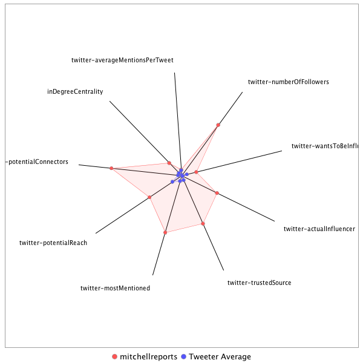

This tweeter has been identified as an influencer. Its target audience and hashtag and word usage are analyzed below.
Basic Statistics
Number of direct followers 1.29364e+06 The peak number of followers that the tweeter had during any time period. Number of retweeters 156 Number of agents that retweeted the key influencer. Number of secondary followers 15704838 The sum of the followers of those who retweeted the key influencer.
Measure Values of Other Influencers node versus Tweeter Average
This compares the measure values of the key influencer with the average values across all tweeters. For each measure line, the center-point means zero and the end-point means the maximum score across all tweeters.

Where was the influencer?
The agent is not recorded as being in any locations. Either he tweeted without geo-tags or we have no information about the tweets he sent.
The agent and retweeters were in 39 different locations.

What hashtags did the influencer use?
This displays the top ranked hashtags that the influencer and its retweeters used.
Rank hashtag Count 1 Comey 367 2 BREAKING 340 3 Trump 255 4 AHCA 248 5 mtal 240 6 adopt 220 7 ParisAgreement 219 8 Russia 178 9 AdoptDontShop 170 10 dog 169 11 ge2017 163 12 AMR 159 13 ComeyHearing 155 14 ForTheRecord 138 15 GA06 136 16 VAGov 128 17 Manchester 119 18 cat 102 19 trumprussia 98 20 MTPDaily 91 21 ComeyFiring 89 22 rescue 88 23 NYC 84 24 Qatar 81 25 Hardball 79 26 foster 79 27 MTP 76 28 ksleg 73 29 potusabroad 73 30 ComeyDay 72 31 Nats 72 32 ComeyTestimony 71 33 SCOTUS 71 34 TheBachelorette 66 35 LondonBridge 65 36 RiyadhSummit 65 37 covfefe 65 38 txlege 65 39 BladeInCuba 64 40 MOLeg 59 41 CATS 58 42 Israel 58 43 FBIDirector 54 44 Iran 54 45 NBC4DC 54 46 Syria 54 47 Obamacare 53 48 Cuba 51 49 FF 50 50 ISIS 50 51 AFP 49 52 dogs 49 53 FDA 48 54 NorthKorea 48 55 climatechange 47 56 pharma 46 57 MTpol 44 58 NATO 44 59 TrumpBudget 44 60 BladeEnCuba 43 61 CongressionalBaseballGame 42 62 GrenfellTower 42 63 MemorialDay 42 64 tcot 42 65 TBT 41 66 fakenews 41 67 LGBT 40 68 Venezuela 40 69 sallyyates 40 70 FBI 38 71 CA 37 72 Caps 37 73 snl 37 74 JamesComey 36 75 SaudiArabia 36 76 ACA 35 77 London 35 78 bbcelection 33 79 Alexandria 32 80 DoctorWho 32 81 Bashir 31 82 dogsoftwitter 31 83 sb4 31 84 Florida 30 85 ParisAccord 30 86 SC05 30 87 ShameonNBC 30 88 ACAwards 29 89 ManchesterBombing 29 90 Paris 29 91 ParisClimateDeal 29 92 TrumpInIsrael 29 93 Turkey 29 94 BoroughMarket 28 95 PLEDGE 28 96 US 28 97 Afghanistan 27 98 China 27 99 ManchesterArena 27 100 Putin 27
Tweet List
This displays all of the tweets of the influencer ordered from earliest to latest. Click on a tweet to see its status in Twitter.
Number Tweet ID Date Message 1 862288684741263361 2017-05-10 08:50:17-04 At State Dept I asked Lavrov & Tillerson if firing #Comey casts shadow over talks. Lavrov jokes:was he fired? You're kidding! 2 861706213788143621 2017-05-08 18:15:45-04 .@LindseyGrahamSC also tells @Greta you have to hold White House responsible for not vetting #MichaelFlynn for Russia & Turkey deals 3 863573397221015553 2017-05-13 21:55:16-04 Loved meeting James Herman Wharton 42 celebrating his 75th Reunion at Penn https://t.co/ENG7yWFNTt 4 863574545483141120 2017-05-13 21:59:50-04 100 year old Wilma Ackerman class of 1938 braved wind and rain for #Penn reunion today https://t.co/GdjkGKaVom 5 861705950473879555 2017-05-08 18:14:42-04 .@LindseyGrahamSC tells @Greta from a Republican point of view #SallyYates did the right thing didnt go to press went to White House 6 862394016889008132 2017-05-10 15:48:50-04 ICYMI: @RepAdamSchiff: For the Vice President of the US to abase himself this way is a terrible thing to watch #AMR https://t.co/IZj3l85pyU 7 863083424525021188 2017-05-12 13:28:18-04 James Clapper weighs in on his working relationship with fired National Security Advisor Michael Flynn @MSNBC #AMR https://t.co/2Iso3d4lG4 8 864649516913438721 2017-05-16 21:11:23-04 David Ignatius is not given to hyperbole. The #Comey memo could be a gamechanger https://t.co/DHylWF9Jcz 9 864648981095297024 2017-05-16 21:09:16-04 Ouch I guess he's not a fan? Straight talk from @SenMcCain https://t.co/ibULFKgHCU 10 864867990331953152 2017-05-17 11:39:32-04 US officials confirm to NBC News men who beat protesters outside Turkish Embassy in DC are Pres. Erdogan's bodyguards https://t.co/jaxfflCu7G 11 864970367240200193 2017-05-17 18:26:20-04 Exactly!! https://t.co/q8Rg5onvWL 12 866678924285235200 2017-05-22 11:35:32-04 His comments just confirmed it was Israel something no U.S official had admitted!! https://t.co/duwH9S6sEI 13 867506321825845254 2017-05-24 18:23:19-04 Trump budget unites both ends of the spectrum. https://t.co/PAMDpc2x6L 14 867830711331414020 2017-05-25 15:52:19-04 Makes all of us feel foolish listening to those aides! https://t.co/Hgy27PW540 15 868482797798907905 2017-05-27 11:03:29-04 Not a news conference !! No cameras and 1st POTUS to avoid reporters since these summits started decades ago https://t.co/aJf7gQNPgj 16 867414364940378113 2017-05-24 12:17:55-04 .@BernieSanders: that is a grotesquely immoral budget #AMR @MSNBC 17 874771702563172352 2017-06-13 19:33:21-04 Reporting from Havana, Cuba ahead of President Trumps announcement on new US Cuba policies #AMR https://t.co/bSVNORvawN 18 875164414961475584 2017-06-14 21:33:50-04 Hospital: #Scalise still critical bullet fractured bones injured internal organs caused severe bleeding he will need additional operations 19 875123961385947136 2017-06-14 18:53:06-04 RT @Phil_Mattingly: A few updates: Staffer Zack Barth has been released from the hospital Matt Mika is out of surgery and is currently in c… 20 875123796247814146 2017-06-14 18:52:26-04 .@chucktodd @mtpdaily talks about root causes of violence like today's https://t.co/gNJFC8CwQQ 21 875123023669583872 2017-06-14 18:49:22-04 RT @NewYorker: Our politics have long been suffering from an essential tribal sickness, and it is not limited to any one tribe. https://t.c… 22 875122708362788869 2017-06-14 18:48:07-04 Trump legal team attacks @WashingtonPost calling report outrageous inexcusable leak - https://t.co/rC9LJvLjRX 23 875121523966840832 2017-06-14 18:43:24-04 RT @washingtonpost: The Congressional Baseball Game is one of the last enjoyable political events in Washington https://t.co/rOCFr15Tbf 24 875121411429457924 2017-06-14 18:42:58-04 RT @Tom_Winter: IF the Washington Post story is true (and I am not doubting it) it means that the President of The United States is under i… 25 875121153479766017 2017-06-14 18:41:56-04 .@JeffFlake went to hospital to thank injured Capitol police officers who saved lives today 26 875118050915364866 2017-06-14 18:29:36-04 RT @NBCNightlyNews: ALERT: Congressmen targeted: The latest on the shooting attack. @LesterHoltNBC anchors @NBCNightlyNews live now from A… 27 875115808770412544 2017-06-14 18:20:42-04 This is what a hero looks like. They do their job every day often without thanks from the public https://t.co/1LK0nP8KDq 28 875115502376546304 2017-06-14 18:19:29-04 RT @markberman: Man, those Capitol Police officers today. Wounded, under fire and still trying to draw gunfire from everyone else https://t… 29 875114573245886464 2017-06-14 18:15:47-04 RT @NBCNightlyNews: COMING UP: @LesterHoltNBC anchors @NBCNightlyNews live from Virginia with the latest on the shooting attack. https://t.… 30 875082672292364288 2017-06-14 16:09:01-04 Team managers @JoeBarton @USRepMikeDoyle say fallen officers' charity will benefit from tomorrow's game hope #SteveScalise can watch on TV 31 875079796941836288 2017-06-14 15:57:36-04 RT @GlennKesslerWP: Analysis | After the shootings, calls for unity amid recriminations and finger-pointing @danbalz https://t.co/ESWXaSW73G 32 875079487611969538 2017-06-14 15:56:22-04 @resp_solutions @GabbyGiffords .@GabbyGiffords is making the gun law argument in the wake of another shooting at members of Congress. She's lived the aftermath 33 875075066886856707 2017-06-14 15:38:48-04 RT @NBCNightlyNews: WATCH: Lawmakers share firsthand accounts of the shooting at their baseball practice in #Alexandria. More tonight on @… 34 875070177934811138 2017-06-14 15:19:23-04 .@SenatorLeahy is leading Congressional proponent of engagement with #Cuba as politics shift on trade and travel ahead of Trump rollback https://t.co/Lnx4MA5WhF 35 875069518300803072 2017-06-14 15:16:45-04 RT @nytimes: Drew Gilpin Faust, the first woman to serve as Harvard’s president, will step down next year https://t.co/9yZ6YuLehP 36 875069435102605313 2017-06-14 15:16:25-04 RT @NBCNightlyNews: US congressmen give first-hand accounts of surviving Virginia shooting attack. https://t.co/jwSvedWtae https://t.co/329… 37 875062967276109824 2017-06-14 14:50:43-04 RT @NBCNightlyNews: JUST IN: Police: 3 killed and at least 2 injured during shooting at San Francisco UPS facility; gunman also killed. htt… 38 875062709611618305 2017-06-14 14:49:42-04 WATCH: @JeffFlake said: "it seemed he was firing indiscriminately" #AMR @MSNBC https://t.co/qf0LPS6R71 39 875061478499418113 2017-06-14 14:44:48-04 More members telling me cancelling other plans to show up tomorrow night in solidarity after #Alexandria shooting https://t.co/7KARbENUfe 40 875060714553167872 2017-06-14 14:41:46-04 MedStar Washington Hospital says @SteveScalise is in critical condition and remains in critical condition after surgery for gunshot wounds 41 875034550312816641 2017-06-14 12:57:48-04 RT @NBCNews: Zachary Barth, staffer shot at baseball practice, says he's OK https://t.co/9wmttxQxuj https://t.co/Vhj6gPElbE 42 875034494436356096 2017-06-14 12:57:35-04 RT @TODAYshow: “This is not the first time a member of Congress has been shot. It would be terrific if it was the last time.” -@clairecmc h… 43 875032865796485120 2017-06-14 12:51:07-04 .@clairecmc says many of us get along better than people would think #AMR 44 875032704718450688 2017-06-14 12:50:28-04 RT @KellyO: .@clairecmc speaks with @mitchellreports about the shooting. "Many of us get along better than people would think" https://t.co… 45 875032288513466368 2017-06-14 12:48:49-04 .@clairecmc: I'm hopeful that this might be a moment that would bring us closer as members of congress & as a country #AMR 46 875031625641463811 2017-06-14 12:46:11-04 .@RepAdamSchiff: the democratic team was also practicing this morning and there was no security there because no member of leadership there 47 875030747006078976 2017-06-14 12:42:42-04 .@RepAdamSchiff says members are deeply concerned about security, many members are seeing real escalation in number of death threats #AMR 48 875029145251610624 2017-06-14 12:36:20-04 RT @NBCPolitics: Sen. Bernie Sanders issues statement on Alexandria shooting, alleged shooter's possible involvement with his presidential… 49 875028373499674627 2017-06-14 12:33:16-04 .@NancyPelosi says today's shooting is an injury in the family action by shooter was "so cowardly" esp at time bringing members together 50 875027154601476097 2017-06-14 12:28:25-04 Former Rep Gabby Giffords was honored as only the 2nd woman to have ship named for her last weekend in Galveston Texas for her heroism https://t.co/J511FTNuZM 51 875026937160364032 2017-06-14 12:27:33-04 RT @NBCNews: "An attack on one of us is an attack on all of us": House Speaker Paul Ryan addresses Alexandria shooting https://t.co/PMMFt4r… 52 875026908362272769 2017-06-14 12:27:26-04 RT @chucktodd: Hope most folks realize we have a toxic political culture and that attempting to exploit today for political gain will only… 53 875026892105166848 2017-06-14 12:27:22-04 RT @MeetThePress: Fmr. Rep. Giffords, who was wounded in an assassination attempt 6 years ago, says her "heart" is with Rep. Scalise: https… 54 875026753680547845 2017-06-14 12:26:49-04 .@NancyPelosi: To my colleagues you're going to hear something you’ve never heard me say before– I identify with the remarks of the speaker 55 875026681853091842 2017-06-14 12:26:32-04 .@NancyPelosi says sends thoughts and prayers to colleague @SteveScalise asks to remember Capitol Police who protect Congress every day 56 875026341443375104 2017-06-14 12:25:11-04 .@BernieSanders says shooter was apparently a volunteer on his campaign Sanders says sickened by despicable act violence is unacceptable 57 875025763531202560 2017-06-14 12:22:53-04 .@SpeakerRyan tells House an attack on one of us is attack on all of us commends bravery of Capitol Police Krystal Griner & David Bailey 58 875025612771143680 2017-06-14 12:22:17-04 .@SpeakerRyan says "an attack on one of us is an attack on all of us" 59 875025434873868288 2017-06-14 12:21:35-04 RT @kwelkernbc: A solemn @SpeakerRyan says an attack on one "is an attack on all of us" while speaking on the House floor. 60 875025338966962177 2017-06-14 12:21:12-04 .@JeffFlake tells me they took cover in dugout as gunfire raged for 10 minutes then he ran to @SteveScalise tried to stem blood flow @MSNBC 61 875022987216420865 2017-06-14 12:11:51-04 RT @TODAYshow: .@JulieCareyNBC tells @tomcostellonbc that Hodgkinson cancelled his YMCA membership on Monday. The Y is next to the baseball… 62 875022213241556993 2017-06-14 12:08:47-04 RT @BraddJaffy: Bernie: “Real change can only come about through nonviolent action, and anything else runs against our most deeply held Ame… 63 875020529488605189 2017-06-14 12:02:05-04 Coming up on #AMR: @RepAdamSchiff @JeffFlake @clairecmc @KellyO @kasie @PeteWilliamsNBC & more for our breaking coverage on @MSNBC 64 875018302384476162 2017-06-14 11:53:14-04 .@RepMcSally says cheers went up at House members briefing when told tomorrow night's annual bipartisan baseball game will play as skedded 65 875017388571463680 2017-06-14 11:49:37-04 Shocked congressional baseball players immediately after shooting https://t.co/F2xaVowOuj 66 875004436304842752 2017-06-14 10:58:09-04 RT @MSNBC: Sen. McConnell opens Senate floor, salutes "continuing and unfailing bravery" of Capitol Police." https://t.co/I5bVxuknVV 67 875002949210079232 2017-06-14 10:52:14-04 right now @MSNBC @gabbygiffords husband @shuttleCDRKelly on @MSNBC 68 875002668774719488 2017-06-14 10:51:07-04 RT @TODAYshow: #BREAKING @petewilliamsnbc reports gunman in today’s Congressional baseball shooting is James T. Hodgkinson (66) of Bellevil… 69 875002634775781376 2017-06-14 10:50:59-04 RT @RepMoBrooks: Praying for those injured at this morning's practice. I'm especially thankful to the US Capitol Police who risked their li… 70 875002417783472129 2017-06-14 10:50:07-04 .@PeteWilliamsNBC reports suspected shooter is James Hodgkinson of Belleville Illinois 66 years old owns home inspection business 71 875002146068058112 2017-06-14 10:49:03-04 .@GovernorVA at scene says state police monitor and no threats before shooting is 1st official to raise issue of gun violence and controls 72 875000933087891456 2017-06-14 10:44:13-04 RT @NBCNightlyNews: We are working to determine which US congressmen were at scene of Virginia shooting. This is our latest list. https:/… 73 875000891971186689 2017-06-14 10:44:04-04 FBI takes over investigation discounts reports of political motive Alexandria police say 5 people transported to hospital community is safe https://t.co/ZifZ6pZa4V 74 875000544607305728 2017-06-14 10:42:41-04 RT @NBCNews: Alexandria Police Chief Michael Brown: The area is safe. The FBI has taken over shooting investigation. https://t.co/bohaIulD… 75 875000413036130304 2017-06-14 10:42:09-04 RT @MSNBC: Virginia Gov. McAuliffe thanks first responders, "through their heroic actions ... they saved a lot of lives today" https://t.c… 76 874999054404644864 2017-06-14 10:36:45-04 RT @NBCNightlyNews: JUST IN: Rep. Barton describes seeing gunman open fire and hit Rep. Scalise, and security detail returning fire. https:… 77 874989107155533824 2017-06-14 09:57:14-04 .@RepJoeBarton GOP team manager back on Hill still in uniform says hundreds of shots fired was in dugout calls Capitol Police are heroes 78 874977486349758466 2017-06-14 09:11:03-04 RT @washingtonpost: “Everyone probably would have died” without the presence of Capitol Police, Sen. Rand Paul said https://t.co/cGIBibyj8c 79 874977401503186945 2017-06-14 09:10:43-04 RT @Morning_Joe: Chief Michael Brown of the Alexandria Police Department speaks about the shooting at the baseball field in Virginia. https… 80 874977070572593152 2017-06-14 09:09:24-04 RT @TODAYshow: .@tomcostellonbc reports: 5 people shot including Scalise, 2 security officers, a staffer and a gunman. 81 874977012099805184 2017-06-14 09:09:10-04 RT @NBCNews: NEW: Vice President Pence on shooting in Virginia that wounded Congressman Steve Scalise and others https://t.co/kDZKUStY4K ht… 82 874976981930082305 2017-06-14 09:09:03-04 RT @TODAYshow: WATCH: "I play shortstop. Steve plays second. It just hits home like nothing really ever has." Congressman Costello tells @k… 83 874976934442262528 2017-06-14 09:08:52-04 RT @GabbyGiffords: My heart is with my former colleagues, their families & staff, and the US Capitol Police- public servants and heroes tod… 84 874976897062633472 2017-06-14 09:08:43-04 RT @AlexNBCNews: Capitol Police statement on shooting this morning in Virginia https://t.co/CkxbINPREY 85 874976875545858048 2017-06-14 09:08:38-04 RT @PeterAlexander: BREAKING: Sen. Rand Paul: If not for the Capital Police, "it would've been a massacre." 86 874976853328637952 2017-06-14 09:08:32-04 RT @nedprice: Tomorrow's Congressional baseball game should go on, of course, but teams shouldn't be partisan. Find another breakdown. Mayb… 87 874976816443817986 2017-06-14 09:08:23-04 RT @NBCNightlyNews: US Capitol Police deploying "robust police presence" throughout Capitol Complex as a precaution after Virginia shooting… 88 874960713097281536 2017-06-14 08:04:24-04 RT @Phil_Mattingly: Confirmed - House Majority Whip Steve Scalise was among those shot at the Congressional baseball practice this morning 89 874960665563340800 2017-06-14 08:04:13-04 RT @ericgeller: Thoughts and prayers are with these brave men and women who keep our lawmakers safe. https://t.co/Zj67kKV6N4 90 874960589059231745 2017-06-14 08:03:55-04 RT @DrewHampshire: Brooks was a Boy Scout https://t.co/hR2MLgHKTd 91 874960230668529664 2017-06-14 08:02:29-04 RT @BraddJaffy: NBC News Special Report on the air right now 92 874960167397445632 2017-06-14 08:02:14-04 RT @adamleeshaw: US Park Police have arrived for medevac in #AlexandriaVA #DelRay after multiple gunshots fired near YMCA baseball field. h… 93 874779588861329408 2017-06-13 20:04:41-04 This was bizarre https://t.co/SO62vGmZh6 94 874711835873755136 2017-06-13 15:35:27-04 Reporting live from Havana on letter from women business owners appealing today to @IvankaTrump #AMR 95 874689933616848896 2017-06-13 14:08:25-04 I spoke with several Cuban female entrepreneurs who wrote a letter to @IvankaTrump for support #AMR @MSNBC https://t.co/KtJ8ikOYF7 96 874684727474737153 2017-06-13 13:47:44-04 Marta Deus and other Cuban women small business owners wrote @ivankatrump to tell her father the rollback would hurt them https://t.co/fu1G3eVNiO 97 874679851017482242 2017-06-13 13:28:21-04 WATCH: Full interview with @ChrisRuddyNMX on #AMR @MSNBC https://t.co/buySdqBwrD 98 874671295107125252 2017-06-13 12:54:22-04 .@AGBecerra: I wouldn't be surprised if Sessions uses this opportunity to try & clean up his record before Mueller starts investigatiing 99 874670186787471360 2017-06-13 12:49:57-04 .@AGBecerra: Trump Muslim ban was going in wrong direction telling people we were going to make decisions based on natl origin or religion 100 874666860549111813 2017-06-13 12:36:44-04 Anita Dunn: Lets not forget this is first time attorney general has testified in open hearings on cap hill since he has been confirmed #AMR 101 874664617364082689 2017-06-13 12:27:49-04 Anita Dunn, Fmr WH Communications Dir: Perhaps the President isn't going to fire Mueller but he sure would like to #AMR 102 874662733190500358 2017-06-13 12:20:20-04 RT @MSNBC: Trump ally Ruddy on Mueller: "I did not talk to the president about the issue; I do not believe he will fire him." https://t.co… 103 874661300072218624 2017-06-13 12:14:39-04 .@ChrisRuddyNMX on firing Mueller: I said the president was keeping it as an option. #AMR 104 874660855866109952 2017-06-13 12:12:53-04 .@ChrisRuddyNMX says my view is Sessions shouldn't have recused himself and Rosenstein shouldn't have appointed a special counsel #AMR 105 874659812805677061 2017-06-13 12:08:44-04 .@ChrisRuddyNMX says I think the president himself gave his own communications department a C+ #AMR 106 874658672361828352 2017-06-13 12:04:12-04 Thank you to my friend @kwelkernbc for anchoring AMR today! Coming up: @ChrisRuddyNMX @PeteWilliamsNBC @AGBecerra @jwpetersNYT &more @msnbc 107 874637511489990656 2017-06-13 10:40:07-04 RT @NBCNews: READ MORE: North Korea frees jailed American student Otto Warmbier, Secretary of State Rex Tillerson says https://t.co/2chj1UX… 108 874332954461450243 2017-06-12 14:29:55-04 RT @AnitaBMcBride: Thank you @kwelkernbc for interview on @mitchellreports today on @FLOTUS moving to the White House https://t.co/BfVXSDJe… 109 874307469983526913 2017-06-12 12:48:39-04 .@AnitaBMcBride on Melania: She's really embracing this role as First Lady. #AMR @MSNBC 110 874307350533992448 2017-06-12 12:48:10-04 .@AnitaBMcBride: here is great thing about being first lady, get to pick &choose how to do it, when have a young family that is your focus 111 874302414161149956 2017-06-12 12:28:33-04 People in Cuba worry about Trump rollback of trade and travel reporting from Havana today #AMR https://t.co/8V6l3RYexb 112 874301384535003136 2017-06-12 12:24:28-04 Joining you live from Havana, Cuba #AMR @MSNBC https://t.co/NuHgtrfWun 113 874300254782357506 2017-06-12 12:19:59-04 .@sarafagen2 says Comey seems confident in his notes. The more Donald Trump talks about Comey tapes and lawsuits, the worse it is for him 114 874299853215604736 2017-06-12 12:18:23-04 .@sarafagen2: politically it seems well coordinated by the dems to put another distraction on top of a party that has lots of distractions 115 874298071731105792 2017-06-12 12:11:18-04 RT @NBCNews: WATCH LIVE: D.C. and Maryland attorneys general announce lawsuit against President Trump https://t.co/bcQ2HA2XLm https://t.co/… 116 874293644601249792 2017-06-12 11:53:43-04 Thank you to my friend @kwelkernbc for anchoring AMR today! Coming up @GarrettHaake @GlennThrush @samsteinhp @AnitaBMcBride &more. Tune in! 117 873702347553296384 2017-06-10 20:44:06-04 RT @HillaryClinton: @GabbyGiffords What a terrific day, thank you for letting me be a part of it. Congratulations Gabby! #USSGG https://t.c… 118 873702312975507456 2017-06-10 20:43:58-04 RT @GabbyGiffords: If you’re looking for strength and courage, look no further than this incredible crew. I am so thankful for their servic… 119 873671464242876417 2017-06-10 18:41:23-04 Congratulations to Gabby Gifford a true hero https://t.co/DSu4H0xxKi 120 873671017515843584 2017-06-10 18:39:37-04 RT @GarrettHaake: BREAKING: AG Jeff Sessions to testify before Senate Intel Tuesday. Deputy AG Rosenstein before appropriations. Another hu… 121 873578934797053957 2017-06-10 12:33:43-04 This is so funny Sarah! A young twitter star is born https://t.co/FoRA66C7Ce 122 873405609764409346 2017-06-10 01:04:59-04 Trump goes to Miami Friday to roll back Obama orders permitting more people to people exchanges, other Cuba measures, tho many r popular 123 873387880705662977 2017-06-09 23:54:32-04 RT @nytimes: White House's social media director sent a tweet that violated a federal law, a federal agency said https://t.co/HCIfew1PTW 124 873387817430388736 2017-06-09 23:54:17-04 RT @NBCNews: 14 commencement speakers who dropped knowledge on young Americans https://t.co/uiWwtOewVN via @NBCBLK https://t.co/7nTxHL3iom 125 873387732114055168 2017-06-09 23:53:56-04 RT @hardball: "At no time was he interested in what happened w/ the Russians should be cause for concern." Panetta on Trump. Watch https://… 126 873360333137735685 2017-06-09 22:05:04-04 RT @hardball: "He teased those tapes like it was a reality show." @ericswalwell on Trump's press conference. Watch: https://t.co/h3wh6MD5ZU 127 873360289546342400 2017-06-09 22:04:53-04 RT @PostBaron: Prosecutor: Gianforte will plead guilty to assaulting reporter. https://t.co/shg4GP5rxk 128 873360179579977729 2017-06-09 22:04:27-04 RT @PhilipRucker: Sometimes you’ve gotta kick a Trump presser story with a fact check. (No, Trump didn’t sweep the East Coast.) https://t.c… 129 873357369111183360 2017-06-09 21:53:17-04 @DavidPriess Yeah on a Friday night too. Should have gone Amtrak! 130 873355051540131840 2017-06-09 21:44:05-04 Hello DCA any excuse for not having a gate open for AA4757 ex LGA?? We landed 40 minutes ago. Still sitting out here. 131 873354514916679681 2017-06-09 21:41:57-04 RT @NBCNewsPR: SUNDAY NIGHT: @megynkelly w/ @ErinAndrews, @dateline_keith on gene editing & @jacobsoboroff on miners turned coders https://… 132 873353937298051072 2017-06-09 21:39:39-04 RT @NBCNightlyNews: WATCH: Pres. Trump on if Comey tapes exist: "I’ll tell you about that, maybe, some time in the very near future." https… 133 873353901302571009 2017-06-09 21:39:30-04 RT @chucktodd: Among the dumber ideas I've seen in crisis management is to make the existence of recordings a game show style mystery. 134 873314527890296832 2017-06-09 19:03:03-04 RT @NBCNightlyNews: Where does the US stand on Qatar crisis? Pres. Trump, Sec. Tillerson and the Pentagon have varying answers. @mitchell… 135 873217481401413632 2017-06-09 12:37:25-04 .@RepCharlieDent: if I were in WH right now I would say less is more, get on with business of the day, focus on infrastructure & tax reform 136 873216540723859456 2017-06-09 12:33:41-04 .@RepCharlieDent says I'm worried about broader context here, I returned from Germany & world is looking at US right now and think unstable 137 873215250358829056 2017-06-09 12:28:33-04 Greg Craig, served as WH counsel to Obama and Clinton, says it is highly unusual for president to ask to be alone with the director of FBI 138 873212648443326466 2017-06-09 12:18:13-04 .@SenJackReed: President Trump demonstrates not just in context of this investigation but in many other ways a temperment thats disruptive 139 873211909675380736 2017-06-09 12:15:17-04 .@SenJackReed: I don't think anyone knows whether tapes exists, if president has tapes that clearly contradict Comey I'm shocked not public 140 873209763353460736 2017-06-09 12:06:45-04 Coming up on #AMR: @kwelkernbc @matthewamiller @SenJackReed @RepCharlieDent @nedprice @RuthMarcus @samsteinhp and more on @MSNBC. Tune in! 141 873200802801831936 2017-06-09 11:31:09-04 RT @NBCNightlyNews: Sec. Tillerson to make a statement at 12 p.m. ET, US State Dept. says - @Abs_NBC 142 872877754928254976 2017-06-08 14:07:28-04 RT @BraddJaffy: Q: Do you believe that Trump colluded with Russia? Comey: “That’s a question I don’t think I should answer in an open sett… 143 872853200541548545 2017-06-08 12:29:54-04 #Comey says would have been "brutally unfair" to call for special counsel on Clinton emails because knew there was nothing there 144 872852809741422594 2017-06-08 12:28:21-04 #Comey says he knows he was fired because of the Russia investigation, something i was doing irritated him (Trump) 145 872848987224764416 2017-06-08 12:13:09-04 .@KamalaHarris asks series of q's about possible secret contacts between Trump camp and Russia #Comey declines to answer in open hearing 146 872846150814117890 2017-06-08 12:01:53-04 Asked if he would have been fired if Hillary Clinton had been President #Comey says "i don't know" 147 872845305422721024 2017-06-08 11:58:32-04 Asked about Mueller #Comey says he is a dogged person when this is over he will have turned over all the rocks 148 872842401454403585 2017-06-08 11:46:59-04 Everything goes back to the Bard https://t.co/ibzNC6vluU 149 872842052177932288 2017-06-08 11:45:36-04 RT @BraddJaffy: Comey just said that Trump was not accurate when Trump denied asking him to back off the Flynn investigation https://t.co/Y… 150 872841948226363393 2017-06-08 11:45:11-04 #Comey says Trump called himself to ask him to dinner had to break date with wife says in retrospect he wishes he'd been w/ her that night 151 872840874442592257 2017-06-08 11:40:55-04 RT @NBCNews: Comey: There is “no fuzz” that Russians interfered with 2016 election https://t.co/dZFKFZ0HuP 152 872840867161280512 2017-06-08 11:40:53-04 RT @NBCNightlyNews: WATCH: After Pres. Trump suggested tapes existed, Comey says he asked a friend to share existence of Comey's notes on t… 153 872840857212395520 2017-06-08 11:40:51-04 Asked why he didnt give memo to press staking him out raher than thru friend he says worried it would be like feeding seagulls at the beach 154 872838297357357061 2017-06-08 11:30:41-04 Asked why should people believe you? #Comey says Ive tried to be open + fair ask why would he kick everyone else out of the Oval Office? 155 872837781604749312 2017-06-08 11:28:38-04 #Comey says shared memos on Trump meetings to get it out after Trump tweeted might have tapes hoped wld prompt apptment of special counsel 156 872836024170422274 2017-06-08 11:21:39-04 #Comey says when he briefed Trump on dossier wanted to avoid "J Edgar Hoover" situation didnt want him to think holding something over him 157 872834103921561600 2017-06-08 11:14:01-04 RT @DafnaLinzer: In questioning, Comey says Trump was not personally under investigation but couldn't have said that publicly in case there… 158 872833586927460352 2017-06-08 11:11:58-04 RT @NPRKelly: Surreal to be sitting in Moscow, watching the former director of the FBI call the President of the United States a liar on li… 159 872833538843967492 2017-06-08 11:11:46-04 RT @Tom_Winter: Not true Marco Rubio. We've reported on numerous occasions that the President himself was not personally under investigatio… 160 872833224682209281 2017-06-08 11:10:31-04 .@MarcoRubio undercuts obstruction w/ fact that Trump told him it would be fine if it all came out on Russia (but what about Flynn case?) 161 872833194739064833 2017-06-08 11:10:24-04 RT @NBCNightlyNews: WATCH: "Lordy, I hope there are tapes," Comey says of Pres. Trump's suggestion their conversations were recorded. https… 162 872831689361412097 2017-06-08 11:04:25-04 .@MarcoRubio asks why Comey didnt tell President what he was asking wasn't appropriate #Comey says wish I was Capt Courageous but i wasnt 163 872830913440354304 2017-06-08 11:01:20-04 If you are wondering about seersucker there is an old Senate tradition 1 Thursday a year to wear seersucker on a Thursday could be today? 164 872830127641636864 2017-06-08 10:58:13-04 RT @mikememoli: "Maybe if I were stronger I would have. I was so stunned" -- Comey on why he didn't tell POTUS Flynn conversation was inapp… 165 872830065645629440 2017-06-08 10:57:58-04 RT @dabeard: Feinstein: Why didn't you tell #Trump this is wrong? Comey: "Maybe if I were stronger, I would have...I was stunned." #ComeyH… 166 872830019348856832 2017-06-08 10:57:47-04 .@SenFeinstein: you are big + strong why didnt you just say Mr President this is wrong (in Oval Office). #Comey says wish had been stronger 167 872829441789091840 2017-06-08 10:55:29-04 The son is chiming in - https://t.co/NQvP3tiIzM 168 872829285723242497 2017-06-08 10:54:52-04 RT @NBCNightlyNews: https://t.co/GVLLasVe1y 169 872829255864000513 2017-06-08 10:54:45-04 RT @NBCNightlyNews: BREAKING: Comey: "I don't think it is for me to say whether the conversation I had with the president was an effort to… 170 872829200041955328 2017-06-08 10:54:32-04 .@SenFeinstein asks #Comey why he thinks he was fired? Comey: take him at his word because of Russia probe (what he told @LesterHoltNBC) 171 872828854985003008 2017-06-08 10:53:10-04 .@SenatorRisch tries to undercut obstruction charge since Trump said "i hope" you let Flynn casse go #Comey says he took this as direction 172 872828231258435585 2017-06-08 10:50:41-04 RT @nytopinion: Congressional committees are powerful tools for investigating the full range of abuse of power by a president https://t.co/… 173 872827841091710976 2017-06-08 10:49:08-04 RT @NBCNightlyNews: BREAKING: Comey says he kept notes of mtgs. with Pres. Trump because felt president might lie about conversations. http… 174 872827825937690624 2017-06-08 10:49:04-04 RT @NBCNightlyNews: BREAKING: Comey says he felt the US president might lie about their private conversations "because of the nature of the… 175 872827715249897472 2017-06-08 10:48:38-04 .@SenatorRisch praising #Comey for written statement and his service what does that mean for how GOP Senators deal with this hot potato 176 872827359040241664 2017-06-08 10:47:13-04 .@MarkWarner asks if President ever asked him to take steps on any other investigation - #Comey says no 177 872827070379941889 2017-06-08 10:46:04-04 .@MarkWarner drilling down on Feb 14 meeting when Trump asked AG and others to leave #Comey wrote memo worried President might lie about it 178 872825956146216960 2017-06-08 10:41:38-04 #Comey acknowledges that 1 member of his team opposed decision to tell Trump he wasnt under investigation since that could change 179 872824053882605570 2017-06-08 10:34:05-04 #Comey says at one point former AG Lynch asked him not to call Clinton email probe "investigation" but "a matter" partly why he went public 180 872823894364893184 2017-06-08 10:33:27-04 .@SenatorBurr asks why #Comey went public on Clinton emails. Says it was because AG Lynch met with Bill Clinton on tarmac 181 872823611622653954 2017-06-08 10:32:19-04 .@SenatorBurr asks #Comey about dossier on Trump + why FBI opened counter intelligence investigation -since foreign power cld blackmail 182 872822650262958080 2017-06-08 10:28:30-04 .@SenatorBurr Were contents of Steele document, the dossier, confirmed? #Comey:cant answer in open session goes to content of investigation 183 872822296280535041 2017-06-08 10:27:06-04 .@SenatorBurr: Was POTUS trying to obstruct justice re Flynn? #Comey: Felt Flynn was in legal jeopardy, not for him to say if obstruction 184 872821899453235200 2017-06-08 10:25:31-04 .@RichardBurr asks #Comey if has any doubt Russia intervened? He says no. Was election outcome affected? No. 185 872821302557638656 2017-06-08 10:23:09-04 #Comey says Trump's explanations for firing were lies and apologizes to FBI colleagues for not saying goodbye will miss it for rest of life 186 872821039604133888 2017-06-08 10:22:06-04 .#Comey says was confused when saw on Trump saying (to @LesterHoltNBC) fired him because of Russia probe + then said fired due to campaign 187 872820768572395521 2017-06-08 10:21:02-04 RT @NBCNightlyNews: JUST IN: Comey sworn in for his testimony before the Senate Intel Cmte. https://t.co/FOwlxAZdyy 188 872820544583979008 2017-06-08 10:20:08-04 What to expect: once #Comey finishes remarks Senators will take turns by seniority for 7 minutes each, then they go to private session 189 872820127590481924 2017-06-08 10:18:29-04 .@MarkWarner reprises DNI, NSA heads refusing to answer q's about what Trump said to them says this is not witch hunt or fake news 190 872819719476318208 2017-06-08 10:16:51-04 .@MarkWarner zeroing in on Trump clearing the Oval Office loyalty pledge admonition to lift the cloud key moments raising q's about intent 191 872819039277592576 2017-06-08 10:14:09-04 RT @POLITICOMag: James Comey’s testimony joins the pantheon of dramatic congressional moments: https://t.co/TFu4knsdPu 192 872818977403269120 2017-06-08 10:13:55-04 Chairman Burr opens with praise for #Comey "the trust we have built up over the years" promising open and candid discussion. Good start... 193 872816418932314112 2017-06-08 10:03:45-04 RT @NBCNightlyNews: Programming Alert: @LesterHoltNBC, @SavannahGuthrie and @chucktodd anchor special coverage of the Comey hearing moment… 194 872816404063453184 2017-06-08 10:03:41-04 RT @NBCNightlyNews: ALERT: @NBCNews Special Report: The Comey Hearing LIVE now on NBC TV and online. https://t.co/77Hs9z3xsU 195 872804588428120064 2017-06-08 09:16:44-04 RT @NBCNews: Here's how to watch former FBI Director James Comey's Senate testimony today: https://t.co/2wagzwtGoX #ComeyDay https://t.co/r… 196 872804517133381633 2017-06-08 09:16:27-04 RT @MSNBC: LIVE BLOG: Former FBI Director James Comey testifies today about Trump and Russia. Follow the latest here: https://t.co/usk9GcWo… 197 872786315967950849 2017-06-08 08:04:07-04 @SavannahGuthrie Following your lead!! 198 872786029157253121 2017-06-08 08:02:59-04 RT @KenDilanianNBC: My table-setter for Comey's testimony: Trump faces cost of listening to bad advice https://t.co/oUCOK7j9zG via @nbcnews 199 872785920252145664 2017-06-08 08:02:33-04 RT @MSNBC: Tune in to MSNBC for our all-day coverage of James Comey's testimony, starting at 9 am. https://t.co/D0axTLLQBO 200 872785891189809152 2017-06-08 08:02:26-04 RT @BraddJaffy: Trump will monitor Comey's testimony, as time permits, in a WH dining room with his legal team & advisers, sr. WH aide tell… 201 872785860571299841 2017-06-08 08:02:19-04 RT @NBCNews: WATCH: The history of high-stakes hearings from @mitchellreports on @TODAYshow #ComeyDay https://t.co/RkDYzGoqQ5 202 872782145323970560 2017-06-08 07:47:33-04 Live from D.C. with my friend @SavannahGuthrie for @TODAYshow this morning https://t.co/h0EBfkv2Z5 203 872779737961295873 2017-06-08 07:37:59-04 RT @SavannahGuthrie: See? @mitchellreports agrees #redblazer https://t.co/OrXM98sM65 204 871889027795996677 2017-06-05 20:38:37-04 @NBCNews: Top US diplomat in Beijing embassy David Rank resigns after storied career to protest Trump withdrawal from Paris climate accords 205 872220682712748032 2017-06-06 18:36:30-04 Weeks after Trump heralded his success at uniting Arab world in Saudi Arabia-a diplomatic crisis grows among Arab leaders @NBCNightlyNews 206 870389375322009600 2017-06-01 17:19:32-04 Mayors of Paris and Pittsburgh join in opposition to @realDonaldTrump decision https://t.co/vYWOvlB04a 207 872256947571105797 2017-06-06 21:00:36-04 Prep session! https://t.co/LxUi44zQoI 208 871822478674415617 2017-06-05 16:14:11-04 The U.S. officially welcomes Montenegro to @NATO after the country's PM was "pushed around" at the the NATO summit only a few weeks ago https://t.co/WNcHQ8k9u7 209 872602091545653248 2017-06-07 19:52:05-04 RT @NewsHour: Here are 9 things we learned from James Comey's prepared Senate remarks. @LisaDNews reports: https://t.co/hztfLBACzQ 210 872601911236714496 2017-06-07 19:51:22-04 .@realDonaldTrump personal lawyer issues statement tonight saying #Comey statement vindicates Trump by saying he told him he wasn't target 211 872601548802732034 2017-06-07 19:49:56-04 Make good? After tweeting his support for Saudi/UAE moves against Qatar the President calls UAE leader and stresses regional stability 212 872599851372081152 2017-06-07 19:43:11-04 RT @joshtpm: Remember Trump has already locked himself in on the Feb 14th Flynn ask https://t.co/QqUfIrvUEZ 213 872599573734313984 2017-06-07 19:42:05-04 And thanks to you Maria for inspiring us all - family AND friends. We all love you https://t.co/p9KrBUpwDf 214 872599388010491905 2017-06-07 19:41:20-04 RT @NBCNightlyNews: "5, 4, 3, 2, music, effect, cue..." 360° inside the @NBCNightlyNews control room minutes before tonight's show. https:… 215 872599331643281408 2017-06-07 19:41:07-04 RT @nytpolitics: Here’s what James Comey can expect to be asked about when he testifies before the Senate on Thursday https://t.co/FfAALxRf… 216 872599271320825858 2017-06-07 19:40:53-04 RT @NBCNews: Here's how to watch James Comey's Senate testimony live https://t.co/NVdwZpAB0J https://t.co/SDZz6FIe6T 217 872583051989192704 2017-06-07 18:36:26-04 RT @NBCNightlyNews: NOW on @NBCNightlyNews. https://t.co/33IrpXrW47 218 872566811744710656 2017-06-07 17:31:54-04 If normal for NYC (without conceding the point) should it be normal for the Oval Office? https://t.co/S9WLSFAu9A 219 872566315759939584 2017-06-07 17:29:55-04 RT @mmurraypolitics: It's important to add Comey's written testimony to what we already know about Russia probe/Comey firing 220 872565941158260737 2017-06-07 17:28:26-04 RT @NBCNews: Obama and Trudeau share a private dinner north of the border https://t.co/TDWRxKKts4 https://t.co/S47EfdWlsP 221 872565885852102656 2017-06-07 17:28:13-04 RT @MeetThePress: Ahead of tomorrow's Comey testimony, here's a timeline of the events leading up to his firing. #MTPDaily https://t.co/Yuq… 222 872565852469686272 2017-06-07 17:28:05-04 RT @BraddJaffy: Comey says Trump asked him on March 30 to help “lift the cloud” of the Russia investigation March 31: https://t.co/uzguXGz… 223 872565815454965760 2017-06-07 17:27:56-04 RT @NBCNightlyNews: Eric Trump on Trump critics: “To me, they’re not even people. It’s so, so sad." https://t.co/xwd6OfHyNB https://t.co/Nk… 224 872565733791813633 2017-06-07 17:27:37-04 RT @NBCNightlyNews: Bars across the US plan to open early for Comey's testimony Thursday; serve "covfefe" cocktails. https://t.co/0tijdaE4p… 225 872542234830401538 2017-06-07 15:54:14-04 RT @kylegriffin1: Schiff tells @mitchellreports that DNI Coats and the NSA Dir. Rogers gave a "very carefully worded non-denial" re: pressu… 226 872542192195301377 2017-06-07 15:54:04-04 RT @SenatorShaheen: NBC's @mitchellreports on fact-based journalism, the importance of an informed & participating public (and why she ❤️'s… 227 872503091580596226 2017-06-07 13:18:42-04 RT @NBCPolitics: White House issues statement on President Trump's announcement to nominate Christopher Wray for FBI director https://t.co/… 228 872484725847457793 2017-06-07 12:05:43-04 Coming up on #AMR: @RepAdamSchiff @cohendavid @costareports @CapehartJ @BillNeelyNBC and more on @MSNBC. Tune in! 229 872483426594680833 2017-06-07 12:00:33-04 RT @SenatorShaheen: Granite Staters in DC today for New Hampshire Business Day w/ @SenShelby @mitchellreports @USNavy's Commander Emily Bas… 230 872468347451052033 2017-06-07 11:00:38-04 RT @politico: Ex-intel chief James Clapper: Watergate 'pales' in comparison to Russia probes https://t.co/QcRbzqBRou https://t.co/gKTIRYCOq1 231 872468101836800001 2017-06-07 10:59:39-04 .@MarkWarner telling Coats & Rogers their refusal to comment on Trump should be weighted against public's right to know if charges are true 232 872467769446596608 2017-06-07 10:58:20-04 RT @matthewamiller: Wray probably the best choice from the WH short list. His record in the Bush DOJ deserves scrutiny, but he's a serious,… 233 872467670523932672 2017-06-07 10:57:56-04 In general Adm Rogers says in 3 yrs on the job never been asked to do something illegal or unethical but won't answer specifics re Trump 234 872467475488800769 2017-06-07 10:57:10-04 .@NSA's Adm. Mike Rogers refuses to answer @MarkWarner q's re reported pressure from @realDonaldTrump to intervene w/ Comey on Russia probe 235 872422589439856640 2017-06-07 07:58:48-04 .@realDonaldTrump tweets he is nominating former DOJ official Christopher Wray as FBI Director 236 872262261410320384 2017-06-06 21:21:43-04 RT @maggieNYT: Two things - if Sessions was serious about resigning, he would have. And Trump isn't firing someone who would leave him with… 237 872262176886722560 2017-06-06 21:21:23-04 RT @seungminkim: Rosenstein too. Hearing is supposed to be on FISA but everybody has forgotten that https://t.co/Ka9Zacaie2 238 872262064617787393 2017-06-06 21:20:56-04 So glad @Maddow is well and back in the chair we have missed her unique voice on all things 239 872261731665444864 2017-06-06 21:19:37-04 Ahead of Wed hearing DNI Coats says he never felt pressured by Trump to stifle FBI collusion probe you can bet he'll be asked about it 240 872256840477933570 2017-06-06 21:00:11-04 RT @AshleyRParker: NEW: Inside Trump's West Wing: Frustrated, defiant and spoiling for a fight w Comey. W @costareports @PhilipRucker. http… 241 872256766175842307 2017-06-06 20:59:53-04 RT @BraddJaffy: NYT: Comey confronted Sessions, told him not to leave him alone with Trump https://t.co/n6GHQmK4tQ 242 872256612840419328 2017-06-06 20:59:16-04 RT @costareports: The war room is dead. The RNC has Pam Bondi and the Arkansas AG ready as surrogates. And Trump grips his phone. https://t… 243 872256526496477185 2017-06-06 20:58:56-04 RT @MSNBC: Leaked documents reveal new depth of Russian hacking: https://t.co/utbFvSl7dF https://t.co/rz68xdUuzZ 244 872225033825005568 2017-06-06 18:53:47-04 RT @NBCNightlyNews: @mitchellreports JUST IN: Amid Saudi-led diplomatic standoff with Qatar, White House says Pres. Trump spoke with Saudi… 245 872224841251905537 2017-06-06 18:53:01-04 Live from the State Department @NBCNightlyNews https://t.co/9JAWTnB9LJ 246 872223347890950144 2017-06-06 18:47:05-04 RT @NBCNightlyNews: @mitchellreports Pres. Trump: Gulf allies said they would "take a hard line on funding extremism, and all reference was… 247 872223108920430592 2017-06-06 18:46:08-04 RT @NBCNightlyNews: @mitchellreports After the key Gulf allies cut ties with Qatar, Pres. Trump tweeted "so good to see" his visit to Saudi… 248 872223069947002885 2017-06-06 18:45:59-04 RT @NBCNightlyNews: Pres. Trump appears to side with Saudi-led diplomatic blockade of US ally Qatar. @mitchellreports reports now on @NBCN… 249 872221533401473024 2017-06-06 18:39:53-04 .@realDonaldTrump tweet roils troubled waters in Mideast siding with Saudi coalition against US military ally Qatar @NBCNightlyNews 250 872220820357120000 2017-06-06 18:37:03-04 RT @NBCNightlyNews: Federal contractor arrested and charged with allegedly leaking Top Secret US intel docs. @PeteWilliamsNBC reports now… 251 872219180665380870 2017-06-06 18:30:32-04 RT @NBCNightlyNews: NOW: @LesterHoltNBC anchors @NBCNightlyNews LIVE from 30 Rock in the East. https://t.co/RNsk6aYLSr 252 872142111692517378 2017-06-06 13:24:17-04 That is the mystery: does Tillerson want to remain Home Alone? https://t.co/QoTvrCIYoj 253 872141702089363456 2017-06-06 13:22:40-04 RT @John_T_Watts: "the greatest enemy is not a foreign entity, but from us abandoning the principles that underpin our freedom" #ACawards h… 254 872129203302522882 2017-06-06 12:33:00-04 .@RepChrisCollins: There aren't any issues between the President and Attorney General Jeff Sessions, they are close friends #AMR 255 872128227258576898 2017-06-06 12:29:07-04 .@RepChrisCollins: my constituents like unfiltered honest conversations from Trump, tweeting, love he does that, speaking directly to them 256 872126521972064256 2017-06-06 12:22:20-04 .@SenAngusKing: 80% of positions that are required for senate confirmation haven't even been submitted #AMR 257 872121673402732544 2017-06-06 12:03:04-04 Coming up on #AMR: @SenAngusKing @KenDilanianNBC @KellyCobiella @carolelee @nickconfessore and more on @MSNBC. Tune in! 258 871939427999809538 2017-06-05 23:58:54-04 Veteran analyst + former CIA official Bruce Reidel blogs that Trump's heralded Saudi arms deal is fake news https://t.co/5UknRBxv40 259 871924159609270273 2017-06-05 22:58:13-04 RT @MSNBC: What's inside leaked NSA report on Russian election hacking? https://t.co/V1IIV1MQxx https://t.co/D4j6KaHgRV 260 871923706678923264 2017-06-05 22:56:25-04 RT @Nationals: TONY T̶W̶O̶ FOUR BAGS! #Nats are on top 1-0! #OnePursuit https://t.co/vmgOfERZPt 261 871923490307403776 2017-06-05 22:55:34-04 RT @theintercept: Russians continued hacking even after Obama asked Putin to “cut it out” or face consequences, the NSA report found. https… 262 871921609472430080 2017-06-05 22:48:05-04 RT @ForeignPolicy: If Nikki Haley pulls out from the UN Human Rights Council altogether, the abusers of the world win, writes @KenRoth http… 263 871921578333921280 2017-06-05 22:47:58-04 RT @maggieNYT: From the "wiretapp" tweet to Comey dismissal, Trump frustration w Sessions looms large @peterbakernyt and me https://t.co/Rc… 264 871921395529330688 2017-06-05 22:47:14-04 RT @michikokakutani: Trump grows discontented with Attorney General Jeff Sessions, fuming over recusal. by @peterbakernyt and @maggieNYT h… 265 871921255322177536 2017-06-05 22:46:41-04 RT @MicahGrimes: "I don’t think we should roll out the red carpet to the president of the USA," London Mayor Khan told @Channel4News today… 266 871921231624273926 2017-06-05 22:46:35-04 RT @MicahGrimes: More from the London mayor responding to the US president's tweets. https://t.co/dtUacGIeRP 267 871921164750376962 2017-06-05 22:46:19-04 RT @spectatorindex: UNITED KINGDOM: Mayor of London says Trump's policies 'go against everything we stand for' and calls for Trump's state… 268 871920949171556352 2017-06-05 22:45:28-04 RT @phils301: @hughhewitt @nedryun @POTUS Maybe he should start by nominating them? 269 871920896478498816 2017-06-05 22:45:15-04 RT @fenwaysteve: @hughhewitt @POTUS He hasn't nominated any. Has nothing to do w/ Dems & ephemeral obstruction claim. And it's now 3 Pol Ap… 270 871920730052726788 2017-06-05 22:44:36-04 @hughhewitt @POTUS POTUS has only nominated 1 Deputy Secretary no Undersecretaries or Assist Secretaries and only a few Ambassadors. Why? 271 871919613977784320 2017-06-05 22:40:10-04 RT @peterbakernyt: In their own way, some career diplomats stage their own revolt against Trump. @MarkLandler https://t.co/sYp65aRnbm 272 871919587490762754 2017-06-05 22:40:03-04 RT @nytimes: Here's the full lecture that Bob Dylan delivered as the last requirement to receive his Nobel Prize https://t.co/iOHjslBawx 273 871919531568058370 2017-06-05 22:39:50-04 RT @hardball: .@HardballChris to Carter Page: "Why are you hiding?" Watch: https://t.co/Ld0YS3exHS 274 871919502526750721 2017-06-05 22:39:43-04 RT @NBCNightlyNews: NEW: If you missed tonight's show, you can watch it here https://t.co/SJ4fBbmBSA 275 871919472738697216 2017-06-05 22:39:36-04 RT @NBCPolitics: President Trump’s tweets complicate the task of defending travel ban. Read more: https://t.co/5t6Nihwcpg https://t.co/6Nq0… 276 871919444821463040 2017-06-05 22:39:29-04 RT @MaddowBlog: Trump betrayal of 'special relationship' could get him disinvited from UK https://t.co/6RCLZUbkIg 277 871919391021117441 2017-06-05 22:39:16-04 RT @BraddJaffy: “Hotbed of resistance” at the State Dept. — American diplomats stage a “quiet revolt” against Trump https://t.co/qxtUeJrSiM… 278 871919207465857024 2017-06-05 22:38:33-04 SecState Tillerson's motorcade arriving New Zealand greeted by people signaling thumbs down & display of middle fingers for quitting Paris 279 871917414707077120 2017-06-05 22:31:25-04 RT @Sifill_LDF: Let me tell you Vernon Jordan is laying it OUT. tonight. "We have bern here before." @HLS_CLP @NMAAHC https://t.co/u4KMXSWE… 280 871917376622780416 2017-06-05 22:31:16-04 And he knows of what he speaks https://t.co/fYjeE3aegw 281 871898480222117893 2017-06-05 21:16:11-04 RT @DeseretNews: Former VP @JoeBiden will be interviewed by @MittRomney at the invitation-only summit in Park City https://t.co/SchDHpwMvu 282 871898457086341120 2017-06-05 21:16:05-04 RT @tackettdc: The quiet revolt among US diplomats @MarkLandler https://t.co/P3NbFkvC1I 283 871898428804141057 2017-06-05 21:15:59-04 RT @NYT: Led by Rachel Maddow, MSNBC Surges to Unfamiliar Spot: No. 1. https://t.co/8rx2vIAd94 284 871862386118053889 2017-06-05 18:52:45-04 .@HillaryClinton tonight w/o mentioning Trump:This is not a time to lash out to incite fear or to use tragedy and terror for political gain 285 871860851174780928 2017-06-05 18:46:39-04 Sara Ehrman was a dynamic democratic activist worked for Pa Sen. Joe Clark til his 68 loss, then George McGovern before Bill Clinton in 92 286 871860370641756163 2017-06-05 18:44:45-04 Sara Ehrman who drove @HillaryClinton to Little Rock in '74 to connect with boyfriend Bill while urging her not to marry him has died at 98 287 871856437101826048 2017-06-05 18:29:07-04 .@HillaryClinton says this is time for steady determined leadership including the Mayor of London implicitly slamming Trump tweet 288 871854053365612545 2017-06-05 18:19:39-04 .@RepCummings appearing on video from Johns Hopkins where he had heart surgery to intro @HillaryClinton at Baltimore community event 289 871851213654040579 2017-06-05 18:08:22-04 RT @NBCNightlyNews: BREAKING: US charges federal contractor with allegedly "removing classified material" from gov't facility "and mailing… 290 871851147224547329 2017-06-05 18:08:06-04 RT @thehill: Theresa May blasts Trump: "Wrong" to criticize London mayor https://t.co/OFGizLU5gs https://t.co/VS725ioBYk 291 871851020380499972 2017-06-05 18:07:36-04 Indeed! https://t.co/Y9LNTXbLfs 292 871848426748686336 2017-06-05 17:57:17-04 RT @kasie: Sen. Burr says committee has already started receiving some documents from Gen. Flynn subpoenas, per @MariannaNBCNews 293 871847498926530562 2017-06-05 17:53:36-04 RT @KenDilanianNBC: NBC News confirms that Justice announced charges against the alleged leaker of the NSA document an hour after the Inter… 294 871846085106511873 2017-06-05 17:47:59-04 RT @LesterHoltNBC: Vacation is over. Looking forward to being back with you less than an hour from now on @NBCNightlyNews 295 871839212999462914 2017-06-05 17:20:41-04 13 years later thinking about Ronald Reagan and Nancy Reagan's activism on behalf of Alzheimer's research. Much is learned still no cure https://t.co/hRPueAlwr6 296 871822604302241792 2017-06-05 16:14:41-04 RT @nytimes: "I think last night the city of Manchester became that symbol of hope," said Scooter Braun, Ariana Grande’s manager https://t.… 297 871816899885096961 2017-06-05 15:52:01-04 RT @NBCNightlyNews: @mitchellreports Following Nancy Reagan's death last year, @HarrySmith reflected on the end of the powerful Reagan love… 298 871811035061260288 2017-06-05 15:28:42-04 ICYMI: @McFaul, Fmr US Ambassador to Russia, on his takeaways from Putin's answers to @megynkelly @NBCNews https://t.co/c7Ebh3YmDg 299 871798585695903748 2017-06-05 14:39:14-04 Full Intvw: Wendy Sherman, Undersecretary of State for political affairs in State Dept for secretaries Kerry&Clinton https://t.co/LJeQvaamsm 300 871797238632263684 2017-06-05 14:33:53-04 .@PressSec President Trump won't seek exec privilege to block #Comey testimony. Experts say he waived any privilege by talking/tweeting 301 871772529421168640 2017-06-05 12:55:42-04 .@jmpalmieri on @realDonaldTrump tweets: He is tweeting as if he is an observer, not as President of US #AMR 302 871765103720484865 2017-06-05 12:26:11-04 Michael Leiter, Fmr Dir of National Counterterrorism center, on London terror attack: Cyber is involved in the radicalization&motivation 303 871763006518067200 2017-06-05 12:17:51-04 Coming up on #AMR: @wendyrsherman @McFaul @SykesCharlie @jmpalmieri @RepPeteKing @BillNeelyNBC and more on @MSNBC. Tune in! 304 870856530605879297 2017-06-03 00:15:51-04 RT @NBCNews: World leaders respond to President Trump's decision to withdrawal from the Paris Climate Agreement. Read more: https://t.co/5r… 305 870855533447794689 2017-06-03 00:11:53-04 RT @jonathanwald: "Are you going bonkers watching this from home?" @AriMelber ask @maddow. "Yes. Yes I am". 306 870855505568247808 2017-06-03 00:11:46-04 RT @jmartNYT: CARO closing in on final LBJ book > https://t.co/Tbc1O8N9iQ 307 870784361435725826 2017-06-02 19:29:04-04 Sunday Night with @megynkelly premieres Sunday 7pm including an exclusive interview with Russian President Vladimir Putin @NBCNews https://t.co/nqiAFRHrMo 308 870769170866208768 2017-06-02 18:28:43-04 First glimpse of @megynkelly's exclusive interview with #VladimirPutin tonight @NBCNightlyNews https://t.co/b6N9SghoAN 309 870768867651575808 2017-06-02 18:27:30-04 RT @NBCPolitics: Does President Trump believe in climate change? Aides won't say https://t.co/rnz5Eov65u 310 870768832071249921 2017-06-02 18:27:22-04 RT @GlennKesslerWP: Ethics office will press White House on undated conflict-of-interest waivers https://t.co/dqZTeEuVZf 311 870768765293780992 2017-06-02 18:27:06-04 RT @GlennKesslerWP: Analysis | Trump ran as an ally to business - but snubbed America's CEOs by pulling out of the Paris accord https://t.c… 312 870768653045833729 2017-06-02 18:26:39-04 RT @costareports: Scott Pruitt, outspoken and forceful, moves to the center of power within the Trump administration https://t.co/6SpWbdel5q 313 870768497353265154 2017-06-02 18:26:02-04 Even when pressed by the indomitable @kwelkernbc https://t.co/Tw4I9BXKTu 314 870768245791485954 2017-06-02 18:25:02-04 RT @NBCNews: JUST IN: SCOTUS asks challengers in travel ban case for a response to the government's appeal and the request for a stay in ne… 315 870768182939852802 2017-06-02 18:24:47-04 RT @BraddJaffy: WASHINGTON (AP) -- Special counsel's Trump campaign investigation includes Manafort case, may expand to include Attorney Ge… 316 870768105504616448 2017-06-02 18:24:29-04 RT @NBCNightlyNews: Q&A: What are the best-case and worst-case scenarios for climate change as a planet? A climate researcher explains. ht… 317 870768007173328896 2017-06-02 18:24:05-04 RT @ForeignPolicy: Momentum builds in Congress for new Russia sanctions, while White House reviews the issue. https://t.co/uFPw96aPNI 318 870767903037173760 2017-06-02 18:23:40-04 #Commencement: Always my favorite story of the year https://t.co/dORPScfK2r 319 870699776555106304 2017-06-02 13:52:58-04 WATCH: Full interview with @JohnKerry immediately after the President's announcement #AMR @MSNBC https://t.co/umnnqZhM3V 320 870683434124943361 2017-06-02 12:48:01-04 RT @NBCNightlyNews: WATCH: "Hopefully people can keep it in perspective,” Sec. Tillerson says Pres. Trump's decision to abandon the Paris c… 321 870681447580917761 2017-06-02 12:40:08-04 .@JohnKerry: The President was not truthful with the American people today&the President has talked abt putting America first, now put last 322 870680062676180992 2017-06-02 12:34:38-04 .@JohnKerry: America is going to want to live by Paris because America wants to deal realistically with the challenge of climate change 323 870675212034908160 2017-06-02 12:15:21-04 .@JCZarate1 on Putin: what you saw is classic Russian playbook..question evidence, lay claim to legitimacy in face of overwhelming info 324 870672075610087424 2017-06-02 12:02:53-04 RT @MSNBC: Putin to Megyn Kelly: Your daughter could hack an election: https://t.co/L7bcBrjTdA https://t.co/BAtYmsqO7W 325 870672000766939137 2017-06-02 12:02:35-04 Coming up on #AMR: @KeirSimmons @JCZarate1 @kwelkernbc @JohnKerry @SusanPage @JenniferJJacobs and more on @MSNBC. Tune in! 326 870650609309028355 2017-06-02 10:37:35-04 Secretary of State Tillerson defends exiting #Paris (decision he opposed) as a "policy decision" + says hopes people keep it in perspective 327 870650166298255362 2017-06-02 10:35:50-04 Tillerson:decision to pull out of #Paris was "a policy decision" that overall U.S. has good record hopes people will keep it in perspective 328 870416272349175808 2017-06-01 19:06:25-04 RT @NBCNews: EXCLUSIVE: NBC News' @megynkelly joins Vladimir Putin and Narendra Modi ahead of tomorrow's International Economic Forum in Ru… 329 870416226069217280 2017-06-01 19:06:14-04 RT @BraddJaffy: Did Russian banker head straight to Putin after meeting w/ Kushner? Really interesting from WaPo on the flight data. https:… 330 870409249280733184 2017-06-01 18:38:31-04 .@JohnKerry says @realDonaldTrump is not helping forgotten Americans he is hurting them. Calls it an extraordinary moment of fake news 331 870408994959093760 2017-06-01 18:37:30-04 .@JohnKerry tells me @realDonaldTrump #Paris exit is shameful abdication of U.S. leadership says Trump not being truthful about accord 332 870389550862004224 2017-06-01 17:20:14-04 Pittsburgh Mayor has a few choice words for @realDonaldTrump on #Paris https://t.co/FFkmlrC4MU 333 870387663240605696 2017-06-01 17:12:44-04 RT @hardball: TONIGHT: Trump leaves Paris deal, Comey breaks silence.@PeteWilliamsNBC, @KenDilanianNBC, @MichaelSteele, @biannagolodryga, @… 334 870387579874574338 2017-06-01 17:12:24-04 Make sure you watch @megynkelly @NBCNews premiere of Sunday Night with Megyn Kelly 7pm et exclusive with #VladimirPutin must-see TV https://t.co/Keao9Mli7W 335 870367822186242048 2017-06-01 15:53:54-04 .@realDonaldTrump says I was elected to represent citizens of Pittsburgh not Paris in pulling out of climate accords 336 870366552977264640 2017-06-01 15:48:51-04 .@BarackObama rebuts @realDonaldTrump says nations that stay with Paris accord will reap benefits in jobs says cities, states will step up 337 870365640506343428 2017-06-01 15:45:13-04 .@realDonaldTrump calls PARIS accord unfair says deal doesn't let US construct new coal plant permits other countries to gain advantage 338 870364468647165952 2017-06-01 15:40:34-04 .@realDonaldTrump withdraws from Paris climate agreement says will negotiate better deal if they can or a new accord on terms fair to US 339 870318092789981184 2017-06-01 12:36:17-04 .@JimInhofe on upcoming announcement from @realDonaldTrump: Im going to be pleased because think it will be a complete pullout, needs to be 340 870316092455079936 2017-06-01 12:28:20-04 RT @NBCNightlyNews: Sens. Leahy and Franken sent letters to FBI Director Comey asking to investigate AG Sessions' testimony, but Comey was… 341 870315987014492160 2017-06-01 12:27:55-04 RT @NBCNewsWorld: Putin says 'patriotic' Russians could have been part of hacking plots https://t.co/GIkV23wzMC 342 870311652876591104 2017-06-01 12:10:42-04 RT @NBCNightlyNews: JUST IN: Fired FBI Director Comey is scheduled to testify in open session before Senate Intel. Cmte. on June 8 at 10 a.… 343 870310026019295233 2017-06-01 12:04:14-04 Coming up on #AMR: @RepAdamSchiff @matthewamiller @JimInhofe @kwelkernbc @RonaldKlain @agearan @MichaelEMann and more on @MSNBC. Tune in! 344 870284587250970624 2017-06-01 10:23:09-04 RT @politico: Corey Lewandowski suggests Trump needs staff who are more like Corey Lewandowski https://t.co/5Cqqy9dxYk https://t.co/IYEcizh… 345 870284512646836225 2017-06-01 10:22:51-04 RT @TIME: Nigel Farage says the report that he is a person of interest in FBI probe is 'fake news' https://t.co/DrRGdnmLBu 346 870284224074571777 2017-06-01 10:21:42-04 RT @sbg1: Embassy not moving in Israel reminder Trump flip-flops when he wants. Which is why his consistency on Russia/Putin so striking. 347 870284060744183808 2017-06-01 10:21:03-04 .@PressSec: POTUS waived Embassy move to maximize chances of Israel/Palestsinian deal question is not whether to move Embassy but when 348 870283425466511361 2017-06-01 10:18:32-04 #NigelFarage says he "only" appeared on Putin RT network 3 x in 18 months denies @Guardian report he is looked at by FBI in Russia probe 349 870283077733535744 2017-06-01 10:17:09-04 .@realDonaldTrump waives moving U.S. embassy to Jerusalem says does it to promote chances of Israeli/Palestinian peace but still plans move 350 870267917480361984 2017-06-01 09:16:54-04 RT @NBCNewsPR: JUST IN via @mitchellreports: Trump would announce #Cuba rollbacks in Miami in an executive order citing human rights abuses… 351 870241018356137985 2017-06-01 07:30:01-04 RT @TODAYshow: Clinton: Russia likely had American help to ‘weaponize’ campaign leaks https://t.co/oAff32V99U https://t.co/FRM9deGAid 352 869998651090890752 2017-05-31 15:26:56-04 ICYMI @alfranken on Kathy Griffin: "that image has no place in our political dialogue" @MSNBC #AMR https://t.co/O9fGhNKT2q 353 869560524857593857 2017-05-30 10:25:59-04 Exactly. And German cars being built in southern states produce U.S. jobs... https://t.co/yJM2uq3nfg 354 862071081317933058 2017-05-09 18:25:36-04 .@brianefallon: Im not shedding tears for Comey personally he hurt FBI reputation but I worry whether we ever get to bottom of Russia now 355 859181526734516227 2017-05-01 19:03:33-04 State Dept and NSC blindsided by @realDonaldTrump's off the cuff invite to Duterte to DC I'm told that was NOT on the talking pts for call 356 870068908870565889 2017-05-31 20:06:07-04 Really? Was this discussed in that Oval Office meeting too? https://t.co/QpcBMvFdFs 357 862291337004986368 2017-05-10 09:00:49-04 Russian Foreign Minister Sergey Lavrov responds to shouted question on Comey firing. https://t.co/HNiwenWPmM 358 863075629251653633 2017-05-12 12:57:19-04 James Clapper says it would be “out of character” for Comey to appeal for his job during the dinner @MSNBC #AMR https://t.co/wFZ0WbO8hL 359 861209782845411328 2017-05-07 09:23:07-04 .@RoyBlunt: I think there's no question there was Russian interference in our elections...need to look at in a way that prepares us for 2018 360 865217581115994115 2017-05-18 10:48:40-04 Make up your own caption but weed is legal for medicinal uses in DC https://t.co/4dSMUxNHS4 361 860197550942560256 2017-05-04 14:20:52-04 Final vote: 217 to 213 with 20 GOP members voting against no dems voting for now GOP members bus to white house for victory lap with @POTUS 362 869570226685435905 2017-05-30 11:04:32-04 .@StateDept announces Mideast briefing with 22 minutes notice after no briefings for weeks and no alert Tillerson riding #RollingThunder 363 861189853547024384 2017-05-07 08:03:55-04 I’m in the chair this morning for my colleague @chucktodd. See you on @meetthepress! #IfItsSunday 364 861706535969452033 2017-05-08 18:17:02-04 Like that @SenWhitehouse @LindseyGrahamSC doing joint interview w/ @Greta @MSNBC bipartisanship lives? 365 870079918461374464 2017-05-31 20:49:52-04 Trump tweet is as tho campaign never ended and he wasn't POTUS - "Crooked Hillary" when FBI investiging his campaign not her 366 869706076693962753 2017-05-30 20:04:21-04 You are so right. Hurrah for them both and what they give to all the rest of us https://t.co/1ZbQDgxxaf 367 862350777481867264 2017-05-10 12:57:01-04 .@tombrokaw tells me follow the FACTS don't jump to conclusions way too early for #Watergate comparisons #AMR @MSNBC 368 861193308797894656 2017-05-07 08:17:39-04 This Sunday on @meetthepress, healthcare politics and policy fallout with @SecPriceMD, @RoyBlunt & @SenFeinstein. #MTP 369 861614175386316800 2017-05-08 12:10:02-04 .@nedprice: simply put, the tweet we saw from @realDonaldTrump this morning represents a fundamental misunderstanding of security clearance 370 861614738865876993 2017-05-08 12:12:16-04 .@nedprice: Mike Flynn both had a security clearance and was vetted, so why did Trump administration overlook everything they knew? #AMR 371 869694392990408704 2017-05-30 19:17:56-04 Sources close to Mike Flynn say he'lll provide some personal documents + business docs after senate intel narrowed supbeona request 372 864179528540839936 2017-05-15 14:03:49-04 50 years later and we are still marching #PennGrad '67 proud Quakers https://t.co/cU6QmU9lOc 373 870100133282811909 2017-05-31 22:10:12-04 RT @GlennKesslerWP: New #FactChecker: Trump on NATO funding: still misleading after months of fact checks https://t.co/ZP3oQaBEpV 374 870099634143756290 2017-05-31 22:08:13-04 Clinton has the last word? Unless he falls asleep on his keyboard again... https://t.co/DZNlD9kwuw 375 870097756790108161 2017-05-31 22:00:45-04 RT @NBCNightlyNews: WATCH: On election loss, Clinton points to Russia, fake news, WikiLeaks, DNC, emails, Comey, Trump camp and more. https… 376 870097730827374593 2017-05-31 22:00:39-04 RT @NBCNightlyNews: MORE: Clinton claims "Americans" must have guided Russians to "weaponize" information against her campaign. https://t.c… 377 870087060731940865 2017-05-31 21:18:15-04 RT @thehill: Clinton on Trump's "covfefe": "I thought it was a hidden message to the Russians" https://t.co/ma9G0FxfRt https://t.co/5GsKi0U… 378 870086728589168640 2017-05-31 21:16:56-04 Horrific, following incident at American Univ campus in DC when can we get past our nation's terrible history on race? https://t.co/5ukKDdnB6s 379 870085547141849089 2017-05-31 21:12:14-04 .@realDonaldTrump announcing Paris Climate Accord decision in Rose Garden 3pm et Thursday all signs point to him backing out of global deal 380 870085105884291073 2017-05-31 21:10:29-04 RT @thehill: Schiff: Trump shouldn't return compounds to Russia https://t.co/pjo4cU5397 https://t.co/paRSCVwaqB 381 870084993753788420 2017-05-31 21:10:02-04 RT @brhodes: Why are we making it easier for Russia to spy on us? https://t.co/HL8vRRbQUA 382 870079564206178305 2017-05-31 20:48:28-04 .@realDonaldTrump: Crooked Hillary Clinton blames everybody bt herself refuses to say she was terrible candidate.Hits FB even Dems,DNC 383 870078619657306112 2017-05-31 20:44:42-04 RT @BraddJaffy: A new message from the President of the United States, who won the election 204 days ago https://t.co/rKyFEogYcK 384 870077767211253761 2017-05-31 20:41:19-04 RT @WSJ: Looted in Syria, sold in New York? Our investigation into where antiquities trafficked by ISIS may be ending up https://t.co/LgOPw… 385 870077513325740032 2017-05-31 20:40:19-04 .@HillaryClinton unloads on #Comey Russians news media misogyny DNC & Trump operatives planting false stories https://t.co/Pvdi2MqRfQ 386 870046354407600136 2017-05-31 18:36:30-04 RT @NBCNightlyNews: NOW on @NBCNightlyNews. https://t.co/LpQ63SFRCW 387 870046328105074693 2017-05-31 18:36:23-04 RT @NBCNightlyNews: Comey cleared to testify before Congress, as Clinton again defends her election loss. @mitchellreports now on @NBCNigh… 388 869999745669898240 2017-05-31 15:31:17-04 .@HillaryClinton "men got paid for the speeches they made, I got paid for the speeches I made..it was used, I think unfairly used.." 389 869999116633477120 2017-05-31 15:28:47-04 Mossberg also asks if Goldman Sachs speeches were misjudgment prior to running. @HillaryClinton: why do you have Goldman Sachs here? 390 869998877314658305 2017-05-31 15:27:50-04 RT @hardball: .@alfranken: "I think it's disastrous" if Trump pulls the US from the Paris Agreement. (Via @mitchellreports) https://t.co/yT… 391 869998848571310082 2017-05-31 15:27:43-04 Walt Mossberg asks @HillaryClinton what mistakes she made apart from other forces. She says using private server but unfairly exploited 392 869992567844225025 2017-05-31 15:02:46-04 RT @JohnKerry: Clear argument by "the Davids" - @davideckelswade & David McKean - two of my former Chiefs who've been working on climate fo… 393 869991684062433280 2017-05-31 14:59:15-04 Brief briefing: @PressSec skeds briefing for 2:30, starts late cuts it off early to go to welcome for Vietnam PM 394 869991372501041152 2017-05-31 14:58:01-04 RT @jeffzeleny: For the first time, @PressSec refers questions about Russia investigation to Marc Kasowitz, @realDonaldTrump private lawyer. 395 869991251982131202 2017-05-31 14:57:32-04 .@PresSec being asked why Ted Nugent was invited to White House dinner after threatening @BarackObama and @HillaryClinton 396 869990877506220034 2017-05-31 14:56:03-04 Great idea! It would give this event some Judicial weight.. https://t.co/ppnsqo7qbp 397 869990591790161920 2017-05-31 14:54:55-04 RT @Omid_M: Nordic prime ministers mocking an image of Trump & Saudi Arabian King Salman touching a glowing orb during Trump's visit to Riy… 398 869990513239306240 2017-05-31 14:54:36-04 Breaking news @MSNBC audio only White House briefing @PresSec says does not know POTUS decision on #ParisAgreement 399 869990225220644865 2017-05-31 14:53:27-04 .@PressSec says POTUS and a small group of people know what he meant by midnight tweet #covfefe 400 869982033384230920 2017-05-31 14:20:54-04 RT @business: Elon Musk and other top executives make a final push for staying in the Paris agreement https://t.co/Hjp22Uy0sM https://t.co/… 401 869977749418524673 2017-05-31 14:03:53-04 RT @NBCNightlyNews: With West Wing in near-constant crisis, Pres. Trump is actively seeking advice about possible shakeup, sources say. htt… 402 869976721058971650 2017-05-31 13:59:48-04 .@elonmusk tweets he's done everything he can to advise POTUS not to leave #ParisAgreement will resign from CEO advisory panels if he does 403 869960352146042880 2017-05-31 12:54:45-04 .@mariashriver: the good thing about alzheimers is it is a nonpartisan issue... we can all agree funding is in our national interest #AMR 404 869957249841586177 2017-05-31 12:42:26-04 .@RNicholasBurns says I thought it was unseemly of the president to be arguing with the German chancellor via twitter #AMR 405 869956799868391427 2017-05-31 12:40:38-04 .@RNicholasBurns on Afghanistan: we are 16 years into this war and President Trump will face a difficult decision #AMR 406 869954471144697857 2017-05-31 12:31:23-04 RT @NBCNightlyNews: BREAKING: 11 US citizen contractor personnel injured in massive Kabul suicide bombing, US State Dept. official says. ht… 407 869950124599988226 2017-05-31 12:14:07-04 .@alfranken on Kathy Griffin: I condemn this, I talked to her&she made heartfelt apology..that image has no place in our political dialogue 408 869947458759131137 2017-05-31 12:03:31-04 Coming up on #AMR: @alfranken @GeorgeWill @mariashriver @CapehartJ @AshleyRParker @annenbcnews @HallieJackson and more on @MSNBC. Tune in! 409 869762549490868224 2017-05-30 23:48:45-04 He had already decided to leave his job. He was searching for a way to answer honestly I suspect. And above all not lie. https://t.co/6fjNvh4Pn5 410 869705896175300608 2017-05-30 20:03:38-04 RT @nytimes: President Trump is interviewing 2 more candidates for FBI director https://t.co/1YgjBRwrrd 411 869705588648882176 2017-05-30 20:02:25-04 RT @oliverdarcy: —@kathygriffin on Instagram: "I am sorry. I went too far. I was wrong” https://t.co/JJMvBuN0sb https://t.co/vsnpbOqL4s 412 869696129973325828 2017-05-30 19:24:50-04 State Department condemns horrific attacks in Baghdad https://t.co/ox6gIOsqp0 413 869696009768759296 2017-05-30 19:24:21-04 RT @hardball: "It's extraordinary that he wanted to use Russian communications." @KenDilanianNBC on Kushner's back channel requests. #hardb… 414 869695915174580224 2017-05-30 19:23:59-04 RT @nytpolitics: Four senators to watch in the Trump-Russia investigation https://t.co/m2RUxs38DX via @hillhulse https://t.co/piMoct1NP0 415 869680758750924801 2017-05-30 18:23:45-04 RT @AP: Ex-National Security Adviser Flynn to give some docs to Senate panel investigating Russian meddling in election. https://t.co/lO9Hc… 416 869680665960341504 2017-05-30 18:23:23-04 RT @SopanDeb: When Kirk did this, he went back in time and saved humpbacks from extinction. So this is a good thing. https://t.co/y5gOhfbZ4y 417 869680597043736576 2017-05-30 18:23:06-04 RT @JasonCalabretta: TUNE IN: @SavannahGuthrie in the chair tonight for @NBCNightlyNews https://t.co/2TQTjDGlLo 418 869680519109373953 2017-05-30 18:22:48-04 .@ChelseaClinton says #KathyGriffin tweet showing vioilence against @realDonaldTrump is vile and wrong. Not going to show the original pic 419 869679836029218818 2017-05-30 18:20:05-04 .@AP reports that Michael Flynn will turn over some business records to Senate Intelligence still wont release personal records report says 420 869679277964505088 2017-05-30 18:17:52-04 DOD says U.S interceptor fired ex Vandenberg AFB in California successfully destroyed ICBC launched from S Pacific a 1st. More @TODAYshow 421 869641244842045440 2017-05-30 15:46:44-04 We can only imagine the reaction from Erdogan https://t.co/3ZxJd8DCdN 422 869640810496757761 2017-05-30 15:45:01-04 RT @NBCNightlyNews: WATCH: Press Sec. Spicer says he hasn't asked Pres. Trump if he believes humans are contributing to climate change. htt… 423 869640731492831232 2017-05-30 15:44:42-04 RT @hardball: .@HardballChris says Kennedy’s backchannel was a part of US govt. Kushner started backchannels as a private citizen. https://… 424 869620609331986432 2017-05-30 14:24:44-04 .@KoriSchake: Trumps been acting as though no consequences for reckless behavior & Merkel making clear not true https://t.co/USlEjijMNW 425 869618605838786565 2017-05-30 14:16:47-04 .@McFaul: Russia is "laughing at how easy it is and how our president, unfortunately, is helping with their agenda" https://t.co/1pKRDqcaP5 426 869598987367723009 2017-05-30 12:58:49-04 RT @MSNBC: JUST IN: Senate & House Russia probe expands inquiry to include Trump's personal lawyer, Michael Cohen, NBC News confirms 427 869595999492288512 2017-05-30 12:46:57-04 RT @kylegriffin1: .@mitchellreports on @MSNBC says NBC News has confirmed Trump's personal lawyer Michael Cohen has been asked for more inf… 428 869594857815371776 2017-05-30 12:42:25-04 .@KoriSchake says Trump behavior leaving lots of space open for others to be setting examples we ought to be setting #AMR 429 869588768533213185 2017-05-30 12:18:13-04 .@McFaul: during Obama transition we were naming our team, that is what Trump transition should've focused on-dont have foreign policy team 430 869588297072472065 2017-05-30 12:16:20-04 .@McFaul on Sergey Gorkov: of the list of people that I know have a close relationship with Putin, Gorkov not on that list for me #AMR 431 869588062996746241 2017-05-30 12:15:25-04 .@McFaul on Sergey Gorkov: I don't understand why he met with Kushner, seems very odd to me..he is part of circle, not part of inner circle 432 869587396362457088 2017-05-30 12:12:46-04 .@McFaul on Trump & Russia: I think Russians are laughing at how easy it is and how our president is helping with their agenda #AMR 433 869584332037521408 2017-05-30 12:00:35-04 Coming up on #AMR: @PeterAlexander @McFaul @GlennThrush @samsteinhp @KoriSchake @MJGerson @RuthMarcus and more on @MSNBC. Tune in! 434 869559826719940608 2017-05-30 10:23:12-04 RT @washingtonpost: Mike Dubke had one of the worst jobs in Washington. He lasted 3 months. https://t.co/UvOXX03jwC 435 869559713435930624 2017-05-30 10:22:45-04 In case you're wondering where your Secretary of State was this weekend: https://t.co/mt5Km1Ho2B 436 869390507033718784 2017-05-29 23:10:24-04 RT @BraddJaffy: Wow. Jessica Chastain at Cannes -- lays into the film industry over the portrayal of women. https://t.co/48W5axnomO 437 869389618470428673 2017-05-29 23:06:52-04 RT @BraddJaffy: Ray Pfeifer, beloved FDNY firefighter who fought for 9/11 first responders health benefits, dies. RIP American hero. https:… 438 868958502001225728 2017-05-28 18:33:46-04 After 54 Years, We Fell in Love. After Five Months, I Got Leukemia., via @nytimes https://t.co/OhSzxnd53n 439 868955815348252672 2017-05-28 18:23:05-04 RT @washingtonpost: Opinion: Three Republican EPA administrators say Trump is putting us on a dangerous path https://t.co/C6u46yRZs7 via @P… 440 868955478356877312 2017-05-28 18:21:45-04 Military source says short range missile flew 6 minutes into Sea of Japan https://t.co/Vs5ztVv7iZ 441 868955212526039040 2017-05-28 18:20:41-04 RT @RichardEngel: A profound headine: "Merkel: Europe 'can no longer rely on allies' after Trump and Brexit." It's a strategic weakness in… 442 868679418746679296 2017-05-28 00:04:47-04 RT @NBCNews: Biden: "It's time for America to get up, it's time to regain our sense of unity and purpose and remember who we are" https://t… 443 868679380054290432 2017-05-28 00:04:38-04 RT @NBCNews: Fmr. VP Biden: "I thought we had passed the days when it was acceptable for political leaders... to bestow legitimacy on hate… 444 868679334994870272 2017-05-28 00:04:27-04 RT @DanLamothe: Army Spc. Etienne Murphy died Friday in a vehicle rollover in Syria. He was 22, and a member of the elite 75th Ranger Regim… 445 868679117465583616 2017-05-28 00:03:35-04 And Trump shared with Duterte classified details about deployment of 2 nuclear subs off the coast of N Korea https://t.co/ys2oEYqxWO 446 868678544506970112 2017-05-28 00:01:18-04 Making the Trump budget slashing this Bush 43 landmark program inexplicable https://t.co/qjetlFI3KS 447 868678544502788096 2017-05-28 00:01:18-04 195 nations on board and US 2nd only to China in harmful emissions https://t.co/zFJmvH3y6o 448 868484064843632641 2017-05-27 11:08:31-04 RT @NBCNews: Baseball for the blind takes flight in Cuba https://t.co/D8imTKMZlz https://t.co/rU8vml8tTm 449 868483977434337280 2017-05-27 11:08:10-04 Right https://t.co/8SeWBzakWh 450 868483890066972674 2017-05-27 11:07:49-04 RT @NBCNightlyNews: WATCH: @LesterHoltNBC reports from Jerusalem on the city's history of faith, conflict and politics. https://t.co/RjN1F0… 451 868483867186954242 2017-05-27 11:07:44-04 RT @NBCNightlyNews: Larissa Hall, age 9, in Manchester: "I just feel sad for all the people..." @LesterHoltNBC: "We're all very sad." http… 452 868483824883302400 2017-05-27 11:07:34-04 Obama today praising Zbigniew for decades of wise counsel to Presidents including him, helping shape American national security policy https://t.co/WGYv4iRYLy 453 868483393826279424 2017-05-27 11:05:51-04 RT @KenDilanianNBC: Kushner met with Russian banker who is Putin 'crony,' spy school grad https://t.co/bgWB3jqGWj via @nbcnews 454 868483288880558081 2017-05-27 11:05:26-04 RT @BeschlossDC: JFK at Arlington National Cemetery, Memorial Day, 1963: #JFKL https://t.co/gxnQYJtSCb 455 868483226851004417 2017-05-27 11:05:11-04 Right then why wouldn't he say so? https://t.co/P5LfGMyRTR 456 868483007816097796 2017-05-27 11:04:19-04 Maybe he will read translation later:) https://t.co/iyjCvM9E08 457 868482296239796228 2017-05-27 11:01:29-04 RT @BraddJaffy: Jared Kushner met with a Russian banker who's a Putin crony, spy school grad https://t.co/SjFjp0vNMz 458 868482268066705408 2017-05-27 11:01:22-04 RT @costareports: RT @tamarakeithNPR President Trump's Iowa rally scheduled for next week has been canceled. 459 868482240543694849 2017-05-27 11:01:16-04 RT @BarackObama: Good to see my friend Prince Harry in London to discuss the work of our foundations & offer condolences to victims of the… 460 868482201834409984 2017-05-27 11:01:07-04 RT @AshleyRParker: And then Trump was so unhappy w the story, he called us out as "a woman named Parker and a woman named Haberman...wisegu… 461 868482139469352962 2017-05-27 11:00:52-04 RT @carolelee: Press conferences aren't off camera &Trump hasn't had a single one on nine-day foreign trip, only G7 leader not to https://t… 462 868482100256796672 2017-05-27 11:00:42-04 RT @kwelkernbc: McMaster says not "concerned" by idea of back channel btw transition team and Russians if report true. Won't comment direct… 463 868481470591107072 2017-05-27 10:58:12-04 Obama on Zbig: I was one of several Presidents who benefited from his wisdom + counsel his ideas + advocacy helped shape decades of policy 464 868325046435139585 2017-05-27 00:36:38-04 RT @GlennKesslerWP: RIP Zbig Brzezinski, one of America's sharpest foreign-policy minds and my favorite professor in grad school. I kept le… 465 868324959151693824 2017-05-27 00:36:17-04 RT @washingtonpost: Zbigniew Brzezinski, foreign policy intellectual who served as Carter’s national security adviser, dies at 89 https://t… 466 868324622172909568 2017-05-27 00:34:57-04 RT @GlennKesslerWP: In my grad school seminar with Zbig Brzezinski, his most cutting put-down was: "That's typical fuzzy-headed State Dept… 467 868324549540147201 2017-05-27 00:34:39-04 RT @DavidPriess: Great loss tonight for strategic thinking w the death of Zbig Brzezinski, who generously offered me his time & insights.… 468 868323703817478145 2017-05-27 00:31:18-04 He was a legend, brilliant and wise, wickedly funny. Our thoughts are with Mika and all of the family. https://t.co/7A0qMiTn0w 469 868322660249477121 2017-05-27 00:27:09-04 RT @MaddowBlog: April 3, 2017 - Blackwater founder held secret Seychelles meeting to establish Trump-Putin back channel https://t.co/1zewjX… 470 868322535435366401 2017-05-27 00:26:39-04 RT @KenDilanianNBC: The leakers were so disgusted they were willing to expose that the US owned Kislyak's communications back to Moscow. 471 868237380473552896 2017-05-26 18:48:17-04 Germans not taking kindly to Trump's reported slam on them https://t.co/8ODmO93uOJ 472 868236532955664384 2017-05-26 18:44:55-04 RT @MSNBC: Former CIA Director Leon Panetta: Russians "very successful" in undermining FBI credibility https://t.co/bp6WPs5MtW https://t.co… 473 868223914564100097 2017-05-26 17:54:46-04 RT @NYMag: James Comey reportedly shaped the Clinton probe around Russian intelligence that he knew was fake https://t.co/3ZI4p99sHJ 474 868223669075619841 2017-05-26 17:53:48-04 They are heroes for PEPFAR transforming health aid to sub-Saharan Africa. Decimated in Trump budget https://t.co/YkbkMfKuLG 475 868186255892328449 2017-05-26 15:25:08-04 .@RoKhanna on Mark Zuckerberg for President one day? "Who knows but he's making a good contribution to politics" https://t.co/dQGiWTKZgX 476 868148437925195777 2017-05-26 12:54:51-04 .@RoKhanna: I say for a president that made his whole reputation built on Apprentice you'd think he'd want to fund apprenticeships #AMR 477 868144610081726464 2017-05-26 12:39:39-04 .@Julie_C_Smith on Trump NATO speech: supposedly there were efforts by the pentagon to make changes, get tone right, make this a win #AMR 478 868144432952086528 2017-05-26 12:38:56-04 .@Julie_C_Smith on Trump NATO speech: truly missed opportunity and lost potential for big win in Brussels #AMR 479 868138621018271744 2017-05-26 12:15:51-04 .@HillaryClinton to Wellesley graduates: There will be trolls galore online and in person.and they may even call you a nasty woman 480 868138090099093504 2017-05-26 12:13:44-04 .@HillaryClinton: Some deny things we see with our own eyes like size of crowds & defending themselves by talking abt alternative facts 481 868136748047634432 2017-05-26 12:08:24-04 @HillaryClinton When people in power invent their own facts and attack the people who challenge them it can mark the end of free democracy 482 868136543973781505 2017-05-26 12:07:35-04 RT @agearan: Coming up after the @HillaryClinton speech I'll join @mitchellreports on @MSNBC 483 868136515653775360 2017-05-26 12:07:29-04 Coming up on #AMR: @agearan @stavridisj @SykesCharlie @RoKhanna @AshleyRParker Jeremy Bash and more on @MSNBC. Tune in! 484 868136433340620801 2017-05-26 12:07:09-04 .@HillaryClinton at Wellesley attacks Trump budget as attack of unimaginable cruelty on the weakest among us - going after Trump bigly 485 867944536097472512 2017-05-25 23:24:37-04 RT @nytopinion: Colin Powell: Do we really want to slash the State Department and the USAID at such a perilous moment? https://t.co/JnqRsus… 486 867867942544961537 2017-05-25 18:20:16-04 Re @DerSpiegel report Trump slammed Germans as "bad" to EU today for trade surplus aides says POTUS is upset about German trade surplus 487 867858943619383297 2017-05-25 17:44:30-04 Bipartisan group of 54 Senators renew push to lift travel ban to #Cuba @senatorLeahy @JeffFlake 488 867858516039434240 2017-05-25 17:42:48-04 Was he surprised some dems opposed him for FBI? @JoeLieberman says no some on left don't forgive his support for @SenatorJohnMcCain 489 867838927654277120 2017-05-25 16:24:58-04 RT @nytpolitics: An appeals court refused to reinstate Trump’s revised travel ban. The case will likely go to the Supreme Court. https://t.… 490 867838860306391040 2017-05-25 16:24:42-04 .@JoeLieberman was at White House the day they learned Mueller taking Special Counsel to probe Russia ties, felt that wld take pressure off 491 867838435045896192 2017-05-25 16:23:01-04 RT @kevtibs: He carries the names of lost pals.... so a nation remembers @NBCNightlyNews #CarryTheLoad #MemorialDay https://t.co/Mm7O5rGkDq 492 867838347703599104 2017-05-25 16:22:40-04 .@JoeLieberman says part of the call was to step in and restore respect for FBI and lower the profile and thought seriously about it 493 867838178299752448 2017-05-25 16:22:00-04 .@JoeLieberman telling @NicolleDWallace @realDonaldTrump called him a week ago Tuesday to ask him to think about taking FBI job 494 867836527077752832 2017-05-25 16:15:26-04 "Enemies of the people?" https://t.co/aDepxorpyJ 495 867834805769064450 2017-05-25 16:08:35-04 .@PeterBakerNYT tells @NicolleDWallace they're feeling good in Moscow not so good in Riga Vilnius Tallinn feeling Putin threat @MSNBC 496 867833971685691392 2017-05-25 16:05:17-04 RT @dabeard: "She's basically closed the door on ever running again." What's next for Hillary Clinton, starting tomorrow https://t.co/1pB8O… 497 867833823341543424 2017-05-25 16:04:41-04 RT @PolitiFact: Montana Republican blames reporter for instigating clash: https://t.co/e20vV1cP2R https://t.co/GvThQyJntM 498 867833147727245312 2017-05-25 16:02:00-04 RT @jonathanwald: No FBI, @JoeLieberman does get to talk to @NicolleDWallace in an exclusive live interview next @MSNBC Deadline Whitehouse. 499 867833032551608322 2017-05-25 16:01:33-04 Per @AlexNBCNews #Gianforte campaign sources claim to have raised 100K in last 24 hours most after assault #unjustdesserts 500 867831270495080449 2017-05-25 15:54:33-04 Fmr Sen Bob Kerrey of Nebraska: when you weaken western alliance, as Trump did tdy w NATO speech, strengthens Russia https://t.co/R8ccp3keEm 501 867830494548721664 2017-05-25 15:51:28-04 A departing Wise Man who once covered energy for WSJ and beat all the rest of us every day. Mossberg will always be the head of the class https://t.co/hRNkdSLi6B 502 867830027827769344 2017-05-25 15:49:36-04 RT @vali_nasr: Compare this with speech in Saudi!! https://t.co/cQEu5iTy8R 503 867829943245447169 2017-05-25 15:49:16-04 RT @davidaxelrod: It's not fair, based what we know, to say this @POTUS is Russian plant. He just so often acts like one! https://t.co/QFuj… 504 867829717835165696 2017-05-25 15:48:22-04 RT @nytimes: Video footage at a NATO summit shows President Trump appearing to push his way to the front of a “family photo” https://t.co/v… 505 867828546273591296 2017-05-25 15:43:43-04 Very cool https://t.co/IK15u7JjmU 506 867828343894192128 2017-05-25 15:42:55-04 love this https://t.co/kooYphkmY7 507 867827530174152704 2017-05-25 15:39:41-04 .@RNicholasBurns on Trump #NATO speech: Not diplomatic and not right...a major miscalculation by Trump & advisers https://t.co/l7yMUWOWIW 508 867827409218883585 2017-05-25 15:39:12-04 RT @ForeignPolicy: Trump has effectively made James Mattis commander-in-chief of America's military. He'll regret that. https://t.co/h4cZDD… 509 867826855193268224 2017-05-25 15:37:00-04 He is backed up by Supreme Court ruling in case of NY Congressman Adam Clayton Powell: if he meets age requirement etc must be seated https://t.co/MQEJWb3Yee 510 867826377290133504 2017-05-25 15:35:06-04 RT @washingtonpost: Researchers say they’ve uncovered a disinformation campaign with apparent Russian link https://t.co/0j90ZGLdGo 511 867826229231194112 2017-05-25 15:34:31-04 RT @NYT: Rough Treatment of Journalists in the Trump Era. https://t.co/dSJGaNidQK 512 867825965455384577 2017-05-25 15:33:28-04 This is the President pushing aside #NATO's newest member Montenegro, joined the alliance over Putin's objections. Nice welcome https://t.co/m92JlbfpqK 513 867825610344861696 2017-05-25 15:32:03-04 .@NicolleDWallace broke the story that @JoeLeiberman wrote @realDonaldTrump and took himself out of running for FBI to avoid conflicts https://t.co/16HiEmKEjG 514 867825075701067777 2017-05-25 15:29:56-04 The complaint re Montana GOP congressional candidate Greg Gianforte says he "purposely or knowingly caused bodily injury to another" 515 867824147304509443 2017-05-25 15:26:14-04 RT @RichardHaass: public lecturing of NATO allies unseemly & counterproductive; hard not to see contrast between this & overly-solicitous t… 516 867783468465491968 2017-05-25 12:44:36-04 RT @MSNBC: Paul Ryan condemns Gianforte for 'body slam' on reporter: "There's no call for this no matter what circumstance" https://t.co/a… 517 867783435284361216 2017-05-25 12:44:28-04 RT @MSNBC: JUST IN: Joe Lieberman withdraws from consideration as FBI Director. Watch his exclusive interview on MSNBC with @NicolleDWallac… 518 867783335912853506 2017-05-25 12:44:04-04 RT @NBCNightlyNews: Sec. Tillerson to make his first visit to the UK on Friday as an expression of US-UK solidarity following the #Manchest… 519 867773872757772288 2017-05-25 12:06:28-04 Coming up on #AMR: @RonWyden @GarrettHaake @alexis_levinson @Yamiche @CapehartJ @RNicholasBurns and more on @MSNBC. Tune in! 520 867753184395177984 2017-05-25 10:44:15-04 look at Merkel's face - classic https://t.co/RM99BWPpui 521 867753016996311040 2017-05-25 10:43:35-04 Trump says not fair to U.S. taxpayers that NATO members not paying fair share not going over well with other leaders esp Merkel 522 867752861257617409 2017-05-25 10:42:58-04 After UK complaint re intel leaks from Manchester Trump says asking DOJ to launch complete review & if appropriate prosecute culprit 523 867752288668065793 2017-05-25 10:40:42-04 .@realDonaldTrump brings World Trade Ctr artifact to 9/11 memorial at NATO - 9/11 was only time NATO invoked collective defense agreement 524 867751827336507394 2017-05-25 10:38:52-04 .@realDonaldTrump speaking now @MSNBC #NATO saying all nations grieve with UK asks for moment of silence for Manchester victims 525 867667844116480002 2017-05-25 05:05:09-04 RT @nytimes: "I'm sick and tired of you guys!" Gianforte is heard saying on a recording after the sounds of a physical struggle. https://t.… 526 867667653695033353 2017-05-25 05:04:23-04 Election Day: Gianforte cited for misdemeanor assault 3 Montana papers withdraw endorsements FOX News witnesses back @Bencjacobs account 527 867582833388400640 2017-05-24 23:27:21-04 FOX News witness: Gianforte grabbed Jacobs by the neck, slammed him into the ground began punching him yelling "Im sick + tired of this" 528 867541518743195648 2017-05-24 20:43:10-04 RT @JasonCalabretta: Sen. Bernie Sanders calls Trump's budget 'grotesquely immoral' on @mitchellreports https://t.co/sSfjTC6GyF 529 867541469804060672 2017-05-24 20:42:59-04 RT @BraddJaffy: Bernie unloads on Trump’s budget to @mitchellreports: “grotesquely immoral … a massive transfer of wealth” from working fam… 530 867541052290453504 2017-05-24 20:41:19-04 RT @scottwongDC: Gianforte statement says "aggressive behavior" came from "liberal journalist" #MTAL https://t.co/pJlI4RCDOg 531 867540229762293760 2017-05-24 20:38:03-04 @Hadas_Gold The question @Bencjacobs asked Gianforte? His reaction to CBO score. Campaign accusing reporter of instigating incident. Listen to the tape 532 867537924753170432 2017-05-24 20:28:53-04 I don't know @Bencjacobs but my colleagues say he is mild mannered not aggressive and the audio tape tells the tale. #Gianforte in trouble 533 867536426614886401 2017-05-24 20:22:56-04 RT @Bencjacobs: Listen to me get body slammed in Montana https://t.co/I8hAUsmuWw 534 867536387930812416 2017-05-24 20:22:47-04 .@Bencjacobs live now @MSNBC telling @Chrislhayes what happened with Gianforte 535 867523117614288896 2017-05-24 19:30:03-04 RT @Nationals: So let's recap: Trea was safe at 1st. Stole 2nd. Advanced to 3rd on Bryce's fly ball. And just scored on Zim's sac fly. htt… 536 867522529157623808 2017-05-24 19:27:43-04 This race was looking very tight before this: @BernieSanders campaigned for Quist @realDonaldTrump recorded robo message for Gianforte https://t.co/DTDmyXedp5 537 867521896866349057 2017-05-24 19:25:12-04 RT @MSNBC: .@SenFeinstein on Special Counsel Robert Mueller appointment: "I think he's one of the best things that's happened" https://t.co… 538 867506735640178688 2017-05-24 18:24:57-04 .@ChuckTodd showed how it's made tonight @MTPDaily the Food Network comes to @MSNBC https://t.co/KqJMY9OIs7 539 867506153588224000 2017-05-24 18:22:39-04 Another breaking news story @NYT with details that could flesh out Brennan testimony https://t.co/Osot6cuRvX 540 867505677274681345 2017-05-24 18:20:45-04 This is an extraordinary speech https://t.co/W5miCkoq2H 541 867505440770240512 2017-05-24 18:19:49-04 RT @JudyWoodruff: Comey memos are essential to understanding why President Trump fired him; will eventually be turned over @SenFeinstein te… 542 867505398026252289 2017-05-24 18:19:39-04 RT @JudyWoodruff: .@SenFeinstein agrees scope of #Russia investigation has expanded greatly in the past week, as more information has emerg… 543 867505316753276928 2017-05-24 18:19:19-04 RT @GlennKesslerWP: UPDATED with new charts to reflect the latest CBO score on the #AHCA ....Costs soar for older Americans. https://t.co/… 544 867505227011952640 2017-05-24 18:18:58-04 RT @mmurraypolitics: CBO says some people would experience "substantial" increases in what they spend on health care under AHCA https://t.c… 545 867505127321743360 2017-05-24 18:18:34-04 RT @MaddowBlog: Brennan's testimony was actually very helpful, regardless of whatever Gowdy was hoping to do with it. https://t.co/mxGHeZEK… 546 867505066126839809 2017-05-24 18:18:19-04 RT @BraddJaffy: Ben Carson, wealthy neurosurgeon in charge of affordable housing for the poor, says poverty is a “state of mind” https://t.… 547 867504851990786048 2017-05-24 18:17:28-04 Amen RIP Seth Rich https://t.co/qQK8icX0LH 548 867503975104466945 2017-05-24 18:13:59-04 Meant @SenatorCollins citing CBO score on ACA failings and proposing alternative 549 867503476758204416 2017-05-24 18:12:00-04 .@SusanCollins says #CBO estimate that 23m lose coverage in 10 yrs and bill hurts older lowincome people means it wouldnt improve access 550 867483282761560064 2017-05-24 16:51:46-04 :@CBO: people in non-waiver states wld 1000's more for maternity benefts, drug treatment out of pocket https://t.co/Er7HmQaZ8u 551 867481656088821760 2017-05-24 16:45:18-04 .@CBO: people who are less healthy (including those w/ pre existing conditions) would not be able to afford premiums in 1/2 the states 552 867480363689553920 2017-05-24 16:40:10-04 She is amazing. And a Scorpio to boot https://t.co/RXcogGEVNa 553 867479984360837121 2017-05-24 16:38:39-04 @CBO estimates House bill would leave 23 million more uninsured in 10 years, more in the outyears but save 119 B $ over next decade 554 867469842676416513 2017-05-24 15:58:21-04 RT @nytimes: A bag used by Neil Armstrong to collect moon rocks is being put up for auction and could fetch at least $4 million https://t.c… 555 867469739014197248 2017-05-24 15:57:57-04 RT @ReutersPolitics: U.S. to boost sanctions on Iran, Syria, North Korea: Treasury's Mnuchin https://t.co/qjkQQLzuS8 556 867469693350797312 2017-05-24 15:57:46-04 RT @shashj: I'd missed this. Wasn't just on UK radar, but US too. https://t.co/FNQ7kCLDLw 557 867469623389806593 2017-05-24 15:57:29-04 RT @SteveRattner: Difference in growth estimates of presidents vs. forecasters: - Clinton, Bush, Obama: <0.1 ppt - Trump: 1 ppt https://t.c… 558 867469565231550464 2017-05-24 15:57:15-04 Bipartisan joint House resolution against Turkey for the attacks is proposed and 1 victim skedded to testify to Congress tomorrow https://t.co/zSoOOQVLQI 559 867469060811968512 2017-05-24 15:55:15-04 RT @maggieNYT: This seems needlessly harsh - when else is Spicer likely to meet the Pope, and it mattered to him? https://t.co/jUtcTW8wbg 560 867469009851174914 2017-05-24 15:55:03-04 RT @nedprice: No intel service more skilled in art of denial & deception than Russians. And only in Moscow is a Soros-Clinton-Obama conspir… 561 867468965798400001 2017-05-24 15:54:52-04 RT @MicahGrimes: The UK gov't is quite angry with the info on the Manchester attack investigation that US intel is leaking. https://t.co/KX… 562 867446128094179333 2017-05-24 14:24:07-04 WATCH @CoryBooker on Trump conversation w Duterte: This is a recklessness that’s unacceptable & worthy of criticism https://t.co/2TgCnbxF0h 563 867445051575685121 2017-05-24 14:19:51-04 ICYMI: @BernieSanders calls Trump's budget "grotesquely immoral" on #AMR @MSNBC https://t.co/OnZt1SSykt 564 867416256126869507 2017-05-24 12:25:25-04 .@BernieSanders we know Russia played significant role in election-must be addressed-cant have them trying to destroy democracy in US&world 565 867415025631334401 2017-05-24 12:20:32-04 .@BernieSanders: what you're looking at is a massive transfer of wealth into hands of billionaires, should not see light of day in senate 566 867414186971856900 2017-05-24 12:17:12-04 .@CoryBooker: this is becoming a pattern of recklessness, a recklessness that is unacceptable, glad to hear republican colleagues criticism 567 867413900026949633 2017-05-24 12:16:04-04 RT @DavidPriess: You REALLY want to listen to this JFK-Eisenhower chat from the Cuban Missile Crisis—it offers much insight about them, in… 568 867413848759914496 2017-05-24 12:15:51-04 RT @GlennKesslerWP: Of note, given the controversy: Trump budget leaves funding for Meals on Wheels intact. Mulvaney misquoted in March: ht… 569 867413814630916097 2017-05-24 12:15:43-04 RT @NewsHour: Despite populist campaign rhetoric, public support for NATO grows https://t.co/1fbtu4JJD5 (by @MargaretWarner) 570 867413748407050242 2017-05-24 12:15:28-04 RT @bykowicz: HERE IT IS: The definitive AP take on pizza/potizza/potica https://t.co/7Wzvv4ZWBj 571 867413408609705984 2017-05-24 12:14:07-04 RT @BraddJaffy: The NYT analyzed Trump's budget. https://t.co/1UzjAdu0ui This is the headline: https://t.co/LjQyw9EEnM 572 867413349897822210 2017-05-24 12:13:53-04 RT @hilaryr: Look at #NickSchmit on @mitchellreports sounding so diplomatic and smart. Nice! @CapehartJ 573 867413278623924224 2017-05-24 12:13:36-04 .@CoryBooker on @realDonaldTrump sharing intel: any leader including myself should have the common sense knowledge to know not to be shared 574 867412676284207106 2017-05-24 12:11:12-04 .@CoryBooker This all circles back to what do we stand for? What are our values? #AMR @MSNBC 575 867412555467194368 2017-05-24 12:10:43-04 .@CoryBooker on Brennan testimony: There continues to be smoke that might result in an actual fire #AMR 576 867411656938270721 2017-05-24 12:07:09-04 Fmr State Dept Assistant Chief of Protocol Nick Schmit on Trump/Pope gifts: I would suspect a lot of research when into gifts on both sides 577 867410720769626114 2017-05-24 12:03:26-04 Coming up on #AMR: @BernieSanders @CoryBooker @KellyO @KeirSimmons @nickconfessore @RuthMarcus and more on @MSNBC. Tune in! 578 867075024682967042 2017-05-23 13:49:30-04 WATCH @jmclaughlinSAIS That would be a nightmare scenario to have a President ask you to shut down an investigation https://t.co/7TigtdIAJQ 579 867072160891904000 2017-05-23 13:38:07-04 ICYMI: Full interview with @nedprice and @ronenbergman on #AMR @MSNBC https://t.co/JnTCyPKOgE 580 867069306538012673 2017-05-23 13:26:46-04 WATCH @RepMcCaul on Manchester: I think the timing of this is very interesting, right before their elections @MSNBC https://t.co/IcLmtiXOSr 581 867062236812124162 2017-05-23 12:58:41-04 .@nedprice: what makes this qualitatively different- this was disclosure to top Russian officials by US Pres, he did to show has best intel 582 867054392004030464 2017-05-23 12:27:30-04 RT @NBCNews: WATCH LIVE: Police hold news conference on Manchester attack https://t.co/dYKAFxDjrc https://t.co/HXjBcRKMu4 583 867054357833011200 2017-05-23 12:27:22-04 RT @MSNBC: BREAKING: Manchester Police Chief says 22-year-old Salman Abedi carried out suicide bombing https://t.co/ItTzwHDRd8 584 867052727414775808 2017-05-23 12:20:53-04 .@RepMcCaul on Manchester: it is very different style, not as simplistic as a knife or vehicle, this is a little more sophisticated #AMR 585 867051832912338945 2017-05-23 12:17:20-04 RT @BraddJaffy: Ex-CIA acting director: “That would be a nightmare scenario—to have a president ask you to shut down an investigation” via… 586 867050553288871936 2017-05-23 12:12:15-04 .@jmclaughlinSAIS says Brennan is being, as he should be, typical intel officer, being very careful to indicate he didn't know everything 587 867049099694047235 2017-05-23 12:06:29-04 RT @RepMcCaul: Tune in to @mitchellreports at about 12:05pm ET - I will be on to discuss the #ManchesterBombing https://t.co/r8BYQ2FjZ7 588 867048328881688576 2017-05-23 12:03:25-04 Tune in for a special edition of #AMR live from Jerusalem. Coming up @jmclaughlinSAIS @RepMcCaul @ChrisVanHollen @nedprice @KellyO & more 589 867026596787621889 2017-05-23 10:37:03-04 Brennan also says believed FBI needed to investigate possible connections between Trump campaign persons & Russian officials 590 867025447695130624 2017-05-23 10:32:29-04 Ex-CIA chief Brennan tells Congress he had unanswered q's about contacts from Trump campaign w/ Russian officials to interfere in campaign 591 867024915601514496 2017-05-23 10:30:23-04 Former CIA chief Brennan says if reports true POTUS violated 2 protocols sharing intel w/ Russians but calls news leaks about it appalling 592 866950427362852864 2017-05-23 05:34:23-04 RT @AP_Politics: Some similarities, but Trump-Russia probe is not Watergate. By veteran @AP writer Walter Mears. https://t.co/OOOvNsqKaM 593 866950355464138752 2017-05-23 05:34:06-04 RT @charliewinter: Two things: 1. #IS supporters on Telegram are excited, but this means nothing. 2. #IS central media has been dormant si… 594 866950247209152512 2017-05-23 05:33:40-04 RT @peterbakernyt: Trump condemns Manchester attack as a “very horrible morning in death.” @shearm https://t.co/xjQsoHe8om 595 866950169866240001 2017-05-23 05:33:22-04 RT @nytimes: How writers from the right and left reacted to President Trump's Riyadh speech https://t.co/9ZMCd5h0ny https://t.co/gniP2PV04k 596 866950148647260160 2017-05-23 05:33:17-04 RT @BBCNews: President Trump extends his "deepest condolences" to those affected by Manchester Arena attack https://t.co/LYjbKKXwDK https:/… 597 866950120566292481 2017-05-23 05:33:10-04 RT @Reuters: Trump travels to Bethlehem for talks with Palestinian president https://t.co/OpGKxBdKzG https://t.co/QIlOtWkhaK 598 866950097678065668 2017-05-23 05:33:05-04 RT @NBCNews: Head to the @NBCNews #InstagramStories as @HallieJackson reports from Bethlehem where Trump meets Palestine's President Abbas… 599 866942754517123072 2017-05-23 05:03:54-04 Trust fact checker extraordinaire @GlennKesslerWP to get it right and show we were all wrong to cite White House "fake news" https://t.co/LnYiuIjXBo 600 866942253712932864 2017-05-23 05:01:54-04 RT @NBCNews: WATCH: President Trump visits the Western Wall in Jerusalem, the first sitting president in history to do so. https://t.co/jN… 601 866942059067961344 2017-05-23 05:01:08-04 Watch @craigmelvin exclusive interview and tour of refugee camp in Jordan for evidence of Haley role https://t.co/mczrvfVq27 602 866941407973584896 2017-05-23 04:58:33-04 RT @csdickey: Updated w/ Trump remarks - Suicide Attack on Ariana Grande Concert Kills 22 in Manchester, U.K. https://t.co/IcG3ziNHos via @… 603 866941232148348928 2017-05-23 04:57:51-04 We are live in Jerusalem as @realDonaldTrump returns from Bethlehem in West Bank for final hours in Israel before flying to Rome 604 866940802303479808 2017-05-23 04:56:08-04 .@realDonaldTrump says won't call terrorists monsters because they would like that term during joint statements with Palestinian leader https://t.co/Y3blsvttgG 605 866823929213726721 2017-05-22 21:11:44-04 RT @JoelAchenbach: BREAKING: Trump HHS budget online early (mistake?), cuts medical research, disease prevention, NIH CDC FDA https://t.co/… 606 866823740465836033 2017-05-22 21:10:59-04 RT @Reuters: BREAKING: Suicide bomber suspected in Manchester Arena explosion - two U.S. officials. https://t.co/7Rdgkqnmb6 https://t.co/E0… 607 866823629622980609 2017-05-22 21:10:32-04 RT @NBCNews: Witnesses describe chaos after Manchester Arena explosion https://t.co/xAiy1kTAZx https://t.co/vEZhS51ttY 608 866823607577706498 2017-05-22 21:10:27-04 RT @maggieNYT: A concert heavily attended by teenage girls was the site of a terrorist attack https://t.co/g2RmhzEKef 609 866823571678662656 2017-05-22 21:10:18-04 RT @JesseRodriguez: NBC News reports NYPD stepping up presence around key sites around NYC as a precaution, following Manchester Arena expl… 610 866823519857987585 2017-05-22 21:10:06-04 RT @nytimes: Explosion at Manchester concert: What we know and what we don’t know https://t.co/zRUZ99g26y 611 866823498051747840 2017-05-22 21:10:01-04 RT @mateagold: Wow: forceful response from OGE's Shaub to White House effort to block collection of lobbyist waiver info https://t.co/6eBKr… 612 866823454263304192 2017-05-22 21:09:50-04 RT @MSNBC: Cummings: Flynn lied in security clearance interview https://t.co/KUtmOFyLCV https://t.co/q9Vh8HR1hZ 613 866823432230629376 2017-05-22 21:09:45-04 RT @KenDilanianNBC: NBC News has confirmed the Post report that Trump asked Coats and Rogers to say there was no collusion, a request they… 614 866823410827087872 2017-05-22 21:09:40-04 RT @tedlieu: Outrageous demand by @realDonaldTrump to Coats and Rogers is more damning evidence of Abuse of Power & Obstruction of Justice… 615 866823367139241984 2017-05-22 21:09:30-04 RT @NBCNightlyNews: LATEST: US officials: UK authorities investigating apparent suicide bombing at Manchester Arena; many killed. https://t… 616 866776619918274560 2017-05-22 18:03:44-04 Reporting live from Jerusalem tonight on @realDonaldTrump's 1st middle east trip: symbol or substance? @NBCNightlyNews @LesterHoldNBC 617 866776046808555520 2017-05-22 18:01:28-04 RT @jasoninthehouse: Spoke with Comey. He wants to speak with Special Counsel prior to public testimony. Hearing Wed postponed. @GOPoversig… 618 866731014663663618 2017-05-22 15:02:31-04 ICYMI: Full interview with Fmr US Ambassador to Israel @Martin_Indyk and @AymanM #AMR @MSNBC https://t.co/6ibd3iJH11 619 866729902556491778 2017-05-22 14:58:06-04 ICYMI @DrMichaelOren: I assure you there are no 2 intel communities closer than those between the US & Israel #AMR https://t.co/FkjmqUO3uz 620 866708103181545472 2017-05-22 13:31:29-04 .@netanyahu takes swipes at #Obama praising @realDonaldTrump for new policies on Iran, Assad and re asserting US leadership in Middle East 621 866706947759906816 2017-05-22 13:26:53-04 .@realDonaldTrump and @Netanyahu tonight: both pledge new level of partnership and renewed effort at peace 622 866699917267525633 2017-05-22 12:58:57-04 .@DrMichaelOren: intel world is sensitive&delicate. I assure you there are no 2 intel communities that are closer than those btwn US&Israel 623 866699562920136704 2017-05-22 12:57:32-04 .@DrMichaelOren: in the world of intel, many things happened during the previous admins. We had no shortage of events that were problematic 624 866699359911587840 2017-05-22 12:56:44-04 .@DrMichaelOren: this incident underscores how important Israel is to US security&how important this alliance is to security of free world 625 866699204877574145 2017-05-22 12:56:07-04 .@realDonaldTrump and @netanyahu about to speak live @MSNBC will they try to clean up intel flap or leave it alone? 626 866699016020643840 2017-05-22 12:55:22-04 .@DrMichaelOren on intel: We have the closest possible intelligence relationship with the United States. And it's vast. #AMR 627 866695492255854594 2017-05-22 12:41:22-04 .@Martin_Indyk on why Trump says Middle East peace not difficult: I think the president has not been immersed in the details #AMR 628 866686281388044288 2017-05-22 12:04:46-04 Tune in for a special edition of #AMR live from Jerusalem. Coming up @Martin_Indyk @jwpetersNYT @ktumulty @AymanM @kasie & more on @MSNBC. 629 866678750515277824 2017-05-22 11:34:50-04 .@realDonaldTrump w/ Netanyahu just volunteered to press he never mentioned the name Israel to the Russians, confirming Israel was source! 630 866605021529550849 2017-05-22 06:41:52-04 Reporting today from Trump visit to Jerusalem @MSNBC #AMR join me live noon et https://t.co/ErEZmAuOri 631 866312033255469058 2017-05-21 11:17:38-04 Most critical in Foreign Policy @StateDept https://t.co/HFOiHmAfjM 632 866133395906203648 2017-05-20 23:27:48-04 RT @HRC: ICYMI: VP @JoeBiden penned a powerful piece on keeping up the fight for global #LGBTQ equality. #IDAHOT https://t.co/sotwwdz2tH 633 866133395876839424 2017-05-20 23:27:48-04 RT @jdawsey1: Amazing. https://t.co/CtQz6ZBc6C 634 866133393683222528 2017-05-20 23:27:47-04 RT @samsteinhp: honestly though. Fox would have three months worth of cable programming set here if Obama were the one in this pic. https:/… 635 866133393679015937 2017-05-20 23:27:47-04 RT @NicolleDWallace: I second the thought and will add that @SRuhle and @AliVelshi are 2 of the most generous colleagues as well - go #Vels… 636 866022430250328065 2017-05-20 16:06:51-04 This is brilliant. Another reason she won the Pulitzer. https://t.co/rGZ2o4fjy7 637 865999226102304768 2017-05-20 14:34:39-04 Loving @stephgosk anchoring @MSNBC live switching from #Riyadh summit to Pippa wedding makes it look effortless! 638 865998266638495744 2017-05-20 14:30:50-04 RT @peterbakernyt: Tillerson calls on Iran to affirm free speech while standing next to minister of Saudi government that State says repres… 639 865998218785673220 2017-05-20 14:30:39-04 RT @carolelee: In addition to meeting Trump at airport, which he didn't do for Obama, King Salman rode in presidential limo, aka The Beast,… 640 865671428447891456 2017-05-19 16:52:06-04 #Spicer response to @NYT report on Trump telling Lavrov #Comey is "nut job" is notably not a denial but an attack on fired FBI Director 641 865671077128794112 2017-05-19 16:50:42-04 Re @NYT "nut job" report Spicer says #Comey politicizied Russia probe created unnecessary pressure on ability to engage/negotiate w/ Russia 642 865644463292506115 2017-05-19 15:04:57-04 Maybe he can explain telling Lavrov he fired #Comey because - in Trump's words - he was a "nut job" ....imagine Putin hearing that https://t.co/G9Oy7JWUOI 643 865643720678326272 2017-05-19 15:02:00-04 RT @thegarance: Trump Told Russians That Firing ‘Nut Job’ Comey Eased Pressure From Investigation https://t.co/aTWD2b148i https://t.co/VAou… 644 865643595801346051 2017-05-19 15:01:30-04 Looks just like LaGuardia's Terminal :) https://t.co/rwgkGm9EDB 645 865643421108543488 2017-05-19 15:00:49-04 RT @kwelkernbc: Wheels down Riyadh! Excited to cover the President's historic trip with these amazing ladies!… https://t.co/ugmX5luz15 646 865643119806521346 2017-05-19 14:59:37-04 RT @BraddJaffy: WHOA. NYT: Trump Told Russians That Firing ‘Nut Job’ Comey Eased Pressure From Investigation https://t.co/e5YOqR4Jgq 647 865643018249945090 2017-05-19 14:59:13-04 RT @HallieJackson: Wheels down, Riyadh. @NBCNews has you covered for 1st @POTUS trip - and if you want behind-scenes action, hallienbc on… 648 865633550917181440 2017-05-19 14:21:35-04 .@POTUS @FLOTUS @IvankatTrump @jaredkushner boarded AF1 now about to leave for 9 day 5 city trip striving for new alliance against Iran 649 865617929840320513 2017-05-19 13:19:31-04 WATCH: Full interview with Colombian President @JuanManSantos on #AMR @MSNBC https://t.co/0D1j1xMeMv 650 865607561168474112 2017-05-19 12:38:19-04 Coming up my interview with President of Colombia @JuanManSantos on #AMR @MSNBC 651 865603794222100480 2017-05-19 12:23:21-04 Jeremy Bash on FBI dir: law enforcement experience is paramount, and second is totally apolitical, those are 2 critical things #AMR @MSNBC 652 865601228688039936 2017-05-19 12:13:09-04 .@SenatorCollins says Lieberman would be a terrific choice, other great choice would be Mike Rogers #AMR 653 865601093526540288 2017-05-19 12:12:37-04 .@SenatorCollins: Lieberman is a man of incredible integrity, extraordinarily smart, with Joe you always know he will do right thing #AMR 654 865598324270923776 2017-05-19 12:01:37-04 Coming up on #AMR: @SenatorCollins @PeteWilliamsNBC Jeremy Bash @jmclaughlinSAIS @RonaldKlain @stengel @agearan and more on @MSNBC. Tune in! 655 865349765147619329 2017-05-18 19:33:56-04 RT @hardball: Next up: @mitchellreports on President Erdogan’s bodyguards attacking Pro-Kurdish protesters in Washington, DC. #Hardball 656 865328949185982464 2017-05-18 18:11:13-04 RT @hardball: And we’ll have @mitchellreports on to talk about how President Erdogan’s bodyguards attacked Pro-Kurdish protesters in Washin… 657 865326529634594818 2017-05-18 18:01:36-04 .@SenMcCain on @MorningJoe re Turkey melee at Embassy: we should throw their Ambassador the hell out this isn't some 3rd world country 658 865325082301870081 2017-05-18 17:55:51-04 Senators say Rosenstein doesn't back up @realDonaldTrump account of Comey firing 659 865324941759193088 2017-05-18 17:55:17-04 Trump: Dir. Comey was very unpopular with most people - I also got very very strong recommendation from Dep. AG Rod Rosenstein. 660 865323928826327042 2017-05-18 17:51:16-04 Q did you at any time urge former FBI Dir. Comey to close down or back down investigation of Michael Flynn? Trump: No. No. Next question. 661 865322410928689152 2017-05-18 17:45:14-04 More @VOANews incredible footage of Erdogan getting out of car watching his own guards attacking protestors in front of Embassy residence 662 865282812353679363 2017-05-18 15:07:53-04 First extended comment from the President on Mueller appointment per @SavannahGuthrie https://t.co/v6ln6NyUAi 663 865282619512115202 2017-05-18 15:07:07-04 .@NBCNews reporting #JoeLieberman is frontrunner for FBI @realDonaldTrump could make pick as early as today 664 865282177029857283 2017-05-18 15:05:21-04 RT @NBCNews: Mike Flynn, a lobbyist for Turkey, delayed an anti-ISIS plan the Turks opposed https://t.co/yAlBryroGU https://t.co/PPof9p8Qwl 665 865263204741640195 2017-05-18 13:49:58-04 ICYMI: @RepAdamSchiff on new questions about what VP Pence knew about the federal investigation into Flynn #AMR https://t.co/O9GtnAxv2d 666 865259793719726081 2017-05-18 13:36:25-04 WATCH: Exclusive interview with Democratic Senator @SenKamalaHarris on #AMR @MSNBC https://t.co/rt3Cl5Cggt 667 865249061330460673 2017-05-18 12:53:46-04 .@SenKamalaHarris says I think president should figure out not a game show and Mueller is right person at right time #AMR 668 865248796220981248 2017-05-18 12:52:43-04 .@SenKamalaHarris says I have questions about Rod Rosenstein ability to be in any way in charge, in part because of memo @MSNBC #AMR 669 865237363135578113 2017-05-18 12:07:17-04 RT @hardball: Robert Mueller, recently appointed to head the special counsel on the Russia probe, served as FBI Director from 2001 to 2013.… 670 865236718299033600 2017-05-18 12:04:43-04 Coming up on #AMR: @RepAdamSchiff @KamalaHarris @PeteWilliamsNBC @kwelkernbc @GarrettHaake @nedprice and more on @MSNBC. Tune in! 671 865236391176876032 2017-05-18 12:03:25-04 RT @mitchellreports: .@SenKamalaHarris joins #AMR today for an EXCLUSIVE interview. Tune in at 12pm ET on @MSNBC https://t.co/VVB6vF9w4Q 672 865220916116107264 2017-05-18 11:01:56-04 .@SenKamalaHarris joins #AMR today for an EXCLUSIVE interview. Tune in at 12pm ET on @MSNBC https://t.co/VVB6vF9w4Q 673 865225267924611072 2017-05-18 11:19:13-04 RT @NBCNightlyNews: JUST IN: Trump admin. notifies US Congress of its intent to renegotiate NAFTA - @mitchellreports 674 865169245595893760 2017-05-18 07:36:36-04 RT @Morning_Joe: Also joining us this morning ... #StephenHadley @HardballChris @mitchellreports #morningjoe https://t.co/hPSAtT7fVp 675 864991312189288453 2017-05-17 19:49:34-04 .@POTUS: A thorough investigation will confirm what we already know – there was no collusion between my campaign and any foreign entity 676 864980038382485504 2017-05-17 19:04:46-04 RT @NBCNightlyNews: Guards from Turkish president's entourage beat and kick protesters outside DC embassy. @mitchellreports reports now o… 677 864977389889236993 2017-05-17 18:54:14-04 We can always count on you! https://t.co/CZFtuHTPcM 678 864976777269129217 2017-05-17 18:51:48-04 RT @PeterAlexander: From the archives. https://t.co/A1X2se7UsV 679 864976741974102016 2017-05-17 18:51:40-04 RT @BraddJaffy: Schumer on special counsel: "I now have significantly greater confidence that the investigation will follow the facts where… 680 864976709010980864 2017-05-17 18:51:32-04 RT @frankthorp: https://t.co/oILq09LLFB 681 864971461399912466 2017-05-17 18:30:41-04 In front of Turkeys embassy where #Erdogan bodyguards beat up protesters Turesday injuring 11 including 2 secret service @NBCNightlyNews https://t.co/loJ278DGDM 682 864970709851922432 2017-05-17 18:27:42-04 #Mueller is respected superb former FBI chief this should restore credibility to DOJ on Russia probe 683 864948141673639940 2017-05-17 16:58:01-04 Bodyguard riot? #Erdogan security guys pummel human rts protestors outside Embassy Tues DC police today say 11 injured 2 seriously 684 864912777172795392 2017-05-17 14:37:30-04 Sen. @MarkWarner tells me he's "not sure we've gotten full truth from the WH" on Russia investigation. #amr @msnbc https://t.co/rj4AJLhDG5 685 864876463744569344 2017-05-17 12:13:12-04 .@SenatorLeahy on protesters beaten up outside Turkish embassy: we should say very strongly thats not the way we do things in America #AMR 686 864873987838550016 2017-05-17 12:03:21-04 Coming up on #AMR: @SenatorLeahy @PeterAlexander @matthewamiller @SenJohnHoeven @RuthMarcus @MarkWarner and more on @MSNBC. Tune in! 687 864852394835922944 2017-05-17 10:37:33-04 RT @NBCNightlyNews: .@mitchellreports: "Do you think the Russians were bugging the Oval Office?" Sec. Tillerson: "I would have no way to k… 688 864851961975373824 2017-05-17 10:35:50-04 RT @BraddJaffy: .@mitchellreports: Putin offered transcript. Do you think Russians were bugging Oval Office? Tillerson: “I would have no w… 689 864851687932133379 2017-05-17 10:34:45-04 RT @BraddJaffy: .@mitchellreports Q: Putin offered transcript. Do you think Russians are bugging Oval Office? Tillerson: “I would have no… 690 864848203916750849 2017-05-17 10:20:54-04 RT @AlexNBCNews: Speaker Ryan says "I DO" as walking out of presser when asked if he still has full confidence in President Trump 691 864847266481397761 2017-05-17 10:17:11-04 I askedTillerson: Putin is offering transcripts of Lavrov meeting were Russians bugging Oval Office? T: I wld have no way of knowing that 692 864815997638856704 2017-05-17 08:12:55-04 RT @TODAYshow: “The fear now: Allies will not want to share intelligence b/c they do not trust the president of the US to keep secrets.” -@… 693 864670286926532608 2017-05-16 22:33:55-04 RT @adamgoldmanNYT: The @nytimes and @washingtonpost are locked in battle. And every day First Amendment gets stronger & people get real n… 694 864670176993849344 2017-05-16 22:33:29-04 RT @GlennKesslerWP: A New Goal for President Trump’s First Foreign Trip: Damage Control https://t.co/qlWNl0gjB9 695 864669945749221376 2017-05-16 22:32:34-04 RT @kylegriffin1: WaPo: Team Trump knew it'd be bad to meet Lavrov day after firing Comey, but feared upsetting Russia so kept meeting http… 696 864669862685282307 2017-05-16 22:32:14-04 RT @BeschlossDC: Nixon writes to Trump, 30 years ago this year: https://t.co/rKxHBXNuXO 697 864669658040987648 2017-05-16 22:31:25-04 RT @NBCPolitics: What is obstruction of justice? NBC News' Justice Correspondent Pete Williams explains https://t.co/jw4aKq6DKi 698 864669556496846849 2017-05-16 22:31:01-04 RT @BraddJaffy: That conspiracy theory was debunked by @aseitzwald @PeteWilliamsNBC. Continuing to spread it only hurts that family. https:… 699 864669513639395328 2017-05-16 22:30:51-04 RT @NBCNightlyNews: NEW: If you missed tonight's show, you can watch it here https://t.co/XHoTNnHf7Z 700 864669417359245320 2017-05-16 22:30:28-04 RT @MaddowBlog: Full report: https://t.co/mJDBHZ7q38 https://t.co/BMSdCbUfaO 701 864669202082299904 2017-05-16 22:29:37-04 RT @Nationals: With his 417 ft bomb at PNC Park, Bryce Harper has now homered in every NL ballpark. https://t.co/wFwWAIpH2f 702 864649286193217537 2017-05-16 21:10:28-04 RT @MaddowBlog: Exclusive: New subpoena issued in Trump/Russia investigation https://t.co/gakDMkFzRa 703 864648627796553728 2017-05-16 21:07:51-04 @traciglee @CoryBooker @APAICS @Lin_Manuel @HamiltonMusical Check his inspiring Commencement address to #PennGrads Monday he brought down the house 704 864648076140720128 2017-05-16 21:05:40-04 Getting ready to go on @Maddow tonight she has @NYT reporter who broke #Comey memo + @NBCNews scoop on a new #Manafort supbeona 705 864646166339866624 2017-05-16 20:58:05-04 RT @maggieNYT: Inside the Oval Office with Trump and the Russians: Broad smiles and loose lips via @PhilipRucker https://t.co/VaJIzYmgdo 706 864646053991243779 2017-05-16 20:57:38-04 RT @nytimesworld: Trump praises President Erdogan of Turkey and offers no public criticism of his crackdown https://t.co/SzwzIZJjiG https:/… 707 864646010257190913 2017-05-16 20:57:27-04 Wow indeed the GOP Senate is beginning to shift https://t.co/PuM3gd1OL7 708 864645826643193856 2017-05-16 20:56:44-04 RT @GlennKesslerWP: Trump faces a crisis of credibility — and judgment, via @ktumulty https://t.co/LptzdrB3HK 709 864631051775332353 2017-05-16 19:58:01-04 RT @hardball: "The #Russians ... were throwing things at the wall to see what would stick." @juliaioffe #ComeyMemo #Hardball 710 864630993608740865 2017-05-16 19:57:47-04 Allies are stunned by @realDonaldTrump sharing Israeli intel on ISIS with Russia, Russians are gleeful https://t.co/mcQxWzVC6c 711 864612634007674880 2017-05-16 18:44:50-04 RT @NBCNightlyNews: @HallieJackson @kwelkernbc Will foreign intel services halt sharing with US due to concerns over US president's ability… 712 864609936172560385 2017-05-16 18:34:07-04 RT @KenDilanianNBC: NBC News confirms Comey says Trump asked him to drop the Flynn investigation 713 864609915725328384 2017-05-16 18:34:02-04 RT @frankthorp: Risch says reporters should be looking into who leaked to WaPo, says they = "traitor, they've committed treason, & they oug… 714 864609797559255040 2017-05-16 18:33:34-04 RT @GlennKesslerWP: On an ordinary day, it would be big news that a leader charged with genocide was invited to join a summit meeting with… 715 864609774964527104 2017-05-16 18:33:28-04 RT @AshleyRParker: In CNN interview just now, Sen. Angus King (I-Maine) uses the I-word — "impeachment" — for the first time. 716 864609750213951488 2017-05-16 18:33:22-04 RT @amychozick: ...adding O'Reilly sexual harassment and doping in sports to the list. https://t.co/jlVqL0RgAG 717 864609694043832323 2017-05-16 18:33:09-04 RT @politico: White House rocked by allegation Trump tried to shut down FBI's Flynn probe https://t.co/qEPVXjMpGP 718 864609674276065280 2017-05-16 18:33:04-04 RT @nytmike: Buried in our story: Trump said to Comey that he should consider putting reporters in prison https://t.co/7nlT6gaY1G 719 864609623197847554 2017-05-16 18:32:52-04 After the President's reported disclosure to the Russians, how will this impact America's relationship with its allies? @NBCNightlyNews 720 864609611617370113 2017-05-16 18:32:49-04 RT @nytimes: The events that led up to James Comey’s firing, and how the White House’s story changed https://t.co/uDlNjqRx5L 721 864609588309622786 2017-05-16 18:32:44-04 RT @BraddJaffy: Schumer moments ago: “The country is being tested in unprecedented ways. I say to all of my colleagues in the Senate – hist… 722 864609543879372800 2017-05-16 18:32:33-04 RT @kylegriffin1: Schumer: "The country is being tested in unprecedented ways. I say to all of my colleagues in the Senate: history is watc… 723 864609510513573889 2017-05-16 18:32:25-04 Foreign spy services unnerved by @realDonaldTrump telling secrets to Russians more on another bombshell in jam packed@NBCNightlyNews 724 864609069063180289 2017-05-16 18:30:40-04 RT @NBCNightlyNews: ALERT: @LesterHoltNBC anchors @NBCNightlyNews LIVE now in the East with breaking news on Comey and Pres. Trump. https:/… 725 864524056175026177 2017-05-16 12:52:51-04 .@MartinHeinrich says it is not a one off event... this is a pattern, not a pattern serving our national security well @MSNBC #AMR 726 864520297504006145 2017-05-16 12:37:55-04 .@SecretaryCard says also important not to over react to this, I don't think this is the crisis everyone is trying to spin up @MSNBC #AMR 727 864520115915718657 2017-05-16 12:37:12-04 .@SecretaryCard says I clearly feel there is a lack of discipline in the oval office, president himself isn't exercising disciple @MSNBC 728 864519751783133185 2017-05-16 12:35:45-04 .@jmpalmieri: we can't afford to have someone in the oval office that doesn't understand the value and sensitivity of classified info #AMR 729 864516170115940353 2017-05-16 12:21:31-04 .@RepCummings: it baffles me the same person who beat up on our intel community takes intel& gives it to country that hasnt been our friend 730 864515478106058752 2017-05-16 12:18:46-04 .@RepCummings says as far as I am concerned this is indefensible @MSNBC #AMR 731 864515314431778817 2017-05-16 12:18:07-04 Michael Leiter on call with King Abdullah of Jordan: Jordan is key partner on intel matters...may involve that or may be related to trip 732 864514629959024641 2017-05-16 12:15:24-04 RT @NBCNightlyNews: BREAKING: NSA McMaster: “The president wasn’t even aware of where this information came from." https://t.co/zewlw83osz 733 864514299275956224 2017-05-16 12:14:05-04 RT @KenDilanianNBC: Former Amb McFaul on @mitchellreports: Russia is not our ally in the fight against ISIS in Syria. Why are we sharing th… 734 864514208360275968 2017-05-16 12:13:43-04 .@McFaul says I want to underscore, Russia is not our ally in our fight against ISIS... so why are we sharing this info with them? @MSNBC 735 864512281161420804 2017-05-16 12:06:04-04 Coming up on #AMR: @McFaul @samsteinhp @IgnatiusPost @jmpalmieri @RepCummings @carolelee @SecretaryCard and more on @MSNBC. Tune in! 736 864241962525880320 2017-05-15 18:11:55-04 RT @MarkWarner: If true, this is a slap in the face to the intel community. Risking sources & methods is inexcusable, particularly with the… 737 864241811577081856 2017-05-15 18:11:19-04 RT @frankthorp: @SenJackReed Sen Heinrich (on Intel Cmte): "If this is accurate there is a disturbing pattern of recklessness in this WH th… 738 864241786180571136 2017-05-15 18:11:13-04 RT @frankthorp: Armed Services Cmte RM @SenJackReed on WaPo report: "If it's accurate it's disturbing" https://t.co/MV8rllaD4p 739 864241564037591041 2017-05-15 18:10:20-04 RT @MicahGrimes: Simply a stunning report. https://t.co/IOupIkPFq6 740 864178760425365504 2017-05-15 14:00:46-04 .@CoryBooker urges #Penn grads to listen to others not typecast those with different views,find their humanity https://t.co/1n0Ab8Qrg9 741 864148534899220480 2017-05-15 12:00:40-04 Thank you to my friend @kwelkernbc for anchoring #AMR today! Coming up: @StaceyPlaskett @Yamiche @jwpetersNYT @SykesCharlie and more @MSNBC 742 864144164228927488 2017-05-15 11:43:18-04 .@CoryBooker tells #Penn grads don't let inability to fix everything undermine ability to do something in appeal for love & compassion 743 863628671613063168 2017-05-14 01:34:55-04 RT @michikokakutani: The Russian Embassy tweeted this: https://t.co/mW4VDAmpbg 744 863608291531911168 2017-05-14 00:13:56-04 White House issues unusual comment: With the missile impacting closer to Russia than Japan the President cannot imagine Russia is pleased 745 863606633015980032 2017-05-14 00:07:21-04 RT @lrozen: @edatpost @funhomemusical heard he was there https://t.co/OjxWclhDOv 746 863606592117370880 2017-05-14 00:07:11-04 RT @edatpost: Because what FBI director doesn't leave the job and think, "Y'know what I really want to do first? See me a good musical." ht… 747 863606487532359680 2017-05-14 00:06:46-04 RT @SteveKopack: Aaaand, enter @GlennThrush. https://t.co/Ups8HGaPJE 748 863606465642328065 2017-05-14 00:06:41-04 RT @kylegriffin1: SPICEY IS BACK. https://t.co/ZYN9aZQoST 749 863606349187489792 2017-05-14 00:06:13-04 RT @Nationals: This is Bryce Harper's 5th career walk off HR and his first since ... ... last month. https://t.co/6HtfbKFMEj 750 863576095098011648 2017-05-13 22:06:00-04 RT @WSJ: A 22-year-old researcher is being hailed as a sort of 'cybercrime Batman' for helping slow the global cyberattack https://t.co/FP0… 751 863576067075977216 2017-05-13 22:05:53-04 RT @WSJ: Former employees of Donald Trump say he sometimes taped phone conversations in Trump Tower https://t.co/zWaK4wbG5S 752 863575728322998272 2017-05-13 22:04:32-04 RT @statedeptspox: Check local listings: Secretary Tillerson will appear on @MeetThePress tomorrow, Sunday, May 14. 753 863575363829596160 2017-05-13 22:03:05-04 RT @NBCNews: Secretary of State Rex Tillerson unconcerned about independence in wake of James Comey firing https://t.co/3z3XsYahn3 https://… 754 863386566122668032 2017-05-13 09:32:52-04 RT @PhilipRucker: Are the press briefings Trump has threatened to cancel no longer operative? @davidnakamura explores https://t.co/H9gAWTfR… 755 863386514801049603 2017-05-13 09:32:40-04 RT @politico: Durbin: Rosenstein should resign if he won't appoint a special prosecutor https://t.co/cBvy9Sx7ma 756 863386466960977924 2017-05-13 09:32:29-04 RT @Reuters: U.S. in final stages of $100 billion arms deal for Saudi Arabia: White House official https://t.co/w0V7qDooGh 757 863386433264005120 2017-05-13 09:32:21-04 RT @hardball: "Mr. Comey would be delighted if the tapes came out ... he has a very different version of what happened at the dinner." @Pet… 758 863386387730575360 2017-05-13 09:32:10-04 RT @politico: Michelle Obama’s nutrition message to Trump: ‘Don’t play with our children’ https://t.co/QvdPgcJmGn https://t.co/nHPpFmkslq 759 863386362170535936 2017-05-13 09:32:04-04 RT @NBCNews: Watch: Mother of 4 who took sanctuary in Denver church gets stay of deportation https://t.co/JUIzBrrCGH https://t.co/hBFHqBOxBi 760 863386224077266944 2017-05-13 09:31:31-04 RT @politico: 4 Senate Democrats ask the DOJ's IG to open a new probe into whether Trump meddled with the FBI investigation https://t.co/hU… 761 863386100928262144 2017-05-13 09:31:02-04 RT @nycjim: Trump’s dinner with Comey came only hours after Sally Yates was there, warning the White House about Gen. Flynn. https://t.co/X… 762 863386031734894593 2017-05-13 09:30:45-04 RT @washingtonpost: Trump’s own words add fuel to questions about the legality of firing Comey https://t.co/gnan1Sb35y 763 863385851308511232 2017-05-13 09:30:02-04 RT @politico: Clapper pushes back against Trump: Russia probe not a ‘witch hunt’ https://t.co/9QiqzPtNP1 https://t.co/40sr9pZewu 764 863378003568599040 2017-05-13 08:58:51-04 @statedeptspox @IWMF Thank you so much! I am so honored and humbled. @IMWF does wonderful work around the world 765 863187524650496000 2017-05-12 20:21:57-04 RT @PhilipRucker: Trump’s own words add fuel to questions about the legality of firing Comey, @ktumulty reports https://t.co/r1Xu31UA7N 766 863187482875133952 2017-05-12 20:21:47-04 RT @NBCNightlyNews: WATCH: Exclusive: Pres. Trump addresses Comey, Clinton and the email investigation. https://t.co/MCrkImypmY https://t.c… 767 863187456149028864 2017-05-12 20:21:41-04 RT @nytpolitics: Sean Spicer refused to say whether the president secretly tapes his conversations with visitors. https://t.co/RYXoyRedqF 768 863187366063869952 2017-05-12 20:21:19-04 RT @SenFeinstein: Any recordings of conversations between President Trump and FBI Director Comey must be preserved by the White House. http… 769 863187127156305920 2017-05-12 20:20:23-04 .@SenFeinstein wants hearings on #Comey firing to find out did Trump ask Comey for loyalty what did White House ask Dep AG to do? 770 863185357206155264 2017-05-12 20:13:21-04 RT @SenFeinstein: I support @SenatorDurbin's call for Deputy Attorney General Rod Rosenstein to resign if he is unwilling to appoint a spec… 771 863158711988236289 2017-05-12 18:27:28-04 RT @NBCNightlyNews: COMING UP: In more from Pres. Trump's interview with @LesterHoltNBC, the president addresses Comey, Clinton and the ema… 772 863076143460700161 2017-05-12 12:59:22-04 Clapper: FBI Morale ‘Very High’, Comey’s Stature ‘Tremendous’ https://t.co/KcqmgBNwge @msnbc 773 863075214430801920 2017-05-12 12:55:40-04 .@joshearnest what will happen when we face a crisis and ppl look to WH to say this is what we'll do & people aren't going to believe them? 774 863074504687448066 2017-05-12 12:52:51-04 .@joshearnest on WH briefings: requires a president that cares abt being honest accountable, requires him to hire aids that care abt it too 775 863067592906473472 2017-05-12 12:25:23-04 RT @CarrieNBCNews: Clapper just now on @mitchellreports: "I don’t know if there was collusion or not. I don’t know if there’s evidence of c… 776 863067572341809152 2017-05-12 12:25:18-04 RT @kwelkernbc: Contradicting @POTUS, Clapper tells @mitchellreports:I don't know if there was collusion or not (bt trump camp and Russia)… 777 863066180373938176 2017-05-12 12:19:47-04 RT @NBCNightlyNews: .@mitchellreports JUST IN: Former DNI Clapper tells @mitchellreports he believed Flynn "didn't have the skill set requi… 778 863066092222238724 2017-05-12 12:19:26-04 James Clapper on TASS photographers in Oval office: I hope somehow there was some kind of screening done @MSNBC #AMR 779 863065964543438848 2017-05-12 12:18:55-04 RT @NBCNightlyNews: .@mitchellreports https://t.co/mPELd3jKKC 780 863065353102004224 2017-05-12 12:16:29-04 RT @NBCNightlyNews: BREAKING: “I don’t know if there was collusion or not," former DNI Clapper tells @mitchellreports, contradicting the pr… 781 863065225280577536 2017-05-12 12:15:59-04 James Clapper in response to Trump "showboat" comment: That is the last description I would assign to Comey @MSNBC 782 863064980500996096 2017-05-12 12:15:00-04 James Clapper: from my vantage the morale in the FBI was very high and I can attest personally because I witnessed #AMR 783 863064383752155136 2017-05-12 12:12:38-04 RT @AndrewNBCNews: Clapper tells @mitchellreports 'i don't believe' the Russia investigation is #fakenews 784 863064346854862848 2017-05-12 12:12:29-04 James Clapper: Comey & I spoke briefly before the ceremony and he mentioned he had been invited by the president and he was uneasy w that 785 863063646699704321 2017-05-12 12:09:42-04 James Clapper: I don't know if there was collusion or not, I don't know if there's evidence @MSNBC #AMR 786 863062943319171072 2017-05-12 12:06:55-04 RT @frankthorp: Clapper is on with @mitchellreports on @msnbc right now. 787 863062266815664128 2017-05-12 12:04:13-04 RT @NBCNightlyNews: Trump lawyers note the "few exceptions" for income from Russian sources. (conclusions can't be verified because tax re… 788 863062054751612930 2017-05-12 12:03:23-04 RT @MSNBC: Tune in to MSNBC's @mitchellreports NOW for an exclusive interview with James Clapper, the former national intelligence director… 789 863061817966440452 2017-05-12 12:02:26-04 Coming up on #AMR Fmr Dir of National Intelligence James Clapper @LesterHoltNBC @chucktodd @billmcraven @joshearnest & more @MSNBC Tune in! 790 863061074534432770 2017-05-12 11:59:29-04 RT @MSNBC: Tune in to MSNBC's @mitchellreports at 12 pm for an exclusive interview with James Clapper, the former national intelligence dir… 791 863020362468122629 2017-05-12 09:17:43-04 Fmr. Director of National Intelligence James Clapper joins #AMR today for an EXCLUSIVE interview. Tune in at 12pm ET on @MSNBC https://t.co/XaLvYFo32t 792 862812710899154944 2017-05-11 19:32:35-04 RT @hardball: "They're really unhappy in the Republican Party about how the White House handled it because they feel exposed." @costareport… 793 862812664321454080 2017-05-11 19:32:24-04 RT @nytimes: Acting FBI chief contradicts the White House on Russia and Comey https://t.co/3FURTCn1z3 794 862812304659943424 2017-05-11 19:30:58-04 RT @SenatorDurbin: Here's President Trump admitting he fired Director Comey because of the FBI's investigation of him. Clear as day. https:… 795 862811998878404608 2017-05-11 19:29:45-04 RT @tombrokaw: so proud of l.holt intvu with POTUS. smart, direct, newsy. a pro's pro. 796 862811963906195458 2017-05-11 19:29:37-04 RT @BraddJaffy: Trump: “when I decided to just do it, I said to myself, I said you know, this Russia thing with Trump and Russia is a made… 797 862811741507514368 2017-05-11 19:28:44-04 Watch Lester Holt's Extended Interview With President Trump https://t.co/pOARO7ln85 via @NBCNightlyNews 798 862795188695126024 2017-05-11 18:22:57-04 RT @greta: .@amyklobuchar on Trump convos w/ Comey: “I just don’t know what’s true…I want to know what Comey says about this” –FTR #ForTheR… 799 862795012228165636 2017-05-11 18:22:15-04 .@realDonaldTrump tells @LesterHoltNBC he was going to fire #Comey in any case + Trump on #Comey Russia probe https://t.co/e9YVMeitmO 800 862794058149892096 2017-05-11 18:18:28-04 .@realDonaldTrump talks about #Flynn with @LesterHoltNBC tonight @NBCNightlyNews https://t.co/TTHtHwZ7L3 801 862787983426105346 2017-05-11 17:54:19-04 TONIGHT: Exclusive: @LesterHoltNBC one-on-one with Pres Trump at the White House. https://t.co/crwlM3STxd 802 862787819479212033 2017-05-11 17:53:40-04 RT @LesterHoltNBC: President Trump explains why firing Gen Flynn was not as urgent as firing Comey. More of our exclusive interview on @NB… 803 862753168127660035 2017-05-11 15:35:59-04 But no pictures of Trump meeting with Amb. Sergey Kislyak released by the White House 804 862750654401585153 2017-05-11 15:25:59-04 WH now releases photos of yesterday's Trump/ Lavrov meeting on their Flickr site... 3 photos of Trump with Russian Foreign Minister Lavrov https://t.co/3leQy2JOZm 805 862730478406832128 2017-05-11 14:05:49-04 .@nedprice: I hate to say this but I don't think we we can take the President at his word in the recollection of these events @MSNBC #AMR 806 862726179471724545 2017-05-11 13:48:44-04 .@matthewamiller says there is a continued credibility problem from the White House with everything related to investigation @MSNBC #AMR 807 862725356909940740 2017-05-11 13:45:28-04 RT @MSNBC: Joe Scarborough: GOP should be just as outraged at Trump calling Comey as they were with Lynch meeting Bill Clinton https://t.co… 808 862720062242869248 2017-05-11 13:24:26-04 .@matthewamiller on @realDonaldTrump calling #Comey a "showboat: "it is deeply ironic for Trump to say that about anyone" @MSNBC #AMR 809 862715399229583360 2017-05-11 13:05:54-04 EXCLUSIVE: President Trump reveals he asked Comey whether he was under investigation https://t.co/B1NfTxSK4A via @nbcnews 810 862714624801681409 2017-05-11 13:02:49-04 RT @AriMelber: BREAKING: Trump says "I was going to fire Comey" regardless of DOJ recommendation in new @LesterHoltNBC intv for @NBCNightl… 811 862714445079998464 2017-05-11 13:02:06-04 RT @MSNBC: EXCLUSIVE: President Trump reveals he asked former FBI Director Comey whether he was under investigation https://t.co/1DUX1SGRWE… 812 862714419234705408 2017-05-11 13:02:00-04 RT @NBCNews: EXCLUSIVE: President Trump reveals he asked former FBI Director Comey whether he was under investigation https://t.co/cFhjcJqB… 813 862713970947436544 2017-05-11 13:00:13-04 RT @NBCNightlyNews: .@LesterHoltNBC BREAKING: Pres. Trump to @LesterHoltNBC on Comey: "He's a showboat. He's a grand-stander." 814 862713957697679361 2017-05-11 13:00:10-04 RT @NBCNightlyNews: BREAKING: I was going to fire Comey anyway, Pres. Trump tells @LesterHoltNBC in exclusive interview at White House http… 815 862713557632286720 2017-05-11 12:58:35-04 RT @AriMelber: New Trump interview on @mitchellreports now - joining coverage 816 862712863332466690 2017-05-11 12:55:49-04 RT @NBCNightlyNews: ALERT: @NBCNews Special Report: Pres. Trump discusses his firing of FBI Director Comey with @LesterHoltNBC. LIVE now… 817 862712850334220288 2017-05-11 12:55:46-04 RT @NBCNightlyNews: .@NBCNews @LesterHoltNBC BREAKING: I was going to fire Comey anyway, Pres. Trump tells @LesterHoltNBC in an exclusive i… 818 862712544926064640 2017-05-11 12:54:33-04 RT @MSNBC: SPECIAL REPORT: President Trump speaks with Lester Holt for exclusive first interview since firing FBI Dir. Comey https://t.co/E… 819 862709246240206848 2017-05-11 12:41:27-04 .@jmclaughlinSAIS: this investigation will go on, FBI people very professional & committed, I will say though it matters to have a leader 820 862704668622934017 2017-05-11 12:23:15-04 .@cohendavid on WH mtg ystdy: It is striking the President shown yucking it up w guy who is one of potential figures of FBI investigation 821 862703432494403588 2017-05-11 12:18:21-04 Coming up @LesterHoltNBC exclusive interview with @realDonaldTrump just concluded... portion of interview coming up in moments @MSNBC 822 862699446253088770 2017-05-11 12:02:30-04 Coming up on #AMR: @PeterAlexander @PeteWilliamsNBC @BeschlossDC @carolelee @samsteinhp @KoriSchake and more on @MSNBC. Tune in! 823 862680475898392576 2017-05-11 10:47:07-04 RT @NBCNightlyNews: Tonight on @NBCNightlyNews. https://t.co/zRlVzMLERT 824 862511506218520577 2017-05-10 23:35:42-04 How Can Trust be Restored at the FBI? | MSNBC https://t.co/qgUtpIutq7 825 862507046427643905 2017-05-10 23:17:59-04 Isn't that what photogs do? Shouldn't they have figured that out? https://t.co/6r3c8MsYM2 826 862500942985527298 2017-05-10 22:53:43-04 RT @markdubya: Tomorrow's Washington Post front page has 14 bylines on it. And that top story has more than 30 sources. https://t.co/5IcBw… 827 862500852111732737 2017-05-10 22:53:22-04 RT @katiecouric: It's official. I want to be @melissamccarthy https://t.co/2j6NOfJPwc 828 862500396635389954 2017-05-10 22:51:33-04 RT @hardball: "This entire cloud over the investigation ... will delay it even further." @chucktodd #RussiaInvestigation #ComeyFiring #Hard… 829 862445076613660673 2017-05-10 19:11:44-04 RT @thehill: "SNL" teases Melissa McCarthy's return as Sean Spicer https://t.co/nji30RDYVk https://t.co/7mRQGwW60V 830 862444926277124096 2017-05-10 19:11:08-04 RT @grynbaum: Rachel Maddow had her 2nd-highest rated telecast ever last night, and MSNBC primetime wins the demo. 831 862444890277457920 2017-05-10 19:10:59-04 RT @Nationals: Strasburg takes the mound and it's time to play ball! #RockTheRed #DCFamily @masnNationals @1067theFan https://t.co… 832 862444859935920128 2017-05-10 19:10:52-04 RT @hardball: "He felt as if #Comey was just not going to be someone that was ... going to give him the benefit of the doubt." @chucktodd o… 833 862444810346672133 2017-05-10 19:10:40-04 RT @WSJPolitics: Comey firing casts harsh spotlight on Rod Rosenstein https://t.co/escPr8F4wj 834 862444774174883840 2017-05-10 19:10:32-04 RT @TheAtlantic: The Senate Intelligence Committee subpoenas Michael Flynn, reports @fordm https://t.co/6a3Muj2VNm https://t.co/SvIBq4qQGu 835 862444734169657344 2017-05-10 19:10:22-04 RT @thedailybeast: Trump, angered by press coverage, has repeatedly asked White House counsel’s office if he can reach out to Flynn https:/… 836 862444585422868481 2017-05-10 19:09:47-04 RT @thehill: WATCH: Students loudly boo Betsy DeVos at historically black college https://t.co/pOFzDdXvJb https://t.co/j54RE77luE 837 862444513880616961 2017-05-10 19:09:30-04 RT @kylegriffin1: "He chose to receive him because Putin asked him to," a White House spokesman said of Trump’s Lavrov meeting. https://t.c… 838 862444246242119680 2017-05-10 19:08:26-04 RT @washingtonpost: The epic and bizarre first 110 days of the Trump presidency https://t.co/oISUougkUN 839 862444155582255106 2017-05-10 19:08:04-04 Big #NAFTA news: @SenJohnMcCain @SenSasse oppose Trade Rep nominee Lighthizer for not seeing trade deal's benefits 840 862438190443114498 2017-05-10 18:44:22-04 RT @NBCNightlyNews: WATCH: "Was he fired? You are kidding!?" Russian FM Lavrov scoffs when asked by @mitchellreports about effect of Comey'… 841 862438176559964160 2017-05-10 18:44:19-04 RT @NBCNightlyNews: .@mitchellreports Russians release images of Oval Office mtg White House does not -- and doesn't let US media in. @mi… 842 862438128434515969 2017-05-10 18:44:07-04 Awkward timing for WH- Russia top diplomat Lavrov visiting Washington after Trump fires FBI Dir.. Putin weighs in on firing @NBCNightlyNews 843 862397833319731200 2017-05-10 16:04:00-04 WATCH: Full interview with @SenAngusKing (I-ME) member of the Senate Intelligence Committee #AMR @MSNBC https://t.co/tOK9TXGRGI 844 862368312696733696 2017-05-10 14:06:42-04 RT @albamonica: .@SHSanders45 says Pres. Trump considered firing Jim Comey "since the day he was elected." Rewind to this moment soon after… 845 862367992893636614 2017-05-10 14:05:26-04 CBS finds Putin at a hockey game.Surprise: he agrees w/ @realDonaldTrump Russia didn't meddle in the election https://t.co/MPgaufyN1G 846 862367546581942278 2017-05-10 14:03:39-04 Like war crimes? Assad and Milosovic come to mind... https://t.co/KHf3DCcWAa 847 862362043382464524 2017-05-10 13:41:47-04 this is classic https://t.co/CZFpYGK5JS 848 862361352115036165 2017-05-10 13:39:02-04 Comey would have to think long and hard about getting back into the congressional crossfire https://t.co/Wp46EOm0CJ 849 862359236529065985 2017-05-10 13:30:38-04 No one can answer why #Comey fired now - candidate Trump praised Comey for reopening Clinton email probe in October now cites it for firing 850 862358231443791873 2017-05-10 13:26:38-04 #Putin is asked how will Comey firing affect U.S/Russia relations - Putin says there will be no effect..we have nothing to do with that 851 862344070089379840 2017-05-10 12:30:22-04 .@SenAngusKing on Sessions: If that is recusal I would hate to see what active involvement looks like #AMR @MSNBC 852 862343825284616194 2017-05-10 12:29:24-04 .@SenAngusKing: Why now as this investigation is heating up? That is one of the most curious aspects of this #AMR 853 862341801939750913 2017-05-10 12:21:21-04 .@RepAdamSchiff on Pence: to abase himself this way is a terrible thing to watch @MSNBC #AMR 854 862337505512873986 2017-05-10 12:04:17-04 Coming up on #AMR: @MarkWarner @SenAngusKing @matthewamiller @RepAdamSchiff @tombrokaw @costareports Jeremy Bash & more on @MSNBC. Tune in! 855 862321616214274050 2017-05-10 11:01:09-04 RT @NBCNightlyNews: .@mitchellreports JUST IN: Pres. Trump meeting with Russian FM Lavrov in the Oval Office. https://t.co/cRiuHWcmbv 856 862309392045178881 2017-05-10 10:12:34-04 RT @NBCNightlyNews: .@mitchellreports Russian FM Lavrov has arrived at the White House ahead of meeting with Pres. Trump. 857 862298590361915392 2017-05-10 09:29:39-04 RT @NBCNightlyNews: WATCH: "Was he fired? You are kidding!?" Russian FM Lavrov scoffs when asked by @mitchellreports about effect of Comey'… 858 862295196029120512 2017-05-10 09:16:10-04 RT @MSNBC: Russian Foreign Minister responds to @mitchellreports on Comey: "Was he fired? You're Kidding." https://t.co/eJKzwpfrE2 859 862289914381074436 2017-05-10 08:55:10-04 RT @BraddJaffy: Q from @mitchellreports: Does Comey's firing cast a shadow over talks? Russian FM jokes: “Was he fired? You are kidding! Y… 860 862184282944659456 2017-05-10 01:55:26-04 RT @BraddJaffy: So Trump fired Comey, citing his handling of the Clinton case. This was Trump on Comey in October, after the Clinton lette… 861 862184220306923521 2017-05-10 01:55:11-04 RT @NicolleDWallace: Thank you! https://t.co/F49sM98sav 862 862183673914953728 2017-05-10 01:53:01-04 RT @NBCNightlyNews: NEW: If you missed tonight's show, you can watch it here https://t.co/1baWORalEf 863 862183572937072640 2017-05-10 01:52:37-04 RT @IgnatiusPost: The Comey debacle only magnifies the Russia mystery https://t.co/B40QcVku2a 864 862143587961753601 2017-05-09 23:13:43-04 Can't go wrong with Jeremy Bash https://t.co/PmIjPakVVD 865 862143268145987585 2017-05-09 23:12:27-04 RT @jonathanwald: Then/Now. @nytimes front pages for Saturday Night Massacre and Comey firing. https://t.co/zIVbK9S8j9 866 862143198059212801 2017-05-09 23:12:10-04 White House lack of game plan for Comey firing is remarkable https://t.co/qarZHgSElP 867 862142943771209728 2017-05-09 23:11:10-04 .@SenSchumer calls all Dems to floor 9:30 et Weds to hear what @SenateMajLdr says then 10:30 caucus has called for special prosecutor 868 862138111777796097 2017-05-09 22:51:58-04 RT @maggieNYT: Meanwhile, Spicer not on camera again tomorrow replaced by Sarah Sanders, per source talking to press office 869 862137898891698176 2017-05-09 22:51:07-04 White House makes it official Russian FM Lavrov meets with @POTUS after State Dept meeting w/ Tillerson tomorrow morning. Great timing! 870 862137141928894464 2017-05-09 22:48:07-04 RT @EricLiptonNYT: MORE NYT COMEY COVERAGE: Flashback to F.B.I. Chief’s ’93 Firing, and to Saturday Night Massacre @matthewhaag https://t.c… 871 862124792266334209 2017-05-09 21:59:02-04 RT @NBCNightlyNews: .@mitchellreports on @MSNBC: Many Dems agree with complaints about Comey, but tremendous distress about how firing impa… 872 862107319051706368 2017-05-09 20:49:36-04 Live aerials of #Comey boarding FBI plane for flight back from LA. At least they didn't take the plane before letting himfly home.. 873 862106196941062145 2017-05-09 20:45:09-04 Yup - Lavrov goes 1st to State for meeting with Tillerson then likely to White House - maybe Trump asks him about hacking since Comey cant? https://t.co/e2TzXqGJ8x 874 862105503480131584 2017-05-09 20:42:23-04 RT @BillKristol: One can be at once a critic of Comey and alarmed by what Trump has done and how he has done it. 875 862105056606384128 2017-05-09 20:40:37-04 RT @nytpolitics: When James Comey first learned he had been fired, he thought it was a fairly funny prank https://t.co/cy1VYUKHJZ https://t… 876 862094571488063488 2017-05-09 19:58:57-04 RT @kylegriffin1: Senate Intel Chair Richard Burr: "I am troubled by the timing and reasoning of Director Comey's termination." https://t.c… 877 862094411425087488 2017-05-09 19:58:19-04 .@MarkHalpern reminds: Andy McCabe new Acting FBI director was the guy @Reince says pulled him aside to tell him @NYT story was BS. oh 878 862093640474218496 2017-05-09 19:55:15-04 RT @NBCNightlyNews: Sen. Angus King: After firing of FBI director, "urgently necessary to appoint a special counsel to carry forward" Russi… 879 862093582949339137 2017-05-09 19:55:01-04 Intel Chair @SenatorBurr troubled by timing & reasoning of firing this will further confuse already difficult investigation by committee 880 862093023773110273 2017-05-09 19:52:48-04 I thought Sessions was recused from the whole issue? Guess not..? https://t.co/G6wN82LGUS 881 862092811235151872 2017-05-09 19:51:57-04 .@realDonaldTrump unites Intel leaders Burr and Warner both critical of #Comey firing 882 862089285318660096 2017-05-09 19:37:57-04 .@RepAdamSchiff @HardballChris says firing tainted by conflict of interest need independent prosecutor to restore public confidence 883 862087887000657924 2017-05-09 19:32:23-04 .@NixonLibrary offers "FUN FACT:President Nixon never fired the Director of the FBI #FBIDirector #notNixonian 884 862083682319962113 2017-05-09 19:15:41-04 .@SenSchumer says not logical that Trump fired #Comey because of mishandling Clinton email why didn't they fire him when they took office? 885 862083396654292993 2017-05-09 19:14:33-04 .@SenSchumer says people will suspect coverup told @realDonaldTrump he was making a mistake now need special prosecutor 886 862083131419103232 2017-05-09 19:13:29-04 .@SenJohnMcCain disappointed in firing calls #Comey man of honor & integrity says firing makes special committee probe of Russia urgent 887 862082111490097152 2017-05-09 19:09:26-04 .@SenBobCorker says #Comey removal will raise questions it's essential ongoing investigations are free of political interference until done 888 862077792770560000 2017-05-09 18:52:17-04 .@SenatorLeahy says #Comey firing & handling "shocking" no one shld accept absurd justification he's concerned how FBI treated Clinton 889 862074964933062657 2017-05-09 18:41:02-04 .@brhodes on road with Obama calls it "dramatic new threshold for U.S" w/o oversight from GOP Trump freer to erode democratic norms 890 862074417937096705 2017-05-09 18:38:52-04 Deputy FBI Dir. on #Comey firing calls July 5 newser against @HillaryClinton and late reopening of email investigation serious mistakes 891 862073037969133569 2017-05-09 18:33:23-04 RT @matthewamiller: This is legitimately terrifying. 892 862072768711585792 2017-05-09 18:32:19-04 .@SenBobCasey tweets "this is Nixonian" calls for special prosecutor to continue Trump Russia investigation 893 862072361964761088 2017-05-09 18:30:42-04 .@SenJohnMcCain I did not know that I am sorry that that happened because I have great respect for him but President has that authority 894 862071291335114753 2017-05-09 18:26:27-04 RT @joshrogin: .@SenBobCasey on Comey firing: "This is Nixonian." 895 862071200524226561 2017-05-09 18:26:05-04 RT @Phil_Mattingly: .@ChuckGrassley, top Judiciary Republican, on Comey firing: https://t.co/wB6oRfStnO 896 862071119641276417 2017-05-09 18:25:46-04 RT @washingtonpost: Read the letter Trump sent Comey to fire him https://t.co/duTzehJlRB 897 862065194079531012 2017-05-09 18:02:13-04 .@LindseyGrahamSC supports firing: Given the recent controversies I believe a fresh start will serve the FBI and the nation well 898 862063437546967040 2017-05-09 17:55:14-04 .@realDonaldTrump writes that #Comey told him 3 times he (Trump) is not under investigation but top DOJ officials say Comey cant lead FBI 899 862062646702600192 2017-05-09 17:52:05-04 .@realDonaldTrump finally found something he agrees with @HillaryClinton on? Stunning news: he has fired FBI's Comey 900 862014460046839808 2017-05-09 14:40:37-04 WATCH: @nedprice and @matthewamiller on #AMR @MSNBC https://t.co/BCqU6AtpNq 901 861983667861827586 2017-05-09 12:38:15-04 .@nedprice: At 1 point saw exasperation from Clapper, unmasking is important issue but here to talk about Russian influence in 2016 election 902 861982911310049284 2017-05-09 12:35:15-04 .@nedprice on Sally Yates: She is a fearless prosecutor, tough, not afraid to say what she means and put her actions behind it @MSNBC #AMR 903 861977587551260672 2017-05-09 12:14:06-04 .@ChrisCoons: I was struck after Yates went to WH twice to warn of Flynn she was fired & he wasnt, took 18 days, don't know why took 18 mins 904 861974274260836353 2017-05-09 12:00:56-04 Coming up on #AMR: @kwelkernbc @CapehartJ @nedprice @stefcutter @tomcostellonbc @ChrisCoons @matthewamiller and more on @MSNBC. Tune in! 905 861970767923249153 2017-05-09 11:47:00-04 RT @NBCNewsPR: RATINGS: @MeetThePress, guest moderated by @mitchellreports, is the #1 most-watched Sunday show across the board. https://t.… 906 861701615455281152 2017-05-08 17:57:29-04 RT @SteveCase: .@JudyWoodruff, the Woman of the Hour https://t.co/cVwirNN1Q9 @mitchellreports: "She’s at the top of her game" @PBS @NewsHou… 907 861701241755369472 2017-05-08 17:56:00-04 RT @nytpolitics: There are 13 Republican senators writing a new health bill. They are all men. https://t.co/gd0gLUIsW5 https://t.co/5yPenqt… 908 861700771829743616 2017-05-08 17:54:08-04 RT @SenWhitehouse: Former acting Attorney General Sally Yates had 2 meetings & 1 phone call w/ WH Counsel re: Flynn & it still took 18 days… 909 861700616007057408 2017-05-08 17:53:31-04 RT @matthewamiller: Now we know why the White House tried so hard to block Sally Yates from testifying. 910 861699938132078592 2017-05-08 17:50:49-04 RT @ReutersZengerle: Blumenthal notes that, without "a free press telling us" about Flynn, he might not have resigned, since Trump fired Ya… 911 861699887905288192 2017-05-08 17:50:37-04 RT @lrozen: FBI interviews Flynn Jan.24. Yates meets with McGahn Jan.26. Second meeting Jan. 27. She was fired Jan. 30. 912 861699746053988353 2017-05-08 17:50:03-04 RT @michikokakutani: One last testament to the integrity of the AG who defied the president: https://t.co/UaPnh8jI33 via @slate 913 861699548363849729 2017-05-08 17:49:16-04 #JamesClapper says security clearance for White House officials more invasive than standard clearance (contrary to @PressSec briefing) 914 861699101968269312 2017-05-08 17:47:30-04 #SallyYates: you don't want your national security advisor compromised by the Russians - but clearly her warning to White House unheeded 915 861698873961705475 2017-05-08 17:46:35-04 #JamesClapper testified if ever there was a clarion call for vigilance to threat this was it #Russians tried to meddle in election 916 861698550434078720 2017-05-08 17:45:18-04 During 3+ hours #SallyYates & #JamesClapper denied ever leaking #MichaelFlynn info or other classified info to anyone contrary to charges 917 861697953773350912 2017-05-08 17:42:56-04 @LindseyGrahamSC wraps up after #SallyYates said she warned Trump White House #MichaelFlynn was compromised by Russia cld be blackmailed 918 861659485743525892 2017-05-08 15:10:04-04 ICYMI: Fmr Chief spokesman for Justice Dept @matthewamiller on Sally Yates testimony today #AMR @MSNBC https://t.co/ZCSfYEqxzi 919 861657938859085824 2017-05-08 15:03:56-04 Full interview with Fmr Virginia congressman @tomperriello who supported obamacare & lost his seat as a result #AMR https://t.co/MvLvrjrdzN 920 861625612930338816 2017-05-08 12:55:29-04 .@matthewamiller: we have to go back and remember this wouldn't be first time WH wasn't truthful about Mike Flynn @MSNBC #AMR 921 861624830948503557 2017-05-08 12:52:22-04 Fmr Chief spokesman for Justice Dept @matthewamiller on if Sally Yates is political: No, not at all, she is a career prosecutor. @MSNBC 922 861618733843927040 2017-05-08 12:28:08-04 .@tomperriello: I ask @realDonaldTrump to take a single meeting with a family who has been impacted by the affordable care act @MSNBC #AMR 923 861613107814293506 2017-05-08 12:05:47-04 Coming up on #AMR: @kwelkernbc @nedprice @tomperriello @RichardEngel @agearan @RuthMarcus Jeremy Bash and more on @MSNBC. Tune in! 924 861260795375742976 2017-05-07 12:45:49-04 RT @NBCFirstRead: Senators look ahead to Yates testimony on Russia and Flynn https://t.co/O1OJjECnvU 925 861250561521455105 2017-05-07 12:05:09-04 RT @MeetThePress: What does @SenFeinstein hope to hear at tomorrow's Sally Yates hearing? She and @mitchellreports discuss this morning on… 926 861248286547685376 2017-05-07 11:56:07-04 RT @MeetThePress: WATCH: Sen. Roy Blunt (R-MO) discusses the upcoming Sally Yates hearing and potential Russian collusion in the U.S. elect… 927 861235784128614400 2017-05-07 11:06:26-04 HHS Sec Tom Price: "the president has an absolute commitment to making certain that we fight the opioid crisis" #MTP https://t.co/MhsFXC3uPj 928 861234310929670145 2017-05-07 11:00:35-04 #DataDownload: A look at the political ramifications of the House’s health care vote #MTP https://t.co/e69g54nS20 929 861219648297152514 2017-05-07 10:02:19-04 Sen. Roy Blunt (R-MO) discusses uncertain future of the GOP House health care bill. #MTP https://t.co/DWezQe8h2c 930 861219076710031360 2017-05-07 10:00:03-04 RT @NBCNews: HHS Secretary Price defends pre-existing condition coverage in new health care bill https://t.co/ppftWALmPD https://t.co/ekeBW… 931 861218757917777923 2017-05-07 09:58:47-04 RT @MeetThePress: "It was so close because her campaign was uninspired." - @RichLowry on why Hillary Clinton lost. #MTP 932 861218355117797376 2017-05-07 09:57:11-04 Full MTP Interview: Sen. Dianne Feinstein discusses health care, the Russia investigation, the French election &more https://t.co/Hpaqg7qh24 933 861217718695071746 2017-05-07 09:54:39-04 RT @MeetThePress: WATCH: @mitchellreports's full #MTP interview with Roy Blunt on the future of health care in the U.S. Senate: https://t.c… 934 861215723967926273 2017-05-07 09:46:43-04 RT @MeetThePress: Feinstein: "Sally Yates is widely respected." #MTP 935 861214690025799681 2017-05-07 09:42:37-04 RT @NBCNewsPR: THIS MORNING on @MeetThePress: @HHSGov Sec. Price defends the health care bill passed in the House this week. #MTP https://t… 936 861214578495148032 2017-05-07 09:42:10-04 RT @MeetThePress: New this morning: HHS Secretary Price defends pre-existing condition coverage in new health care bill on #MTP https://t.… 937 861214523935653888 2017-05-07 09:41:57-04 .@SenFeinstein: Don't repeal Obamacare. Take those sections like the individual market which has some problems in it and fix those sections 938 861213545660379136 2017-05-07 09:38:04-04 Joining me now @SenFeinstein #MTP https://t.co/y59yQdNLMu 939 861210157417713664 2017-05-07 09:24:36-04 RT @MeetThePress: WATCH: HHS Secretary Tom Price defends the presence of mostly white men at the White House’s health care victory celebrat… 940 861210116770672640 2017-05-07 09:24:27-04 RT @MeetThePress: .@RoyBlunt: "What was particularly wrong was Gen. Flynn not being truthful about the substance of what he said" #MTP #Rus… 941 861209885958176768 2017-05-07 09:23:31-04 RT @NBCNewsPR: EXCLUSIVE: @RoyBlunt on @MeetthePress: "Senate Intel Commitee is the one committee that has been asked to reach conclusions… 942 861209837748748288 2017-05-07 09:23:20-04 RT @kailanikm: Sen. Roy Blunt, R-MO, on @MeetThePress says Senate eventually is "going to have to have the kind of scoring they need to mov… 943 861209017313570816 2017-05-07 09:20:04-04 RT @NBCNewsPR: THIS MORNING on @MeetThePress: @mitchellreports to HHS Sec. Price: Why eliminate WH Office of Drug Control when we have an o… 944 861207248646922245 2017-05-07 09:13:03-04 .@SecPriceMD on healthcare: Look, this is a different way to do things, there's no doubt about it, we believe it’s a better way #MTP 945 861204163333632000 2017-05-07 09:00:47-04 Joining me on the @meetthepress panel this morning for insight and analysis: @kwelkernbc, @elianayjohnson, @mattbai & @RichLowry #MTP 946 861191494979514372 2017-05-07 08:10:27-04 RT @TODAYshow: "What comes out of the Senate is not going to be anything like what the House passed."-@mitchellreports on #healthcare https… 947 861039966247424000 2017-05-06 22:08:19-04 RT @RealTimers: "I'm rooting for [Trump] to do well for the same reason I root for a pilot on my airplane to do well. He's the President."… 948 861039881279205376 2017-05-06 22:07:59-04 RT @mikememoli: Looks like @POTUS hit the links today. Not via WH press pool, but via Instagrammer at his club https://t.co/Uptz2hlLCh 949 861039780938874880 2017-05-06 22:07:35-04 RT @nytpolitics: Fact Check: Is rape an uninsurable pre-existing condition? And an assessment of other rumors. https://t.co/S68EjkUznT http… 950 861035363128795136 2017-05-06 21:50:02-04 RT @BeschlossDC: Nixons & Reagans at Kentucky Derby, 1969: #AP https://t.co/Tr2RgPoB3O 951 861035255364542464 2017-05-06 21:49:36-04 RT @nytimes: GOP House candidate in Montana is caught on tape praising the health bill https://t.co/qgs7D3AU9X 952 861035172434780160 2017-05-06 21:49:17-04 RT @RachelDonadio: The Macron email dump came minutes before France's campaign blackout started at midnight. Candidates can't respond befor… 953 861035062825037824 2017-05-06 21:48:50-04 RT @CillizzaCNN: This is stunning https://t.co/loongojgrz 954 861035029648076800 2017-05-06 21:48:42-04 RT @NBCNews: How France's abstaining socialists could hand power to far-right populist Marine Le Pen https://t.co/3nEcbaXxdz https://t.co/d… 955 861002882446917632 2017-05-06 19:40:58-04 Simply put the best of her generation and a classy lady @JudyWoodruff profiled in Sunday NYT https://t.co/vrHdo1rTbs 956 860645438269120512 2017-05-05 20:00:37-04 US intel warned Russians were at it again https://t.co/jqnIih4gCg 957 860645273760149505 2017-05-05 19:59:57-04 RT @BraddJaffy: Obama White House was concerned the Trump transition team was mishandling highly sensitive classified information https://t… 958 860645168688631810 2017-05-05 19:59:32-04 RT @jpaceDC: Obama officials found it curious that the NSC transition team only sought one classified bio for Flynn: Kislyak. https://t.co/… 959 860645078028759041 2017-05-05 19:59:11-04 This further repudiates the Nunes and related smears of Obama NSC https://t.co/xGIcMdYAYy 960 860571303732006912 2017-05-05 15:06:02-04 ICYMI: Full interview with Fmr Utah Governor & Fmr HHS Secretary Mike Leavitt on healthcare #AMR @MSNBC https://t.co/bTI5auq5xm 961 860543528480460800 2017-05-05 13:15:39-04 RT @carolelee: Senate Intel asks at least 4 former Trump associates for records from before/after election @shaneharris @PaulSonne https:/… 962 860531338885177346 2017-05-05 12:27:13-04 .@OregonGovBrown on healthcare: I think we need to be going in the opposite direction and make sure more families have care @MSNBC #AMR 963 860530752324345857 2017-05-05 12:24:53-04 .@OregonGovBrown I am not interested in going backwards, I want to make sure every oregonian has healthcare @MSNBC #AMR 964 860530476863369216 2017-05-05 12:23:48-04 .@OregonGovBrown on healthcare: we save both state and federal govenment with affordable care act, it's been very cost effective @MSNBC #AMR 965 860525065145913349 2017-05-05 12:02:17-04 Coming up on #AMR: @kwelkernbc @KellyO @DrJohnTorres @GovMikeLeavitt @KateBrownForOR @carolelee @RichardEngel and more on @MSNBC. Tune in! 966 860524284464295936 2017-05-05 11:59:11-04 RT @NBCNewsPR: #FlashbackFriday: Sen. @RoyBlunt on @MeetThePress w @mitchellreports in Sept. 2013. The Missouri senator joins the show thi… 967 860215104436097028 2017-05-04 15:30:37-04 RT @maggieNYT: Ed Koch 2017 https://t.co/Cvwq5XVxVg 968 860214290116206592 2017-05-04 15:27:23-04 .@realDonaldTrump now praising @SpeakerRyan for passing repeal/replace Obamacare GOP breathing sigh of relief slim margin: 217-213 969 860213732919717890 2017-05-04 15:25:10-04 RT @nytimesworld: After a media frenzy, Buckingham Palace says Prince Philip to step back from royal duties https://t.co/bGXIjVjFV2 https:/… 970 860213602774654976 2017-05-04 15:24:39-04 And trip starts with Saudi Arabia convening summit of Arab leaders as White House tries to counter ISIS and isolate Iran https://t.co/hSMaSNoB1h 971 860213349652496384 2017-05-04 15:23:39-04 RT @AriMelber: "I'm President, can you believe it?" - Pres. Trump just now 972 860196874975932450 2017-05-04 14:18:11-04 House hit magic # repeal/replace Obamacare but Senate wont accept retreat on women's healthcare @SenFeinstein told me on #AMR 973 860190706127732744 2017-05-04 13:53:40-04 House now starting first 15 minute vote in series 2nd vote is to repeal/replace Obamacare whips tell @NBCNews GOP has it nailed 974 860174817533755392 2017-05-04 12:50:32-04 Joining me now: @samsteinhp and @AshleyRParker #AMR @MSNBC https://t.co/m4IAvDRdvx 975 860173794325012480 2017-05-04 12:46:28-04 .@SenFeinstein on healthcare: I don't believe it will pass in the senate, I think senators want to see the score @MSNBC #AMR 976 860172446837637120 2017-05-04 12:41:07-04 .@SenFeinstein: I hold Director Comey to a high standard and most of the time he meets that standard but this time in my view he did not 977 860170651059015680 2017-05-04 12:33:59-04 .@CecileRichards says women are completely engaged, they are speaking up and folks need to listen @MSNBC #AMR 978 860170387799388162 2017-05-04 12:32:56-04 .@CecileRichards says what we see around the country is women, both republicans and democrats, speaking out in record numbers @MSNBC #AMR 979 860169903839608832 2017-05-04 12:31:00-04 .@CecileRichards it is a devastating day for women on Capitol Hill right now @MSNBC #AMR 980 860168442846093313 2017-05-04 12:25:12-04 Jake Sullivan on Hillary Clinton: she started by talking about taking personal responsibility and that the fault lay with her & her campaign 981 860162403505500160 2017-05-04 12:01:12-04 Coming up on #AMR: @SenFeinstein @CecileRichards @samsteinhp @RonWyden @kwelkernbc @AshleyRParker and more on @MSNBC. Tune in! 982 860136100064632832 2017-05-04 10:16:41-04 RT @hughhewitt: Audio/transcript of this AM intv w/ @mitchellreports re French and English elections, SecState and @RichardGrenell https://… 983 860093426196520960 2017-05-04 07:27:07-04 RT @TODAYshow: Prince Philip, Queen's 'strength all these years,' to retire in fall https://t.co/s3VG6iQyci via @NBCNews https://t.co/EdgYc… 984 860093371880280069 2017-05-04 07:26:54-04 RT @TODAYshow: “Republicans are now taking the same sort of foolish rush to pass something that not everybody has read.” @NicolleDWallace o… 985 860093135199895552 2017-05-04 07:25:57-04 RT @BBCBreaking: Duke of Edinburgh, Prince Philip, who is 95, to step down from royal duties this autumn - Buckingham Palace https://t.co/E… 986 860093089624592384 2017-05-04 07:25:46-04 RT @RoyalFamily: An announcement regarding The Duke of Edinburgh. https://t.co/SF1bgo68Un https://t.co/TO9mR70xTk 987 860093044976209921 2017-05-04 07:25:36-04 RT @NBCNews: Iran tried to test-fire a cruise missile from a submarine and failed, according to two senior U.S. officials https://t.co/s7uS… 988 859944371151675392 2017-05-03 21:34:49-04 RT @MeetThePress: Sen. Feinstein: FBI Director Comey was "sanctimonious" to take action days before the election. #MTPDaily https://t.co/zv… 989 859943253713485824 2017-05-03 21:30:23-04 RT @AlexNBCNews: Here is the official advisory to members on vote TOMORROW on healthcare https://t.co/RO9TI1oC3C 990 859942960447750144 2017-05-03 21:29:13-04 RT @NBCNightlyNews: NOW: @LesterHoltNBC anchors @NBCNightlyNews LIVE from 30 Rock in the East. 991 859942937295245312 2017-05-03 21:29:07-04 RT @aseitzwald: Joe Biden says "I’m not running" at Milken Institute conference in CA today, jokes he'd be "in a walker," via @SZilberstein… 992 859942873843847168 2017-05-03 21:28:52-04 RT @greta: .@SenatorLeahy: “[Comey] ignores the one door that has always been there” –FTR #ForTheRecord @MSNBC https://t.co/PYDkTvkMnf 993 859942787038490624 2017-05-03 21:28:32-04 RT @greta: .@SenatorLeahy on Comey testimony: “Today was painful; he made a very, very bad mistake” –FTR #ForTheRecord @MSNBC 994 859942763453968385 2017-05-03 21:28:26-04 RT @greta: .@McFaul: Either announce both investigations before the election or don’t announce either until after the election –FTR #ForThe… 995 859942413959401472 2017-05-03 21:27:03-04 RT @brhodes: As a father of young kids, I honestly don't understand how climate change is treated as some partisan issue and not an existen… 996 859942316001423360 2017-05-03 21:26:39-04 RT @MeetThePress: Feinstein on Comey: "I don’t understand…there must have been some pressures on him that I don’t know about." #MTPDaily ht… 997 859942262922280962 2017-05-03 21:26:27-04 RT @MeetThePress: One big reason why the 2016 campaign seemingly won't end is that in politics today, it's easier to look backward than loo… 998 859941938627309569 2017-05-03 21:25:09-04 RT @nytimes: Which Republicans will vote no on the health care bill? What 6 news organizations are reporting. https://t.co/C1EEiHwPXz 999 859941418344878084 2017-05-03 21:23:05-04 House Majority leader skeds final vote to repeal #Obamacare tomorrow they think they have the votes join us noon @MSNBC for the roll call 1000 859809140985778176 2017-05-03 12:37:28-04 #Comey says he welcomes DOJ Inspector General probing his decision to reopen Clinton email probe just before election 1001 859808639867072512 2017-05-03 12:35:28-04 RT @nytpolitics: Comey defended the FBI on the Clinton email inquiry, yet felt “mildly nauseous” to think it swayed the election https://t.… 1002 859808560833855488 2017-05-03 12:35:10-04 .@realDonaldTrump tells #Abbas he is starting a process wants to defy predictions that no one can do deal for middle east peace 1003 859807160603168769 2017-05-03 12:29:36-04 .@realDonaldTrump spoke briefly broad strokes about brokering peace #Abbas trying to nail down 2 state solution and other key details 1004 859806644187922432 2017-05-03 12:27:33-04 #Abbas tells @realDonaldTrump its time for Israel to end 50 year occupation also raising key issues of refugees and right to return 1005 859805947384016900 2017-05-03 12:24:46-04 Abbas praises @realDonaldTrump for determination and desire to make peace successful - pretty interesting 1006 859805562904641536 2017-05-03 12:23:15-04 .@realDonaldTrump gives warm welcome to Palestinian leader Abbas says wants to mediate peace Abbas was at 1993 White House treaty w/Rabin 1007 859804819879591936 2017-05-03 12:20:18-04 .@realDonaldTrump with #Abbas says wants to be mediator arbitrator facilitator between Palestinians + Israel but must fight ISIS 1008 859799527540260865 2017-05-03 11:59:16-04 Join us live coverage #Comey being grilled Senate Judiciary plus Trump-Abbas live and latest on possible healthcare deal @MSNBC #AMR 1009 859799089290125314 2017-05-03 11:57:31-04 .@SenFeinstein tells #Comey most people who've looked at it say he did affect campaign ask why did he do it? 1010 859798682417364992 2017-05-03 11:55:54-04 #Comey says decision to reopen Clinton email investigation made him "mildly nauseous" to think he might impact election but cldnt conceal 1011 859783376353595392 2017-05-03 10:55:05-04 On #AMR today - @USRepLong, @sen_joemanchin, @agearan @costareports - stay tuned - it's a busy news day! 1012 859739718828920832 2017-05-03 08:01:36-04 RT @TODAYshow: WATCH: “Negotiations are critical, but they have to be part of a broader strategy not just thrown off on a tweet.” -@Hillary… 1013 859616688416968705 2017-05-02 23:52:44-04 RT @Variety: How @jimmykimmel's healthcare plea could influence debate over #Obamacare https://t.co/gmveA6fwmT https://t.co/pRUz3Y6QKL 1014 859616638169223169 2017-05-02 23:52:32-04 RT @NBCNews: Racist taunts directed at Baltimore Orioles' Adam Jones highlight Boston's complicated history with race https://t.co/mrvfTZgP… 1015 859616501711687681 2017-05-02 23:51:59-04 RT @kylegriffin1: Kind of feel like Clinton purposefully trolled Trump today hoping he would take the bait. https://t.co/3Y4YpoL1sh 1016 859616222517788673 2017-05-02 23:50:53-04 RT @chucktodd: It's possible neither believes the result https://t.co/MIQuWXtMaT 1017 859615157147885568 2017-05-02 23:46:38-04 Laugh out loud funny https://t.co/cFRMyjE8C2 1018 859550531181793280 2017-05-02 19:29:50-04 ,@HillaryClinton re-emerges as self described "activist citizen and member of the resistance" @NBCNightlyNews https://t.co/9RRD57fDcS 1019 859540197595328512 2017-05-02 18:48:47-04 .@HillaryClinton says Comey Putin & Wikileaks cost her the election, calls herself activist citizen & member of resistance @NBCNightlyNews 1020 859539769046568962 2017-05-02 18:47:05-04 .@HillaryClinton unloads on @realDonaldTrump deflects most blame for her loss to FBI's Comey, Putin & Wikileaks @NBCNightlyNews 1021 859538433148157954 2017-05-02 18:41:46-04 RT @NBCNightlyNews: Hillary Clinton chastises Pres. Trump and discusses her presidential election loss. @mitchellreports reports now on @N… 1022 859527116723040256 2017-05-02 17:56:48-04 WATCH: Full interview with @SykesCharlie and @RonaldKlain on healthcare and @jimmykimmel emotional monologue #AMR https://t.co/6jeuIsIRQp 1023 859522692659240960 2017-05-02 17:39:13-04 .@jmeacham: When a president talks about a predecessor try to figure out if talking about how they hope we see them https://t.co/2cq2oYnmdT 1024 859521899054993408 2017-05-02 17:36:04-04 Make that "big" shakeup of course! https://t.co/8KMfAdc0i9 1025 859521579453231104 2017-05-02 17:34:48-04 RT @MaryMurrayNBC: Ex-cop who fatally shot unarmed Walter Scott pleads guilty in civil rights trial https://t.co/KixxkKpzEc via @nbcnews 1026 859521058248024064 2017-05-02 17:32:44-04 oh no! https://t.co/f6aVZwTo6v 1027 859520720321347589 2017-05-02 17:31:23-04 RT @amyewalter: Watching local TV in Palm Beach, Co and see Boris Epshteyn on CBS affiliate as their new political analyst. Feels very 'Vee… 1028 859520600301338625 2017-05-02 17:30:54-04 RT @ReutersPolitics: Clinton says FBI Director Comey's letter and inference from Russian hackers cost her the election. More here: https://… 1029 859520550468800513 2017-05-02 17:30:43-04 RT @MichaelLaRosaDC: Massachusetts Senator Elizabeth Warren joins @hardball tonight at 7pm! Don't miss it! #hardball #masen #ChrisMatth… 1030 859520460010205186 2017-05-02 17:30:21-04 RT @ReutersPolitics: Conservative U.S. think tank Heritage Foundation fires leader https://t.co/tTQJseSu08 1031 859520347149914120 2017-05-02 17:29:54-04 Bit shakeup at Heritage Foundation board fires Jim DeMint for "significant & worsening management" brings back former head Ed Feulner 1032 859507665122230277 2017-05-02 16:39:30-04 ICYMI: @nedprice on Wilbur Ross's Syria remark: it’s outrageous but it fits a pattern of this administration @MSNBC https://t.co/rJThk1foEz 1033 859466422921175042 2017-05-02 13:55:37-04 .@HillaryClinton at women's event says she would have been ready to be President describes herself as activist and member of the resistence 1034 859465994531688449 2017-05-02 13:53:55-04 ,@HillaryClinton says "I take absolute responsibility" for losing but still blames Comey & Wikileaks for intervening in lasts 10 days 1035 859464881535410176 2017-05-02 13:49:30-04 .@HillaryClinton did I make mistakes? Of course I did but you can see the reason we lost was intervening events in the last 10 days 1036 859464675657953280 2017-05-02 13:48:41-04 .@HillaryClinton says she was on the way to winning until Wikileaks intervened within hour of Access Hollywood w/ Podesta emails 1037 859463841058611202 2017-05-02 13:45:22-04 .@HillaryClinton on #Putin: he certainly interfered in our election and interfered on behalf of my opponent 1038 859462754041778177 2017-05-02 13:41:03-04 .@HillaryClinton says every day we learn more about interference from a foreign power whose leader is not a member of my fan club" re loss 1039 859451347401310208 2017-05-02 12:55:43-04 .@jmeacham: When a president talks abt a predecessor important to put on xray glasses if theyre rly talking abt how they want us to see them 1040 859444914647650304 2017-05-02 12:30:10-04 @nedprice on Wilbur Ross after-dinner entertainment comment: these comments are not befitting, not befitting of president or Sec of Commerce 1041 859444057667497984 2017-05-02 12:26:45-04 .@nedprice on Wilbur Ross "after-dinner entertainment" comment: it has striking parallels to what Trump said in his first interview after 1042 859443437711577088 2017-05-02 12:24:17-04 .@nedprice on North Korea: We don't have a clear and public North Korea policy, what he have are mixed messages @MSNBC #AMR 1043 859441636555845633 2017-05-02 12:17:08-04 .@RonaldKlain on @realDonaldTrump and healthcare: you can't be an art of the deal president if you don't know what you are dealing on #AMR 1044 859441302588592129 2017-05-02 12:15:48-04 .@SykesCharlie says Kimmel monologue is a reminder that healthcare is an issue unlike other issues, this is a gutcheck, an emotional issue 1045 859440706699632641 2017-05-02 12:13:26-04 .@RonaldKlain on healthcare: if they had the votes they would take the vote, if they arent taking the vote its because the votes arent there 1046 859440422954971142 2017-05-02 12:12:19-04 .@SykesCharlie: What is interesting is right now he is being beaten up by conservative media @MSNBC #AMR 1047 859438553868238849 2017-05-02 12:04:53-04 Coming up on #AMR: @RonaldKlain @jwpetersNYT @JenniferJJacobs @nedprice @IgnatiusPost @kwelkernbc @jmeacham and more on @MSNBC. Tune in! 1048 859182178558717952 2017-05-01 19:06:08-04 RT @PhilipRucker: NEW: Trump keeps praising international strongmen, alarming human rights advocates. My latest https://t.co/B4kUuXWsZE 1049 859159728638787584 2017-05-01 17:36:56-04 WATCH: @MarkLandler said @realDonaldTrump rally in Harrisburg "really felt like a throwback" @MSNBC #AMR https://t.co/hlwhL9uIb6 1050 859157215244169216 2017-05-01 17:26:57-04 This is beyond shocking https://t.co/IZDJ9Eaukt 1051 859156792894476289 2017-05-01 17:25:16-04 Perhaps instead of a standup comic or lounge singer? https://t.co/ml9CJLlYOl 1052 859155847208996866 2017-05-01 17:21:30-04 John McLaughlin, fmr acting CIA Dir: smartest thing for Trump is to admit Russians had something to do with election https://t.co/kIMi3Gmplj 1053 859078619401998336 2017-05-01 12:14:38-04 .@MichaelSteele on Trumps Andrew Jackson comments: There is a clear lack of understanding of the history of this country @MSNBC #AMR 1054 859078007075557377 2017-05-01 12:12:12-04 .@MichaelSteele on invitation to Duterte: Now you have your state dept, national security team playing catch up which is never a good thing 1055 859075121297989633 2017-05-01 12:00:44-04 Coming up on #AMR: @MichaelSteele @kwelkernbc @MarkLandler @SusanPage @KellyCobiella @Yamiche and more on @MSNBC. Tune in! 1056 875796412633681920 2017-06-16 15:25:10-04 #Scalise update: Surgeon says a round fragmented damaging bones organs blood vessels was in shock when he arrived remains critical in ICU 1057 875439761279688704 2017-06-15 15:47:58-04 EXCLUSIVE: NBC News looks inside Cuba's military cyber command https://t.co/6eHqxTCJ2e @nbcnews 1058 876083934521700352 2017-06-17 10:27:41-04 RT @NBCNews: The badly-damaged USS Fitzgerald was tugged back to a Japanese port, as the search continues for 7 missing crew. https://t.co/… 1059 876083770763476992 2017-06-17 10:27:02-04 This was Cosby last night before today's victory for defense as Judge declares mistrial https://t.co/le6V1McL59 1060 876083443066654720 2017-06-17 10:25:44-04 RT @NBCNews: A U.S. official says seven U.S. sailors are unaccounted for after USS Fitzgerald collision. Read more: https://t.co/yXkQOMtAfa… 1061 876083406957940738 2017-06-17 10:25:35-04 RT @NBCNews: Dozens of protesters storm offices of the local government in Grenfell Tower fire protest. Read more: https://t.co/V7szZ6IdJ4… 1062 876083375550996480 2017-06-17 10:25:28-04 RT @NBCNews: Pro-Trump protester arrested after rushing stage at play in Central Park https://t.co/oEnt40JiA8 via @NBCNewYork https://t.co/… 1063 876083253609979905 2017-06-17 10:24:59-04 RT @BeschlossDC: Watergate burglars after arrest, 45 years ago today: https://t.co/RdVrx2xMUX 1064 876083228628717568 2017-06-17 10:24:53-04 Judge declares mistrial after jury tells him cannot agree on #Cosby verdict having deliberated for almost 55 hours 1065 875939482352201729 2017-06-17 00:53:41-04 RT @WSJ: Seven U.S. sailors were missing off coast of Japan after U.S. destroyer collided with Philippine vessel https://t.co/ORTk5hxKGt 1066 875939026007674880 2017-06-17 00:51:52-04 RT @KenDilanianNBC: What does DC litigator John Dowd bring to Donald Trump's legal team? @11thhour https://t.co/iddzdUtPoP 1067 875938918465773569 2017-06-17 00:51:26-04 RT @NBCNews: A 90-year-old World War II Navy veteran receives high school diploma https://t.co/A3UEnVOjuq via @nbcconnecticut https://t.co/… 1068 875938736072032257 2017-06-17 00:50:43-04 RT @NBCNews: Hundreds march in protest of verdict in Philando Castile shooting. Read more: https://t.co/A8xfVdbP0n https://t.co/kFyWZxIyxm 1069 875907759031582721 2017-06-16 22:47:37-04 RT @MaddowBlog: This is the letter they sent to CIA Director Mike Pompeo: https://t.co/RDnW1rq0dz (pdf) 1070 875907660515823617 2017-06-16 22:47:14-04 RT @MaddowBlog: Senator Klobuchar on why Jeff Sessions can't snub the Senate Judiciary Committee https://t.co/oorEUhvGZy 1071 875907610352005120 2017-06-16 22:47:02-04 RT @KenDilanianNBC: Excited to join @11thHour tonight to talk about the latest developments in the Trump Russia saga. 1072 875907546418212866 2017-06-16 22:46:47-04 RT @Nationals: Put a #CurlyW in the books! Nats take Game 2 in New York. FINAL: #Nats 7, Mets 2. https://t.co/EXrKxS80IS 1073 875907511462834176 2017-06-16 22:46:38-04 RT @WSJ: Trump has continued to reap benefits from overseas development projects initiated before election, disclosure shows https://t.co/b… 1074 875907479783297024 2017-06-16 22:46:31-04 RT @amjoyshow: TOMORROW: "All the President's Men Revisited" airs Saturday at 9 PM ET on @MSNBC. Will you be watching? #saturdaynight https… 1075 875907433239064576 2017-06-16 22:46:20-04 RT @DefenseBaron: Navy: Cmdr. Bryce Benson, #USSFitzgerald commanding officer, transferred to U.S. Naval Hospital Yokosuka "reportedly in s… 1076 875907361252278272 2017-06-16 22:46:03-04 RT @greta: Just a reminder to @realDonaldTrump - PLEASE @HelpBobLevinson - we can't leave our fellow American behind. 1077 875907185980604416 2017-06-16 22:45:21-04 RT @WSJ: U.S. Navy destroyer collides with merchant ship near Japan https://t.co/uAXYWpTs8W 1078 875907085187330049 2017-06-16 22:44:57-04 RT @NBCNews: The jury in Bill Cosby's sexual assault trial has deliberated for more than 48 hours without a verdict. Read more: https://t.c… 1079 875906221924118529 2017-06-16 22:41:31-04 RT @nytpolitics: Here is a snapshot of where three of the active congressional inquiries stand on Trump's team and Russian meddling. https:… 1080 875906017497886721 2017-06-16 22:40:42-04 RT @NYMag: White House removes LGBTQ wording from equal-employment policy https://t.co/glWb4ff2uO 1081 875905942759632897 2017-06-16 22:40:24-04 RT @politico: The obscure lawyer who might become the most powerful woman in Washington https://t.co/X7SVymJBP3 via @POLITICOMag https://t.… 1082 875905851378327552 2017-06-16 22:40:03-04 RT @thehill: Republicans come out against Trump's reversal of Obama's Cuba policy: https://t.co/7Ws1DUWHO0 https://t.co/Yzh1Ilkzj8 1083 875905813646385152 2017-06-16 22:39:54-04 RT @BostonGlobe: A ferry carrying 48 passengers crashed into a jetty in Hyannis Harbor Friday night and began taking on water. https://t.co… 1084 875905756012453888 2017-06-16 22:39:40-04 RT @AP: BREAKING: The US Navy says 2 crew, including captain, evacuated from destroyer after night collision off Japan; 7 sailors missing. 1085 875843692946481153 2017-06-16 18:33:03-04 RT @NBCNightlyNews: JUST IN: Sources: List with names of several members of Congress was found in pocket of suspected congressional shooter… 1086 875799725349449728 2017-06-16 15:38:20-04 RT @cr_harper: What Bullets Do to Bodies https://t.co/IlINNanfU6 1087 875799622211555328 2017-06-16 15:37:56-04 RT @NPRinskeep: "How did you decide that World News Daily was a credible source?" @NinaTotenberg on the blogs of judicial nominees. https:/… 1088 875799501365235714 2017-06-16 15:37:27-04 Statement by Foreign Relations Chair is modulated seems to reflect strong business community support for more not less engagement w/ #Cuba https://t.co/T2NNeuNgVI 1089 875798863898136576 2017-06-16 15:34:55-04 Surgeon is Dr Jack Sava impressive team leader briefing while trying to preserve patient privacy 1090 875798620016168960 2017-06-16 15:33:57-04 More #Scalise bullets fragmented surgeon says imminent risk of death now substantially lower than on arrival will be hospitalized for weeks 1091 875797963825655810 2017-06-16 15:31:20-04 #Scalise surgeon: It's my job to be pessimistic now more optimistic when he arrived "was in critical condition w/ imminent risk of death" 1092 875797669393952768 2017-06-16 15:30:10-04 More #Scalice Surgeon encouraged by progress needs more surgery have made progress on hemorrhage control is sedated but responded to family 1093 875764316947062784 2017-06-16 13:17:38-04 Full Interview with @SenatorLeahy on #AMR @MSNBC https://t.co/EOSO1oGvqM 1094 875760024487960576 2017-06-16 13:00:35-04 Thank you @agearan and @SusanPage for the uninterrupted conversation! #AMR @MSNBC https://t.co/N5VC27NRsI 1095 875755949587353600 2017-06-16 12:44:23-04 .@SenatorLeahy: if I were Trumps lawyer I would say I wouldnt continue to represent you unless you gave me all your twitter equipment #AMR 1096 875753003655069696 2017-06-16 12:32:41-04 .@stefcutter: I think the news media and dems are thrilled that Trump keeps tweeting, his lawyers are probably ready to break his neck #AMR 1097 875750643251769348 2017-06-16 12:23:18-04 .@RepScottTaylor: it was a great game, great night, we raised an incredible amount of money for charity #AMR 1098 875750224941256705 2017-06-16 12:21:38-04 .@RepScottTaylor says you definitely have a different tone right now in Washington, hopefully that holds #AMR 1099 875745734305484802 2017-06-16 12:03:48-04 Coming up on #AMR: @SenatorLeahy @kwelkernbc @PeteWilliamsNBC @agearan @RepScottTaylor @stefcutter and more on @MSNBC. Tune in! 1100 875739664233242624 2017-06-16 11:39:41-04 RT @NBCNewsPR: SUNDAY: @CookPolitical's @AmyEWalter, @washingtonpost's @Eugene_Robinson, @nytimes' @nytdavidbrooks & @AEI's @dpletka join @… 1101 875739553117724672 2017-06-16 11:39:14-04 RT @SusanPage: No interruptions on @mitchellreports shortly when @agearan @Yamiche & I discuss, well, women getting interrupted. Cc: @SenK… 1102 875486857685065728 2017-06-15 18:55:07-04 RT @NBCNightlyNews: NOW on @NBCNightlyNews. https://t.co/dsl03t7G9i 1103 875483991943598080 2017-06-15 18:43:44-04 RT @NBCNightlyNews: Will Pres. Trump on Friday roll back Pres. Obama's policies on Cuba? @mitchellreports reports from Cuba now on @NBCNig… 1104 875482747615285254 2017-06-15 18:38:47-04 In Havana with exclusive details on how Trump rollback could impact intel sharing @NBCNightlyNews https://t.co/zRxJMyOag3 1105 875478867611459585 2017-06-15 18:23:22-04 NBC News Exclusive: Inside Cuba’s Military Cyber Command https://t.co/IQMGmvE5PO @NBCNightlyNews 1106 875475138833244162 2017-06-15 18:08:33-04 RT @NBCNightlyNews: Will Pres. Trump on Friday roll back Pres. Obama's policies on Cuba? @mitchellreports reports from Cuba tonight on @NB… 1107 875475133460357120 2017-06-15 18:08:32-04 RT @ckubeNBC: EXCLUSIVE: NBC News gets inside Cuba's military cyber command https://t.co/UWvrK0phFH via @nbcnews @mitchellreports @rgnbc 1108 875469173673144322 2017-06-15 17:44:51-04 WATCH @USRepMikeDoyle and @RepMeehan talk about the importance of congressional unity on #AMR @MSNBC https://t.co/fM6GL3YHoR 1109 875460257656340480 2017-06-15 17:09:25-04 WATCH: Full interview with @NancyPelosi on #AMR @MSNBC https://t.co/zjPDhZiVKD 1110 875443750457286658 2017-06-15 16:03:49-04 RT @NBCNews: EXCLUSIVE: Take a look inside Cuba’s military cyber security center https://t.co/AjAO8IDXhk https://t.co/nG3mqfGQ30 1111 875440391222329344 2017-06-15 15:50:28-04 RT @NBCNightlyNews: .@mitchellreports has more from Cuba tonight on @NBCNightlyNews. https://t.co/c1FwLeGLg8 1112 875440016549224448 2017-06-15 15:48:59-04 And @NancyPelosi told me #AMR she will be there "We will all be on Team Scalise tonight." https://t.co/knbkqZvleL 1113 875394331510796288 2017-06-15 12:47:27-04 .@RepMeehan on game tonight: absolutely, I get chance to pitch every year, we usually switch up pitchers 2/3 the way &I get chance to pitch 1114 875393753200168961 2017-06-15 12:45:09-04 .@RepMeehan: since I'm pitcher didn't have to be at practice that day, I was at breakfast when Trey Gowdy came over & told me to look at TV 1115 875392226075037696 2017-06-15 12:39:05-04 RT @kylegriffin1: Pelosi wants an independent commission, tells @mitchellreports she respects Mueller but "he is accountable to the Justice… 1116 875387586759536640 2017-06-15 12:20:39-04 .@NancyPelosi: What president needs is goodnights sleep or several&good legal advice because he’s clearly flirting w obstruction of justice 1117 875386553350148096 2017-06-15 12:16:32-04 .@NancyPelosi says what we really need is an outside independent commission #AMR @MSNBC 1118 875386156766158849 2017-06-15 12:14:58-04 .@NancyPelosi: our concern for security isnt just about us personally - for our staff, constituents that visit them, press that covers them 1119 875385549980405760 2017-06-15 12:12:33-04 .@NancyPelosi on Chris Collins: I am glad he backtracked from what he said #AMR 1120 875383431219302400 2017-06-15 12:04:08-04 Coming up on #AMR @NancyPelosi @samsteinhp @AriMelber @RepMeehan @RuthMarcus @SariHorwitz @RonMott @USRepMikeDoyle &more on @MSNBC Tune in! 1121 875382660629241856 2017-06-15 12:01:04-04 RT @NancyPelosi: I’ll be on @MSNBC with @mitchellreports in just a few minutes at Noon ET. #Alexandria #CBG2017 1122 875356427702992902 2017-06-15 10:16:50-04 RT @GlennKesslerWP: I covered the Wall Street insider-trading investigations. This former US attorney is right --> https://t.co/3q8ASY4xJu 1123 875356376440201216 2017-06-15 10:16:38-04 RT @BraddJaffy: I'm going back to bed https://t.co/IwLPynqRCD 1124 875356311717892098 2017-06-15 10:16:22-04 RT @BraddJaffy: “It’s not a witch hunt, no,” GOP Sen. John Thune says on @morning_joe; Mueller has “tremendous integrity” https://t.co/J51p… 1125 875356262673854464 2017-06-15 10:16:11-04 RT @BraddJaffy: U.S. sells Qatar $12 billion worth of F-15s—days after Trump says the country funds terror https://t.co/LfS1SkGOcP via @Ale… 1126 875355984843210753 2017-06-15 10:15:04-04 RT @chucktodd: Amazing that a former Speaker of the House would be this conspiratorial. https://t.co/oO7McSOADZ 1127 875355961778745344 2017-06-15 10:14:59-04 RT @DavidPriess: I'd missed this today: 190+ Democrats in Congress sued POTUS today for violating Constitution's Emoluments Clause https://… 1128 875355911593893888 2017-06-15 10:14:47-04 RT @BraddJaffy: This is so incredibly sad. Syrian refugee Mohammed al-Haj Ali escapes Assad, dies in London high-rise fire. https://t.co/jW… 1129 875355831902101504 2017-06-15 10:14:28-04 RT @JoeNBC: It is hard to overstate how reckless the fanning of this anti-government conspiracy is the day after a mass shooting aimed at c… 1130 875355795193556993 2017-06-15 10:14:19-04 That is why we need historians #irony #perspective https://t.co/yGbHziqytT 1131 875174193750573056 2017-06-14 22:12:42-04 RT @POLITICOMag: How an Annual Ballgame Has Kept Congress Civil https://t.co/zmvaVPlzuJ 1132 875173719961948160 2017-06-14 22:10:49-04 RT @desiderioDC: My latest from Capitol Hill, w/ the indispensable @KELLYWEILL @katiezavadski @swin24 https://t.co/rEQs8sy9gn 1133 875173241941315585 2017-06-14 22:08:55-04 RT @nytimes: Senate votes nearly unanimously to strip Trump of the power to unilaterally lift existing Russian sanctions https://t.co/rGlzv… 1134 875173086223618048 2017-06-14 22:08:18-04 RT @NYT: Trump Stews, Staff Steps In, and Mueller Is Safe for Now. https://t.co/882ciF2a1g 1135 875172575441235969 2017-06-14 22:06:16-04 RT @NewsHour: “We have an R or an D by our name, but our title -- our title is United States representative.” -Rep. Joe Barton https://t.co… 1136 875172044270338048 2017-06-14 22:04:09-04 RT @NYT: Editorial: America’s Lethal Politics. https://t.co/SCrd10szza 1137 875171849021378561 2017-06-14 22:03:23-04 RT @NBCNightlyNews: NEW: If you missed tonight's show, you can watch it here https://t.co/JX6hZdgH3C 1138 875171753890373632 2017-06-14 22:03:00-04 RT @NYT: Attack Tests Movement Sanders Founded. https://t.co/7rhyj5u3wv 1139 875171671195471872 2017-06-14 22:02:40-04 RT @AlexNBCNews: prayers for #teamscalise --> https://t.co/yeryKjSMPr 1140 875171390210658304 2017-06-14 22:01:33-04 POTUS and FLOTUS just visited hospital. #Scalise still critical with serious injuries and more surgery needed per hospital https://t.co/jcNktxR1Mk 1141 876620687124951040 2017-06-18 22:00:33-04 RT @NBCFirstRead: Meet the Press - June 18, 2017 https://t.co/gGCZNaZU83 1142 876620387152535552 2017-06-18 21:59:21-04 This is another important way the State Department is being diminished https://t.co/t4KkBzKCzB 1143 876589540126883841 2017-06-18 19:56:47-04 RT @lrozen: didn't see the segment yet. but this seems a valid point https://t.co/Y4p4u7bU3a 1144 876588441953349634 2017-06-18 19:52:25-04 RT @NBCNightlyNews: NEW: US Navy identifies the 7 sailors killed on the USS Fitzgerald: 1. Gunner’s Mate Seaman Dakota Kyle Rigsby, 19, Pa… 1145 876582822139625473 2017-06-18 19:30:05-04 #Megyn Kelly did more to expose the real Alex Jones and than anyone else on TV. Solid journalism. 1146 876581749597368321 2017-06-18 19:25:49-04 RT @SykesCharlie: We already tried ignoring the freaks and bigots of the Alt Right & nut jobs of the fever swamps. It turned out to be a h… 1147 876581643410178048 2017-06-18 19:25:24-04 RT @danabrams: Watching @megynkelly interview with Alex Jones, I'm even more convinced that her piece wasn't just ok to do, but important j… 1148 876581385858895872 2017-06-18 19:24:23-04 RT @TinaBrownLM: .@megynkelly scored high marks with Alex Jones interview. Nailed the scumbug. 1149 876580417704480768 2017-06-18 19:20:32-04 RT @NBCNews: Coalition forces shoot down pro-regime fighter jet in Syria https://t.co/eFAuRmQsSA https://t.co/pQAgM9xEnh 1150 876580385324486656 2017-06-18 19:20:24-04 RT @MicahGrimes: Mother: USS Fitzgerald sailor said he kept diving, trying to save his shipmates until he ran out of air pockets. https://t… 1151 876580338356674561 2017-06-18 19:20:13-04 RT @NBCNews: EXCLUSIVE: Memo shows Watergate prosecutors had evidence Nixon White House plotted violence https://t.co/b6pmIMfEed https://t.… 1152 876793586469285888 2017-06-19 09:27:35-04 the question: what is the Syria policy? (could be asked of Obama team too) https://t.co/gQBHIppwBC 1153 876793046834270208 2017-06-19 09:25:27-04 RT @PreetBharara: It's not just a problem from the right. People on the left saying utter nonsense too, Iike there are sealed indictments a… 1154 876792990756483077 2017-06-19 09:25:13-04 Also on #AMR today: @carolelee @nedprice @samstein @Elise_Jordan and Jeremy Bash. We've got you covered 1155 876792120937504770 2017-06-19 09:21:46-04 RT @NBCNews: "These have been a terrible few weeks for London- We will stay a strong city" @SadiqKhan on #FinsburyPark attack https://t.co/… 1156 876791982089220098 2017-06-19 09:21:13-04 On #AMR today @AmyKobuchar from Judiciary Committee on how #JeffSessions is avoiding oversight plus her take on health care & #Cuba 1157 876790651597328384 2017-06-19 09:15:55-04 Cuban Foreign Minister Bruno Rodriguez responding today at conference in Vienna to new U.S. policy declared Friday by President Trump 1158 876789899600572417 2017-06-19 09:12:56-04 This is the fourth attack in UK in as many months: 3 in London, 1 in Manchester but this is 1st targeting Muslim community. #Horror https://t.co/C0RntuWjkz 1159 876789544582041601 2017-06-19 09:11:32-04 RT @jacobsoboroff: Today at 10amET on @MSNBC: I go to the overdose capital of America. #OneNationOverDosed https://t.co/J3SeYZmlzA https://… 1160 876670715835162624 2017-06-19 01:19:21-04 RT @NYT: More People Were Forcibly Displaced in 2016 Than Ever Before. https://t.co/x5CcEYJuJy 1161 876670301878222848 2017-06-19 01:17:42-04 RT @BBCBreaking: "He just came into all of us. There were bodies around me." Eyewitness accounts from Finsbury Park mosque attack: https:… 1162 876670093144576000 2017-06-19 01:16:52-04 RT @NBCNews: BREAKING: London Mayor calls #FinsburyPark van crash into pedestrians 'horrific terrorist attack' https://t.co/0DgHu6r0pv http… 1163 876663830977359873 2017-06-19 00:51:59-04 RT @goldietaylor: I'm not crying. I swear I'm not crying... https://t.co/uVAUF93Hzy 1164 876662654240206851 2017-06-19 00:47:19-04 RT @greenfield64: PS on Kelley and Jones- she also focuses heavily on Trump's embrace of him, which is by far THE key question. 1165 876662604810289152 2017-06-19 00:47:07-04 RT @nytopinion: The unprecedented nature of Russia’s attack on the US is getting lost in the chaos of recent weeks. It shouldn’t be. https:… 1166 876662284961148928 2017-06-19 00:45:50-04 RT @ColinKahl: <THREAD> With the downing of a Syrian jet & Iran missile strikes, the Syrian has entered a more dangerous phase. 1/ https://… 1167 876662220389838849 2017-06-19 00:45:35-04 RT @greenfield64: Having suggested we wait to see how Megyn Kelley did with Jones, she did fine. No rational viewer could feel anything for… 1168 876662134452748288 2017-06-19 00:45:15-04 RT @NBCNews: UPDATE: Police confirm one dead, 10 injured after van hits pedestrians in north London's Finsbury Park neighborhood https://t.… 1169 876661899441602560 2017-06-19 00:44:19-04 RT @BraddJaffy: While a lot of attention is focused elsewhere… https://t.co/SJSERH891J https://t.co/ec7v0nf8e1 1170 876661704431718405 2017-06-19 00:43:32-04 RT @McFaul: This is ridiculous. How can anyone read this sad news and think the State Department is being well managed? https://t.co/YQwJwx…